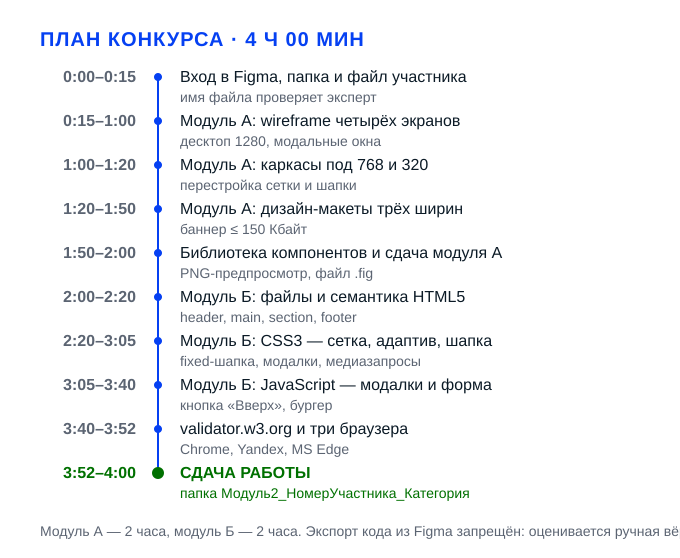
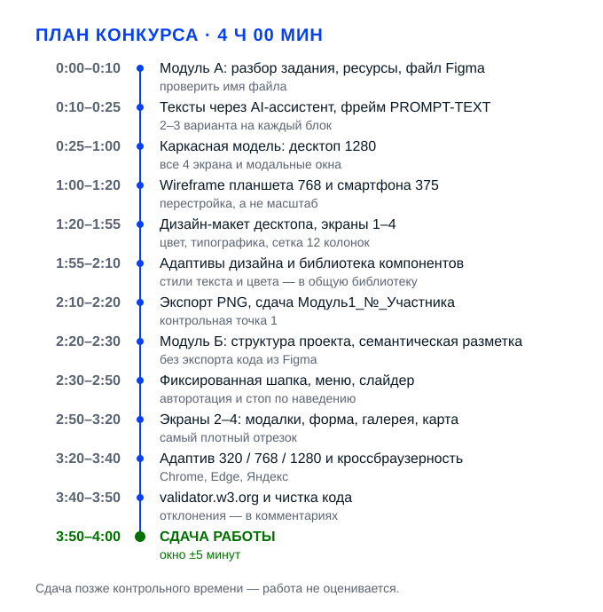
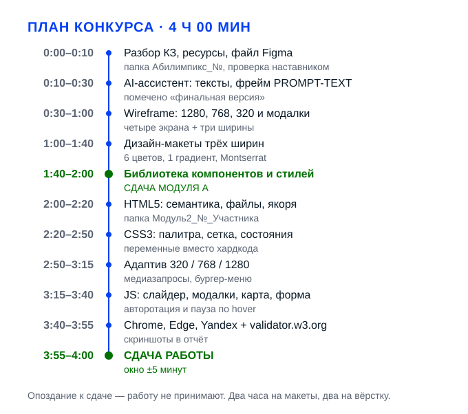

Веб-дизайн (Р,О)
Задания ниже — официальные файлы «Абилимпикс» (источник: abilympics-russia.ru), разложенные по категориям. Решения написаны по тексту задания, регламенту и критериям оценки; в них указано, что именно проверяет эксперт.
Школьник
14–16 лет, базовый уровень заданияВыдержка из официального конкурсного задания: страницы, относящиеся к категории «Школьник» (стр. 5–6, 10–13 источника).
Пошаговое решение
Задание для школьников — лендинг ресурсного центра «Мосволонтёр»: четыре экрана про добровольчество, регистрация на два ближайших мероприятия и адаптив под компьютер, планшет и смартфон. На всё четыре часа: два часа на модуль А в Figma (каркасная модель, дизайн-макеты трёх ширин, библиотека компонентов и фрейм PROMPT-TEXT с текстами от AI-ассистента) и два часа на модуль Б — ручную вёрстку на HTML5, CSS3 и JavaScript с проверкой на validator.w3.org и в браузерах Chrome, Yandex и MS Edge. Экспорт кода из Figma запрещён, поэтому разметка пишется руками, а макет остаётся единственным источником истины. Главный риск — утонуть в дизайне: каркас и черновой макет должны быть закрыты к концу второго часа, иначе верстать будет нечего.

Задача 1. Собрать файл Figma и каркасную модель всех четырёх экрановМодуль А · 2 ч 00 мин · старт 0:00
Каркасная модель — это первый артефакт конкурса и единственный документ, по которому потом сверяют и дизайн, и вёрстку. В задании прямо сказано: wireframe должен учитывать все экраны, наличие модальных окон и каркасные модели под адаптив. Значит, рисуем не «набросок главной», а полный набор: четыре экрана лендинга про добровольчество, две модалки и три ширины — 1280 пикселей и больше, от 768 до 1279 и от 320 до 767. Пока каркас не закрыт, дизайн начинать бессмысленно: любая правка структуры на цветном макете стоит втрое дороже.
Действие 1.1. Развернуть рабочее пространство и сетку
Шаг 1.1.1
Заходим в выданный на чемпионате аккаунт Figma и создаём в разделе Drafts папку с именем «Абилимпикс_№_участника», подставив свой номер. Внутри — новый Design file с именем «Модуль1_НомерУчастника_Категория», например «Модуль1_12_Школьники». Дальше в левой панели страниц делаем четыре: «00-чек-лист», «01-wireframe», «02-дизайн», «03-библиотека». Страницы переименовываем двойным кликом по названию.
Имя папки и файла — формальное требование задания, и оно проверяется до того, как эксперт посмотрит на сами макеты: файл с именем «Untitled» или «макет финал финал» рискует не попасть в оценивание просто потому, что его не идентифицируют как вашу работу. Числовые префиксы экономят эксперту время: он открывает файл и сразу видит, где каркас, где дизайн, а где библиотека.
В левом верхнем углу файла стоит нужное имя, в панели Pages четыре страницы в правильном порядке, и в шапке Figma видно, что вы в командном пространстве, а не в личном драфте. Проверьте ещё, что файл сохранён в сеть: индикатор Cloud рядом с именем не показывает ошибку синхронизации.
Самая частая ошибка — работать в личном драфте под случайным аккаунтом: при смене рабочего места файл просто не найдётся, и два часа модуля А уходят в пустоту. Вторая — сделать всё на одной странице и потом искать нужный фрейм среди десятка других.
Эксперт в первые минуты проверки открывает именно папку и имя файла: это первый пункт чек-листа модуля А, и он фиксируется раньше, чем оценка содержимого.
Шаг 1.1.2
На странице «01-wireframe» ставим три фрейма: Desktop — 1280×4200, Tablet — 768×5200, Mobile — 320×6400. Высоту потом растягиваем по содержимому, поэтому смело берите с запасом. В каждый фрейм включаем Layout grid: 12 колонок, gutter 24, margin 80 для десктопа, 8 колонок с полями 40 для планшета и 4 колонки с полями 16 для смартфона. Цвет сетки ставим светло-красным с прозрачностью около 10 %, чтобы она не мешала читать серые прямоугольники каркаса.
Сетка — это то, что делает каркас каркасом, а не рисунком: именно по колонкам потом выстраиваются карточки четырёх направлений и блоки мероприятий, и именно по ним проверяют, одинаковы ли отступы между секциями. Задание задаёт адаптив конкретными диапазонами ширины, поэтому три разных сетки показывают, что вы понимаете разницу между 768 и 320 пикселями.
Включите сетку (Shift+G) и пролистайте фрейм сверху вниз: все блоки должны начинаться и заканчиваться на направляющих, а вертикальные отступы между секциями — совпадать. Если карточка «висит» на полколонки, это видно сразу и читается как небрежность.
Нарисовать один фрейм 1280 и растянуть его на все остальные — тогда на планшете и смартфоне получается та же сетка из 12 колонок, и содержимое либо расползается, либо сжимается в нечитаемые полоски. Вторая ошибка — сетка с полями «на глаз», из-за чего секции не совпадают по левому краю.
Эксперт включает сетку на каркасе и проверяет, что блоки стоят по колонкам, а поля равны 80, 40 и 16 пикселей на трёх ширинах. Отдельно смотрит, не «висит» ли карточка на полколонки.
Действие 1.2. Нарисовать каркас первого и второго экрана
Шаг 1.2.1
Шапку рисуем прямоугольником высотой 88 пикселей на всю ширину фрейма. Внутри по колонкам: логотип 140×40 слева, горизонтальное меню из пяти пунктов по центру («О движении», «Направления», «Мероприятия», «Галерея», «Контакты»), справа телефон в формате +7 (495) 000-00-00, три квадрата 40×40 под иконки ВКонтакте, Одноклассников и Телеграма и кнопка «Стать волонтёром». Пункты меню — текстовые плашки: так видна реальная длина подписей.
Шапка — самый плотный элемент задания: в ней одновременно логотип, меню, контакты и три соцсети, и по требованию она должна быть зафиксирована в верхней части экрана. Если на каркасе не посчитать ширину, при вёрстке меню наедет на телефон, и придётся либо уменьшать кегль, либо прятать пункты — а это уже расхождение с макетом.
Измерьте линейкой Figma (клавиша K) расстояние от логотипа до первого пункта меню и между соцкнопками: оно должно быть одинаковым, 24 пикселя. Проверьте, что вся шапка укладывается в 1280 без переносов и что справа остаётся поле не меньше 80 пикселей.
Нарисовать шапку «в одну строку текста» без реальных подписей — в вёрстке выясняется, что пять пунктов и телефон не помещаются. Вторая ошибка — забыть состояние зафиксированной шапки, и тогда на макете непонятно, что происходит со страницей при скролле.
Эксперт смотрит на шапку первого экрана: логотип из ресурсов, меню, телефон и три соцсети — всё, что перечислено в задании. Проверяет он и второе состояние шапки.
Шаг 1.2.2
Баннер рисуем плашкой 1280×560 с подписью «изображение 1920×900, ≤150 Кбайт» и поверх — заголовок в две строки, подзаголовок и кнопка «О движении». Под баннером ставим блок описания: три коротких абзаца-заглушки по 2–3 строки, чтобы была видна реальная высота текста. Рядом с кнопкой «О движении» пунктиром намечаем прямоугольник плеера 800×450 — это состояние, которое открывается по нажатию.
Здесь живут два требования, которые легко пропустить: картинка баннера ограничена 150 килобайтами, а по кнопке должно запускаться видео. И то и другое лучше зафиксировать на каркасе подписью, иначе на дизайне вы поставите красивый тяжёлый снимок, а на вёрстке будете судорожно его пережимать за десять минут до сдачи. Плеер на каркасе показывает, что вы продумали сценарий, а не только картинку.
Подпись про вес и размер стоит прямо на плашке баннера, блок описания занимает не меньше трёх строк на десктопе, а плеер нарисован отдельным фреймом с пометкой «состояние: видео». Пересчитайте: 1280 минус два поля по 80 — рабочие 1120 пикселей, в них плеер 800 влезает с запасом.
Сделать баннер во всю высоту экрана и убрать описание «чтобы было красиво» — тогда первый экран не выполняет требование о назначении ресурса и значимости добровольчества. Вторая ошибка — нарисовать кнопку «О движении» без состояния видео, и на защите непонятно, что она делает.
Эксперт проверяет первый экран по трём пунктам задания: баннер, описание назначения и кнопка «О движении». Требование про 150 килобайт он ищет прямо на плашке баннера.
Шаг 1.2.3
Второй экран начинаем с заголовка «Направления работы центра» и сетки из четырёх карточек: на десктопе 4 колонки по 262 пикселя с промежутком 24. В каждой карточке сверху плашка изображения 262×180, под ней заголовок в одну строку, две строки описания и текстовая кнопка «Подробнее». Высоту карточек выравниваем по самой высокой: выделяем все четыре и задаём одинаковую высоту 420, иначе низ карточек «пляшет».
Четыре направления — обязательное количество из задания, и все они равнозначны, поэтому четыре равные колонки читаются как правильная структура, а «три плюс одна широкая» — как ошибка вёрстки. Кнопка «Подробнее» в каждой карточке нужна потому, что по ней открывается модальное окно, и это отдельный пункт оценивания.
Проверьте линейкой: ширина всех карточек одинаковая, промежутки 24, заголовки начинаются на одной горизонтали. Если подписи разной длины ломают сетку — уменьшите кегль заглушки, но не двигайте карточки.
Сделать карточки разной высоты «по содержимому» — низ блока получается рваным, и секция выглядит собранной на скорую руку. Вторая ошибка — одна кнопка «Подробнее» на весь блок вместо четырёх, тогда модалка не привязана к конкретному направлению.
Эксперт считает карточки и проверяет, что в каждой есть изображение, текст и своя кнопка «Подробнее». Четыре одинаковые колонки он читает как правильную структуру.
Действие 1.3. Каркас третьего и четвёртого экрана, модальные окна
Шаг 1.3.1
Третий экран — два мероприятия. Рисуем две широкие карточки 544×360 в две колонки: слева изображение 240×360, справа стек строк — название, дата и время, адрес, возраст волонтёра («от 14 лет» и «от 16 лет» разными значениями) и кнопка «Стать волонтёром». Каждую строку подписываем иконкой-кружком 16×16 и текстом-заглушкой, чтобы в дизайне не потерялись дата и адрес.
Требование к этому экрану перечисляет четыре обязательных поля на каждое мероприятие, и возраст волонтёра — то, что забывают чаще всего, потому что это не свойство карточки, а ограничение для человека. Если на каркасе поля нет, на дизайне оно тоже не появится, и пункт «информация о мероприятиях» провалится целиком, хотя кнопка и картинка на месте.
В обеих карточках есть все четыре строки, даты разные, возраст указан разными формулировками. Ширина карточек одинаковая, кнопки стоят на одной линии по низу — проверьте это, выделив обе карточки. Сравните в масштабе 50 % — сдвиг виден сразу.
Нарисовать одно мероприятие и «размножить» его копией с той же датой: эксперту видно, что второе событие не проработано, а в вёрстке вы получите дубль текста. Вторая ошибка — убрать адрес в модалку, хотя по заданию он должен быть на карточке.
Эксперт открывает третий экран и ищет у каждого мероприятия дату, адрес и возраст волонтёра. Отсутствие любого из трёх полей он отмечает сразу. И подписи кнопок он сверяет с макетом.
Шаг 1.3.2
Справа от основного потока рисуем две модалки 640×520 и подписываем их: «Модальное окно Подробнее» и «Модальное окно Регистрация». В первой — заголовок направления, изображение 560×240, четыре-пять строк текста и крестик закрытия 32×32 в правом верхнем углу. Во второй — заголовок «Стать волонтёром», три поля ввода высотой 48 с подписями «ФИО», «Дата рождения», «Почтовый адрес», кнопка «Зарегистрироваться» на всю ширину и тот же крестик. Под модалками — подложка на весь экран, чёрный 40 %.
Модальные окна названы в задании отдельно, и их наличие проверяют как самостоятельный пункт: одна открывается по «Подробнее», вторая — по «Стать волонтёром». Подложка на каркасе нужна, чтобы вы сразу увидели контраст: текст формы должен читаться на затемнённом фоне, а не сливаться с ним.
Обе модалки есть, у обеих нарисован крестик и подложка, ширина 640 укладывается в десктопный фрейм 1280 с полями по 320. В форме ровно три поля и одна кнопка — столько же, сколько требует задание для школьников.
Нарисовать модалку без крестика и без подложки: на защите невозможно закрыть окно, и это сразу читается как недодуманный сценарий. Вторая ошибка — добавить в форму лишние поля (пароль, телефон), скопировав их из категории «Студенты»: там набор другой, а у школьников требуется ровно три поля.
Эксперт сверяет модалки с заданием: во второй должно быть три поля и кнопка «Зарегистрироваться». Лишние поля из категории студентов он считает ошибкой.
Шаг 1.3.3
Четвёртый экран: заголовок «Прошедшие события», сетка галереи из четырёх снимков — на десктопе 4 колонки 262×200, с подписями даты под каждым. Ниже — футер высотой около 240: слева логотип и строка копирайта «© И. О. Фамилия, 2025», в центре колонка навигации из тех же пяти пунктов, справа контакты центра и три иконки соцсетей, а в правом нижнем углу — круглая кнопка «Вверх» 48×48 со стрелкой.
Галерея и футер — последний экран, и именно его чаще всего сдают недоделанным, потому что время кончается. Между тем в футере перечислены шесть обязательных элементов, включая копирайт с конкретным форматом записи и кнопку «Вверх», которая потом потребует JavaScript. Если элементы не нарисованы, в вёрстке их тоже не будет.
В галерее ровно четыре картинки (минимум по заданию — три-четыре), в футере пересчитаны все шесть элементов, копирайт записан в формате «© И. О. Фамилия, 2025» с вашими инициалами. Кнопка «Вверх» стоит в футере и не перекрывает текст.
Сделать галерею из двух картинок — прямое нарушение требования «не менее 3-4 картинок». Вторая ошибка — написать в копирайте «© 2025» без имени: формат записи задан в задании дословно. Третья — поставить снимки разного размера: сетка галереи поедет.
Эксперт листает четвёртый экран, считает снимки в галерее и читает копирайт по формату. Кнопку «Вверх» он ищет в футере, а не в шапке. Обе ошибки видны на превью.
Шаг 1.3.4
Собираем проверку целиком: уменьшаем масштаб до 15 % (Shift+0 показывает весь фрейм), смотрим на все четыре экрана сразу и ищем дырки в ритме — места, где секции слиплись или, наоборот, зияет пустота. После этого проходим по строкам чек-листа со страницы «00-чек-лист» и напротив каждой ставим галочку или крестик. Всё, что с крестиком, дорисовываем сразу, пока помните, куда это ставить.
Каркас оценивают целиком, а не по фрагментам: эксперту важно увидеть, что структура из восьми обязательных блоков выдержана и что между секциями есть единый вертикальный отступ. Проверка на масштабе 15 % — единственный способ увидеть ритм страницы: в масштабе 100 % вы смотрите на детали и не замечаете, что третий экран вдвое плотнее второго.
Все строки чек-листа закрыты, вертикальные отступы между секциями одинаковые (например, 120 сверху и снизу каждой), ни одна секция не обрезана краем фрейма. Фрейм растянут по содержимому: внизу виден футер целиком.
Оставлять на каркасе «потом дорисуем» — на дизайне это превращается в придумывание структуры на ходу, и макет начинает расходиться с тем, что вы потом сверстаете. Вторая ошибка — проверять только десктоп и забыть, что нужны ещё две ширины.
Эксперт сравнивает каркас с чек-листом структуры и смотрит ритм на общем виде. Полнота для него важнее аккуратности серых прямоугольников. Проверяет он и отступы секций.
Действие 1.4. Перестроить каркас под планшет и смартфон
Шаг 1.4.1
На фрейме 768 переводим сетку на 8 колонок с полями 40 и перестраиваем блоки: меню уезжает в бургер 40×40 справа в шапке, телефон остаётся текстом под логотипом в две строки, соцкнопки встают в ряд под шапкой. Карточки направлений становятся 2×2 (344 пикселя каждая), мероприятия — в одну колонку на всю ширину, галерея — 2×2 по 344×220, футер — в две колонки: логотип с копирайтом и контакты, навигация уходит под них строкой.
Планшет — это не «уменьшенный десктоп»: при 768 пикселях четыре колонки по 160 превращаются в нечитаемые полоски, поэтому структура должна реально меняться. Требование задания задаёт диапазон 768–1279, и эксперту важно увидеть, что вы перестроили раскладку, а не просто сжали фрейм.
На 768 в шапке нет горизонтального меню, карточки стоят по две в ряд, галерея тоже 2×2, все блоки лежат внутри полей 40. Проверьте, что ни один текст не переносится по одной букве и не выходит за карточку.
Растянуть десктопный фрейм до 768 и оставить всё как есть — карточки сжимаются, а кнопки наезжают на текст. Вторая ошибка — спрятать меню в бургер, но не нарисовать само раскрытое состояние, и потом в вёрстке нечего повторять.
Эксперт открывает планшетный каркас рядом с десктопным и ищет перестроение: другую сетку, бургер вместо меню, две карточки в ряд. Планшетный каркас он листает целиком.
Шаг 1.4.2
На фрейме 320 всё выстраивается в одну колонку: поля 16, ширина контента 288. Шапку делаем в два ряда — логотип и бургер сверху, телефон мелким кеглем под ними. Баннер превращается в плашку 288×360, заголовок — в три строки по 28 пикселей, кнопка «О движении» — на всю ширину, высотой 48. Карточки направлений и мероприятия идут друг под другом, галерея — 2×2 по 140×140, кнопка «Вверх» поднимается в правый угол футера и не перекрывает копирайт.
320 пикселей — нижняя граница диапазона из задания, и именно на ней вылезают все проблемы: длинные подписи кнопок, трёхколоночные футеры, горизонтальные меню. Проще нарисовать это на каркасе, чем ловить переполнение в браузере, когда времени останется мало. Кнопки на всю ширину и высотой 48 нужны потому, что по ним попадают пальцем.
Фрейм 320 не имеет горизонтальной прокрутки: ни один блок не выходит за 320. Все кнопки — на всю ширину, высота не меньше 44–48, между соседними кнопками есть отступ не меньше 8. Текст читается без увеличения.
Оставить в шапке горизонтальное меню из пяти пунктов — на 320 оно либо вылезает за край, либо сжимается в нечитаемую строку. Вторая ошибка — оставить галерею в четыре колонки, и картинки становятся по 60 пикселей.
Эксперт проверяет мобильный каркас на горизонтальный выход и на размер кнопок. Каркас, нарисованный как сжатый десктоп, он видит без пояснений. Смотрит он и поля в 16 пикселей.
Шаг 1.4.3
Сверяем три фрейма между собой по порядку блоков: шапка → баннер → описание → направления → мероприятия → галерея → футер. Порядок на всех ширинах одинаковый, меняется только раскладка внутри. Отдельно проходим по кнопкам и полям: на десктопе они 48 в высоту, на планшете 48, на смартфоне тоже 48 — не меньше. Подписываем фреймы именами «Каркас_1280», «Каркас_768», «Каркас_320» и группируем в один фрейм-контейнер «Wireframe».
Единый порядок блоков — это то, что делает лендинг предсказуемым: пользователь, привыкший к десктопу, на телефоне находит те же секции в том же порядке. Если на мобильном галерея вдруг оказывается над мероприятиями, при вёрстке вы либо нарушите соответствие макету, либо начнёте переставлять блоки в HTML, что почти всегда ломает семантику и валидатор.
Три фрейма подписаны и лежат рядом, порядок секций совпадает, высота кнопок одинаковая. Пролистайте все три подряд и проверьте, что нигде не пропала секция целиком — например, описание назначения сайта.
Менять порядок блоков на мобильном «так логичнее» — эксперт сверяет адаптив с десктопом, и расхождение читается как невнимательность. Вторая ошибка — оставить фреймы без имён, и в конце модуля вы сами не найдёте нужную версию.
Эксперт листает три каркаса подряд и сверяет порядок секций. Расхождение порядка он отмечает как несоответствие адаптива. Отмечает он и подписи фреймов.
Задача 2. Получить текст у AI-ассистента и собрать фрейм PROMPT-TEXTМодуль А · 2 ч 00 мин · окно 0:15–0:40
Текстовый контент в этом задании нельзя брать из интернета — его нужно сгенерировать самостоятельно и доказать это. В задании перечислены три вида текста: тезисное описание проекта для первого экрана, описания четырёх направлений вместе с содержимым модального окна «Подробнее» и подписи для мероприятий. Всё это складывается на отдельный фрейм с именем PROMPT-TEXT: там долны быть видны и ваши запросы, и несколько вариантов ответа, и выбранный вариант с пометкой «финальная версия». Этот фрейм — формальный результат модуля А, его смотрят до макетов.
Действие 2.1. Сформулировать запросы и получить варианты
Шаг 2.1.1
Открываем в соседней вкладке giga.chat или alice.yandex.ru, входим в выданный аккаунт и первым запросом задаём роль и рамки: «Ты копирайтер ресурсного центра Мосволонтёр. Напиши три варианта тезисного описания лендинга о добровольчестве для школьников 14–17 лет. Объём каждого — 280–320 знаков, без пафоса, без слов «уникальная возможность» и «команда единомышленников», с одним конкретным фактом о работе центра». Все три варианта просим одним ответом, чтобы сравнивать их рядом.
Запрос с ролью, аудиторией, объёмом и запрещёнными словами даёт текст, который можно ставить в макет без переписывания: он ложится в три строки под баннером и не разваливает композицию. Несколько вариантов требует само задание, и это проверяется по фрейму PROMPT-TEXT.
В ответе действительно три разных варианта, каждый в пределах 280–320 знаков, и ни в одном нет запрещённых формулировок. Скопируйте ответ целиком в буфер — он пойдёт на фрейм PROMPT-TEXT как есть, вместе с текстом вашего запроса.
Просить «напиши текст про волонтёрство» — модель выдаст общие слова, которые стыдно ставить в макет, и придётся либо генерировать заново, либо писать самому, теряя время модуля. Вторая ошибка — не сохранить сам запрос: без него фрейм PROMPT-TEXT превращается в набор красивых абзацев без доказательства авторства.
Эксперт открывает фрейм PROMPT-TEXT и ищет сам запрос рядом с ответами. По нему видно, что текст сгенерирован на конкурсе, а не взят из сети. Ищет он и пометку варианта.
Шаг 2.1.2
Второй запрос — на четыре направления. Пишем так: «Опиши четыре направления работы ресурсного центра добровольчества: событийное, социальное, экологическое, донорское. Для каждого: название до 22 знаков, краткое описание на 120–140 знаков для карточки и подробный текст на 550–650 знаков для модального окна, с примером конкретной задачи волонтёра и требованием к возрасту. Без списков, обычными абзацами». Просим две версии с разной интонацией: одну нейтральную, вторую — обращённую к читателю.
Здесь важна двойная длина: карточка требует короткого текста, а модальное окно — подробного, и это разные жанры. Если сгенерировать один текст, вы получите либо обрезанные карточки, либо пустую модалку, которую придётся заполнять на ходу. Четыре направления, а не три и не пять, — это требование задания, и лишнее направление в макете тоже считается ошибкой.
В ответе ровно четыре направления, у каждого два текста — короткий и длинный, каждый в заданном диапазоне знаков. Длинный текст не повторяет короткий дословно: в модалке должна быть новая информация, иначе окно «Подробнее» выглядит бессмысленно.
Получить четыре абзаца одинаковой длины «на 300 знаков» и потом резать их ножницами под карточку. Вторая ошибка — попросить список маркеров: в макете карточки он не влезет, а в вёрстке вы получите неопрятную лесенку.
Эксперт сверяет количество направлений и наличие отдельного текста для модалки. Четыре направления — требование задания, пятое он считает ошибкой. Текст в модалке должен быть новым.
Шаг 2.1.3
Третий запрос — на тексты мероприятий и микрокопию интерфейса: «Придумай два мероприятия ресурсного центра: название до 40 знаков, дата, время, адрес в Москве, возраст волонтёра (первое — от 14 лет, второе — от 16 лет), описание на 90–110 знаков. Дополнительно: подписи для кнопок «Стать волонтёром», «О движении», «Подробнее», тексты подсказок к полям формы и сообщения об ошибках для пустого поля, неверной даты и неполного адреса». Одним запросом получаем и контент, и микрокопию — она потом переиспользуется в JS.
Даты и адреса нужны конкретные, потому что по заданию они выводятся на карточке и по ним проверяют полноту блока. Сообщения об ошибках появляются в момент проверки полей: заранее придуманные формулировки звучат по-человечески, а придуманные на бегу — как «Ошибка! Поле неверно».
У мероприятий есть все четыре обязательных элемента, возраста разные, даты в будущем и не совпадают. Сообщения об ошибках сформулированы отдельно для каждого случая и укладываются в одну строку под полем.
Взять даты «1 января 2025» — они уже в прошлом, и блок «ближайшие мероприятия» выглядит нелепо. Вторая ошибка — одно сообщение «Заполните все поля» на все случаи: оно не подсказывает, что именно не так.
Эксперт проверяет карточки мероприятий на дату, адрес и возраст, а форму — на понятные подсказки. Даты в прошлом он отмечает сразу. Смотрит он и подсказки к полям.
Действие 2.2. Отобрать лучшее, пометить и перенести в файл
Шаг 2.2.1
Раскладываем варианты на странице «00-чек-лист» и сравниваем по трём признакам: есть ли конкретика (цифры, названия, задачи), нет ли штампов, влезает ли текст в отведённые строки макета. Выбранный вариант помечаем текстом «ФИНАЛЬНАЯ ВЕРСИЯ» зелёным цветом кеглем 14 и отделяем линией; отклонённые оставляем как есть, не удаляя. В конце правки — финальные тексты не больше 300 знаков на тезис и 140 на карточку.
Пометку «финальная версия» требует задание: без неё эксперт не понимает, какой из трёх абзацев попал в макет. Сохранённые отклонённые варианты показывают, что выбор был, а не что текст просто скопирован из первого ответа. Пометка стоит рядом с выбранным абзацем, а не в шапке фрейма.
На фрейме видно три варианта, один помечен «ФИНАЛЬНАЯ ВЕРСИЯ» и совпадает с текстом в макете слово в слово. Проверьте именно совпадение: разошедшиеся на одно слово тексты выглядят как две разные версии.
Пометить «финальным» один вариант, а в макет вставить другой — формально пометка есть, а по факту она ложная, и эксперт это видит при сверке. Вторая ошибка — удалить остальные варианты и оставить один: выбора тогда не было.
Эксперт ищет пометку «финальная версия» и сверяет помеченный текст с макетом слово в слово. Расхождение читается как ложная пометка. Подпись он ищет рядом с абзацем.
Шаг 2.2.2
Собираем фрейм PROMPT-TEXT: ширина 1280, высота по содержимому, внутри три колонки по 380 пикселей с промежутком 40 — «Запрос», «Вариант 1», «Вариант 2», а под ними полосой «Выбранный текст». Имя фрейма пишем латиницей ровно так, как в задании: PROMPT-TEXT. Сверху добавляем строку с инструментом и датой: «GigaChat, 14.11.2026». Текст набираем живым текстом, а не картинкой, чтобы его можно было скопировать.
Имя фрейма задано дословно, и его ищут поиском по файлу — любое «Prompt text» или «Промпт» не найдётся. Живой текст важен и для проверки, и для дела: вы будете копировать эти абзацы в макет и в HTML, а с картинки копировать нечего. По этому фрейму видно, что текст не взят из сети.
Фрейм называется PROMPT-TEXT, лежит на странице «01-wireframe» или отдельной странице рядом, содержит запросы, варианты и выбранный текст с пометкой. Поиск по файлу (Ctrl+F) по слову PROMPT находит его с первого раза.
Сделать фрейм из скриншотов чата — текст нечитаем при увеличении, и скопировать его в макет невозможно. Вторая ошибка — положить фрейм в самый низ файла, где его никто не найдёт. Фрейм ищут поиском, поэтому имя пишем латиницей.
Эксперт находит фрейм поиском по имени и смотрит, есть ли там запрос, варианты и выбранный текст. Отдельно проверяет, что текст живой, а не картинкой.
Задача 3. Нарисовать дизайн-макеты под три ширины и собрать библиотекуМодуль А · 2 ч 00 мин · окно 0:40–2:00
После каркаса начинается дизайн: палитра, типографика, сетка, изображения, состояния кнопок. Требование задания жёсткое по формату — три версии макета с именами вида «Макет_320 px», десктоп от 1280, планшет 768–1279, смартфон 320–767, каждая с предпросмотром в PNG или JPG, плюс библиотека компонентов и стилей. Работаем в порядке «стили → десктоп → адаптив → библиотека»: так компоненты появляются уже в контексте и их не приходится перерисовывать.
Действие 3.1. Задать стилевую основу
Шаг 3.1.1
Собираем палитру из пяти цветов и сразу заводим её как Color styles: акцент #D93F0B (тёплый оранжевый — цвет волонтёрских акций), тёмный текст #14181F, серый текст #5A6270, светлый фон #F5F3EF, белый #FFFFFF. Проверяем контраст пар «тёмный на светлом» и «белый на акценте» калькулятором контраста — обе пары должны давать не меньше 4,5:1. Акцент используем только для кнопок и активных ссылок, не более чем на 10 % площади экрана.
Пять цветов — это ровно столько, сколько нужно лендингу: фон, два уровня текста, акцент и белый. Когда в макете появляется шестой оттенок «на всякий случай», в вёрстке он превращается в ещё одну CSS-переменную и ещё одну причину расхождения с макетом. Контраст 4,5:1 нужен для читаемости: аудитория этого лендинга включает людей с инвалидностью, и часть из них — слабовидящие.
Все пять цветов есть в панели Local styles, у каждого осмысленное имя (accent, text, text-muted, bg, white). Прогоните пары через любой контраст-чекер: белый на #D93F0B даёт около 4,6:1, тёмный на #F5F3EF — выше 12:1.
Собрать палитру «по вкусу» из десяти близких оттенков синего — макет пестрит, а в библиотеке стилей невозможно разобраться. Вторая ошибка — поставить белый текст на светло-оранжевую кнопку: контраст падает ниже 3:1, и надпись читается плохо.
Эксперт открывает панель стилей и считает цвета, а на макете проверяет, что кнопки и ссылки взяты из стилей, а не залиты пипеткой. Считает он и текстовые стили в той же панели.
Шаг 3.1.2
Типографика — одна гарнитура с кириллицей, например Inter или Manrope, подключённая локально в Figma. Строим шкалу и сразу делаем текстовые стили: H1 — 56/60, вес 700; H2 — 40/46, вес 700; H3 — 24/30, вес 600; Body — 16/26, вес 400; Caption — 13/18, вес 400, цвет text-muted. Отдельным стилем — Button 16/20, вес 600, без разрядки. На мобильном те же стили, но H1 уменьшаем до 32/36 через отдельный набор стилей Mobile/H1.
Шкала из пяти ступеней держит иерархию: читатель за секунду понимает, что главное, а что пояснение. Пять стилей, а не двадцать ручных размеров — это заодно гарантия, что в вёрстке получится пять же CSS-переменных вместо хаоса кеглей. Отдельные мобильные стили нужны потому, что 56 пикселей на ширине 320 дают строку в четыре слова и разваливают первый экран.
В панели Text styles пять десктопных и хотя бы один мобильный стиль, все с именами. Проверьте на длинном заголовке: в стиле H1 строка не длиннее 60–70 знаков, иначе глаз теряет начало следующей строки.
Набрать заголовки вручную разными кеглями — через десять фреймов вы уже не помните, какой размер был на первом экране, и макеты расходятся между собой. Вторая ошибка — взять декоративную гарнитуру без полноценной кириллицы: часть букв подменяется системным шрифтом.
Эксперт смотрит на панель текстовых стилей и на иерархию заголовков в макете. Пять ручных кеглей вместо шкалы он замечает сразу. Смотрит он и мобильные стили.
Шаг 3.1.3
Задаём геометрию: отступы кратны 8 (8, 16, 24, 32, 48, 80, 120), радиусы — 12 для кнопок и полей, 24 для карточек и изображений, тень одна: 0 8 24 rgba(20,24,31,0.08). Всё это — Effect styles и переменные числа, а не «на глаз». На десктопном фрейме включаем сетку 12 колонок с полями 80 и промежутком 24, контейнер контента — 1120 пикселей по центру. Повторяем сетку на 768 (8 колонок, поля 40) и 320 (4 колонки, поля 16).
Шаг 8 пикселей — это то, что потом один в один переносится в CSS: gap: 24px, padding: 80px 0. Если отступы «на глаз», при вёрстке вы будете подбирать каждое значение и всё равно не попадёте, а расхождение с макетом — отдельный пункт оценки. Радиусы и тень, заведённые стилями, экономят время на каждой карточке: применяются одним кликом.
Проверьте линейкой три разных отступа между блоками — все должны попадать в ряд 8/16/24/32/48/80/120. Карточки в сетке стоят ровно по колонкам, а контейнер на десктопе имеет ширину 1120 и отступ 80 слева и справа.
Расставить отступы «по ощущению» — к третьему экрану ритм рассыпается, а в вёрстке приходится вводить десять разных значений margin. Вторая ошибка — тянуть контейнер на всю ширину 1280 без полей: текст липнет к краю экрана.
Эксперт измеряет два-три отступа линейкой и сверяет их с шагом 8. Ритм и сетка видны на общем виде макета раньше цветов. Три ширины он сверяет по полям.
Действие 3.2. Нарисовать первый и второй экран десктопа
Шаг 3.2.1
Первый экран: фиксированная шапка 88 пикселей на белом с тенью при скролле (делаем два состояния — прозрачная сверху и белая с тенью после 80 пикселей), под ней баннер высотой 560 с фотографией из папки «Ресурсы». Фото готовим заранее: сжимаем в Squoosh или TinyPNG до 1600 пикселей по ширине и качества 78, следим, чтобы файл был не больше 150 Кбайт, и подписываем слой «banner 148 Кбайт». Поверх — заголовок 56/60 в две строки, подзаголовок 20/30 и кнопка «О движении» 220×56 с иконкой play.
Ограничение в 150 килобайт относится именно к картинке баннера, и проверяется оно по файлу, а не по красоте кадра: тяжёлый снимок придётся пережимать в спешке уже на вёрстке. Два состояния шапки нужны потому, что она фиксированная: на светлом баннере прозрачная шапка выглядит воздушно, а после скролла над контентом должна стать плотной, иначе текст просвечивает сквозь меню.
Файл баннера весит меньше 150 Кбайт — проверьте это в проводнике, а не в Figma. Кнопка «О движении» стоит в пределах первого экрана при высоте окна 800, шапка нарисована в двух состояниях и подписана.
Взять исходный снимок 4 Мбайт и «потом сжать» — на вёрстке он либо останется тяжёлым, либо потеряет качество при грубом сжатии. Вторая ошибка — нарисовать только прозрачную шапку: при скролле белый текст на белом фоне исчезает.
Эксперт проверяет вес баннера в свойствах файла и наличие логотипа из ресурсов в шапке. Оба пункта он смотрит до оценки композиции, вместе с подписью слоя баннера.
Шаг 3.2.2
Второй экран: заголовок H2 «Четыре направления работы центра», под ним сетка 4×1 из карточек 262 пикселя. В карточке — изображение 262×180 с радиусом 16, заголовок H3 в одну-две строки, текст Body в три строки и текстовая кнопка «Подробнее» с акцентным цветом и стрелкой. Для кнопки делаем три состояния: обычное, hover (подчёркивание и сдвиг стрелки на 4 пикселя) и focus (обводка 2 пикселя акцентом со смещением 2). Карточку собираем как компонент, чтобы правка одной меняла все.
Четыре карточки с одинаковой высотой и одинаковым ритмом — это и есть «информация о четырёх направлениях» из задания. Состояния hover и focus в вёрстке придётся реализовывать: если в макете их нет, вы придумаете их на ходу. Компонент вместо копий — гарантия, что забытая правка не останется на одной карточке из четырёх.
Все четыре карточки — экземпляры одного компонента (в панели слоёв значок ромба), высота одинаковая, тексты не выходят за пределы. У кнопки «Подробнее» нарисованы три состояния, они лежат рядом с карточкой и подписаны.
Нарисовать карточки копированием — при смене палитры одна остаётся старого цвета. Вторая ошибка — сделать кнопку «Подробнее» плашкой с заливкой: на четырёх карточках подряд четыре ярких пятна перетягивают внимание с изображений.
Эксперт считает карточки направлений и проверяет, что все они экземпляры компонента. Состояния кнопки он ищет рядом с карточкой. Состояния он сверяет с библиотекой.
Шаг 3.2.3
Модальное окно «Подробнее»: фрейм 640×560 по центру, радиус 24, тень, крестик 32×32 в правом верхнем углу на расстоянии 24 от краёв. Внутри — изображение направления 592×220, заголовок H3, текст на 550–650 знаков (тот, что выбран из AI-вариантов) и кнопка «Стать волонтёром» внизу. Под модалкой — подложка на весь экран с заливкой #14181F и прозрачностью 60 %. Рисуем два состояния: для направления «Событийное» и для «Экологического», чтобы было видно, что содержимое подставляется.
Модалка — отдельный пункт структуры, и её проверяют на двух вещах: она закрывается и текст в ней длиннее, чем в карточке. Если окно повторяет карточный текст, кнопка «Подробнее» не даёт новой информации и воспринимается как формальность. Два состояния показывают, что вы понимаете подстановку данных, а не рисуете единственный статичный экран.
Ширина 640 при десктопе 1280 оставляет по 320 с каждой стороны, окно читается как модальное, а не как страница. Крестик не перекрывает изображение, подложка затемняет фон так, что текст окна остаётся главным.
Сделать модалку на всю ширину экрана — она перестаёт отличаться от страницы, и пользователь не понимает, куда попал. Вторая ошибка — текст короче карточного: окно «Подробнее» оказывается беднее превью.
Эксперт открывает модалку на прототипе, проверяет закрытие и то, что текст в ней длиннее карточного. Содержимое должно относиться к направлению. Проверяет он и закрытие крестиком.
Действие 3.3. Нарисовать третий и четвёртый экран
Шаг 3.3.1
Третий экран: заголовок «Ближайшие мероприятия», две карточки 544×380 в две колонки. В карточке — изображение сверху 544×200, ниже дата крупно (H3, акцент), название, адрес с иконкой метки, бейдж возраста «от 14 лет» / «от 16 лет» в виде плашки с фоном #F5F3EF и кнопка «Стать волонтёром» на всю ширину карточки, высотой 52. Бейдж делаем отдельным компонентом с двумя вариантами, чтобы на карточках он не выглядел по-разному.
Дата, адрес и возраст — три обязательных поля, причём возраст в задании дан примером «от 14 лет», «от 16 лет», то есть это ограничение для участника. Крупная дата нужна потому, что человек ищет именно её; мелкая строчка где-то в середине карточки заставляет вчитываться. Кнопка на всю ширину карточки — самый крупный интерактивный элемент экрана, и на мобильном она сохранит размер.
Обе карточки одной высоты, кнопки на одной линии, даты разные, возраст указан по-разному. Бейдж — экземпляр компонента, а не нарисованный прямоугольник с текстом. Нижние границы кнопок должны совпасть до пикселя.
Написать возраст мелким серым текстом в общем абзаце — он теряется, и эксперт, ищущий это поле, его не находит. Вторая ошибка — сделать кнопку маленькой текстовой ссылкой: на мобильном в неё невозможно попасть пальцем.
Эксперт ищет на карточках дату, адрес и бейдж возраста, а кнопку — по низу карточки. Мелкий серый возраст он считает отсутствующим полем, а бейдж ищет в двух вариантах.
Шаг 3.3.2
Форма регистрации в модалке: ширина 560, отступы 40, три поля по 56 пикселей с подписями над полем — «ФИО», «Дата рождения», «Почтовый адрес», кнопка «Зарегистрироваться» на всю ширину. Для каждого поля рисуем четыре состояния: обычное (рамка 1 пиксель #D5D2CB), focus (рамка акцентом 2 пикселя), error (рамка #C0271B и текст ошибки под полем 13/18) и filled. Крестик закрытия — тот же компонент, что в модалке «Подробнее».
Состояния полей — это то, что превращает макет в техзадание для вёрстки: без нарисованного error вы не будете знать, как выглядит подсказка, и в браузере появится стандартное «Заполните это поле» на английском. Форма из трёх полей — требование именно для школьников: пароль и кнопки «Войти» относятся к категории студентов, и лишние поля здесь читаются как невнимательное чтение задания.
Три поля, три подписи, одна кнопка. Состояния нарисованы для всех трёх полей и лежат рядом с формой блоком «состояния». Сообщения об ошибках написаны по-русски и относятся к конкретному полю. Проверьте состояния на трёх ширинах.
Нарисовать только идеальное состояние — на защите нечего показать при проверке валидации, а в вёрстке сообщения об ошибках появляются в случайных местах. Вторая ошибка — подписи-плейсхолдеры внутри поля вместо label: после ввода текста подпись исчезает.
Эксперт открывает форму и считает поля: их должно быть три. Отдельно ищет нарисованное состояние ошибки — без него проверка валидации не читается. Крестик закрытия он сверяет с первой модалкой.
Шаг 3.3.3
Четвёртый экран: заголовок «Прошедшие события», галерея 4 колонки по 262×200 с радиусом 16, под каждым снимком подпись Caption с датой и названием. Футер: фон #14181F, текст белый, высота 240, четыре зоны — логотип с копирайтом «© И. О. Фамилия, 2025» (подставьте свои инициалы), навигация, контакты с телефоном и адресом, соцсети. В правом нижнем углу — круглая кнопка «Вверх» 48×48 с акцентной заливкой и иконкой стрелки, отступ 40 от краёв.
Галерея должна содержать не менее 3–4 картинок, а футер — шесть обязательных элементов, включая копирайт в заданном формате и кнопку «Вверх». Эти элементы потом станут отдельными блоками вёрстки, и рисовать их на дизайне обязательно: иначе в HTML они появятся «из головы» и разойдутся с макетом, что проверяется сравнением.
В галерее четыре разные картинки с подписями, в футере пересчитаны все шесть элементов, копирайт записан дословно в формате из задания. Кнопка «Вверх» не перекрывает контакты и нажимается, не задевая соседние ссылки.
Написать «© 2025» без имени — формат в задании указан как «© И. О. Фамилия, 2025». Вторая ошибка — поставить кнопку «Вверх» поверх текста футера: она закрывает контакты, а на мобильном перекрывает половину экрана.
Эксперт листает четвёртый экран, считает снимки и пересчитывает элементы футера. Копирайт он читает по формату из задания. Смотрит он и подписи под снимками.
Действие 3.4. Перестроить макеты под планшет и смартфон
Шаг 3.4.1
Фрейм «Макет_768 px»: ширина 768, поля 40, контент 688. Шапка — логотип слева, бургер 40×40 справа, контакты уходят в раскрывающееся меню. Рисуем оба состояния меню: закрытое и открытое — панель под шапкой высотой 400 с пятью пунктами по 48 пикселей и тремя соцкнопками в ряд. Карточки направлений — 2×2 по 332, мероприятия — одна колонка по 688, галерея — 2×2 по 332×220, футер — две колонки.
Диапазон 768–1279 по заданию требует отдельного макета, и главное изменение здесь — не ширина, а навигация: горизонтальное меню из пяти пунктов с телефоном уже не помещается, поэтому оно уходит в бургер. Открытое состояние меню нужно нарисовать, потому что в вёрстке вы будете его показывать и должны знать, как оно выглядит: высота строки, отступы, порядок социальных иконок.
На 768 нет горизонтального меню, карточки по две в ряд, все блоки внутри 688 пикселей. Открытое меню нарисовано отдельным фреймом, пункты не перекрывают друг друга, высота строки не меньше 48. Меню закрывает контент, а не сдвигает его.
Оставить на планшете десктопную шапку — пять пунктов и телефон сжимаются, и подписи переносятся по слогам. Вторая ошибка — нарисовать бургер и не нарисовать меню: в вёрстке получится кнопка, которая ничего не открывает.
Эксперт сравнивает планшетный макет с десктопным и ищет перестроение навигации. Открытое меню он проверяет на отдельном фрейме. Высоту пунктов он измеряет.
Шаг 3.4.2
Фрейм «Макет_320 px»: поля 16, контент 288. Первый экран перестраиваем: заголовок 32/36 в три строки, кнопка «О движении» на всю ширину, баннер 288×360. Карточки направлений и мероприятия — по одной, изображение сверху на всю ширину карточки, кнопка внизу высотой 52. Галерея 2×2 по 140×140. Футер в одну колонку: логотип, копирайт, навигация, контакты, соцсети, кнопка «Вверх» по центру внизу.
Смартфон — самый жёсткий случай: на 320 всё, что на десктопе стояло в ряд, обязано встать в колонку, иначе появится горизонтальная прокрутка. Кнопки на всю ширину — не только эстетика: на узком экране маленькая кнопка в углу карточки превращается в мишень 40×20, в которую не попасть пальцем.
Пролистайте фрейм по горизонтали: ничего не выходит за 320. Ширина всех кнопок равна ширине контейнера, высота не меньше 48. Текст нигде не обрезан и не наезжает на изображения. Горизонтальный выход виден при прокрутке с Shift.
Оставить в карточке горизонтальную раскладку «картинка слева, текст справа» — на 288 пикселях изображение занимает треть, а текст рвётся по два слова в строку. Вторая ошибка — уменьшить кегль основного текста до 12, чтобы всё влезло: читать невозможно.
Эксперт смотрит мобильный макет на отсутствие горизонтального выхода и на размер кнопок. Обрезанный текст он видит на превью. И подписи кнопок он сверяет с макетом.
Шаг 3.4.3
Модальные окна на планшете и смартфоне: на 768 оставляем ширину 560 по центру, на 320 делаем окно на всю ширину с отступами 16 и прижимаем к низу экрана, скругляя только верхние углы. Внутри — вертикальный скролл, если контент не влезает: на 320 форма из трёх полей и кнопки занимает около 560 пикселей, а видимая высота телефона меньше. Шапку окна с заголовком и крестиком фиксируем, чтобы кнопка закрытия не уезжала при прокрутке.
Модалка, нарисованная только под десктоп, на телефоне вылезает за экран или превращается в узкую полоску — а по заданию регистрация должна работать именно с телефона, где сидит основная аудитория школьников. Фиксированная шапка окна — вопрос выхода: пользователь, прокрутивший длинную форму, должен закрыть её, не листая обратно наверх.
На 320 окно занимает всю ширину, крестик виден в любом состоянии прокрутки, под ним помещаются три поля и кнопка. Проверьте, что при открытом окне фон не прокручивается — на макете это видно по фиксированной подложке.
Сделать модалку фиксированной высоты 560 на всех разрешениях — на телефоне нижняя часть с кнопкой «Зарегистрироваться» просто не видна. Вторая ошибка — уменьшить поля до 36 пикселей, чтобы всё влезло: попасть в них пальцем трудно.
Эксперт открывает модалки на мобильном прототипе и проверяет, что крестик и кнопка доступны. Это отдельная проверка адаптива модалок. Проверяет он и прокрутку внутри.
Действие 3.5. Собрать библиотеку и сдать модуль А
Шаг 3.5.1
На странице «03-библиотека» собираем компоненты: кнопка (варианты Primary, Secondary, Text — каждый в состояниях Default, Hover, Focus, Disabled), поле ввода (Default, Focus, Error, Filled), карточка направления, карточка мероприятия, бейдж возраста (два варианта), шапка (два состояния), футер, модальное окно, соцкнопка. Каждый компонент — с авторазметкой (Auto layout), отступами по 8, привязанными стилями цвета и текста, и с вариантами через Variants, а не просто набором групп.
Библиотека компонентов и стилей — третий обязательный результат модуля А. Она нужна не для оценки «красоты», а как доказательство системности: если в макете пять разных кнопок с разными радиусами, эксперт видит, что дизайн собирался вручную. Auto layout и привязанные стили — ещё и практическая выгода: при смене акцента перекрашивается всё сразу, а не двадцать отдельных прямоугольников.
В библиотеке есть все перечисленные компоненты, у каждого варианты и состояния, цвета и текст привязаны к стилям (в панели слоя видно имя стиля, а не hex). Проверьте перекраску: поменяйте цвет в стиле accent — компоненты должны измениться.
Нарисовать «библиотеку» как страницу с картинками кнопок без свойств компонента — это не библиотека, и в макете такие кнопки не переиспользуются. Вторая ошибка — оставить цвета заливкой: при смене палитры половина элементов остаётся старой.
Эксперт открывает страницу библиотеки и считает компоненты с вариантами. Кнопку, нарисованную группой, он отмечает как отсутствующий компонент. Стили он открывает отдельно.
Шаг 3.5.2
Проходим по всем трём макетам и заменяем нарисованные вручную элементы экземплярами компонентов: кнопки, поля, карточки, бейджи, шапку, футер. Затем проверяем стили: в панели Local styles должно быть пять цветов, шесть текстовых стилей, два эффекта тени и один стиль сетки. Публикуем библиотеку командой Publish styles and components, если работа идёт в командном файле, и подписываем страницу «03-библиотека» датой и версией.
Замена на компоненты — это момент, когда макеты становятся поддерживаемыми: правка в компоненте расходится по всем трём ширинам сразу, и вы не ищете вручную, где осталась старая кнопка. Публикация нужна, если эксперт будет смотреть библиотеку отдельно от макета: неопубликованные стили в некоторых режимах просмотра не видны.
Все кнопки в макетах — экземпляры (ромб в панели слоёв), а не группы. В панели стилей ровно заявленное количество, ни одного «случайного» цвета не осталось: проверьте через Select all с одинаковой заливкой.
Оставить в макете и компоненты, и старые копии — при любой правке они расходятся, и на защите непонятно, какая версия главная. Вторая ошибка — завести стили, но не применить их к слоям: библиотека есть, а макет собран «пипеткой».
Эксперт проверяет, что макеты собраны из экземпляров: это видно по панели слоёв. Затем смотрит, привязаны ли цвета и текст к стилям. Потом меняет цвет в стиле.
Шаг 3.5.3
Экспортируем предпросмотры: выделяем фреймы и даём им имена по формату из задания — «Макет_1280 px», «Макет_768 px», «Макет_320 px» (в задании пример записан как «Макет_320 px.ххх», где .ххх — расширение файла). Экспорт: PNG, масштаб 1x, галочка «Ignore overlapping layers» снята. Складываем в папку «Абилимпикс_№_участника» рядом с исходником. Сам исходник сохраняем как локальную копию .fig через меню File → Save local copy, чтобы работа не зависела от сети.
Имена фреймов заданы форматом «[НАЗВАНИЕ]_[ШИРИНА_ЭКРАНА]», и это проверяется буквально: по имени эксперт понимает, какой файл к какому разрешению относится. Локальная копия .fig — страховка: если аккаунт закроется или пропадёт сеть, у вас останется читаемый файл, а не пустая ссылка.
В папке лежат три PNG с правильными именами и исходник .fig. Откройте PNG и посмотрите, что на них нет сетки, направляющих и выделений, а макет читается целиком, без обрезанных краёв. Имена файлов совпадают с именами фреймов буква в букву.
Экспортировать с включённой сеткой и выделенными слоями — на предпросмотре видны красные линии и рамки, работа выглядит небрежно. Вторая ошибка — назвать файлы «Frame 12» и «Copy of Frame 12»: по ним невозможно понять, где какое разрешение.
Эксперт открывает папку участника и сверяет имена PNG с форматом из задания. Исходник .fig он ищет рядом с предпросмотрами. PNG он открывает по одному.
Задача 4. Сверстать каркас страницы на HTML5 и собрать CSSМодуль Б · 2 ч 00 мин · окно 2:00–3:05
Модуль Б начинается с нуля: макеты закрыты, Figma больше не источник кода, и всё, что есть, — ваши руки и редактор. Задание требует набор html, css, js-файлов и изображений, соответствие спецификациям HTML5 и CSS3 с проверкой на validator.w3.org, адаптивность и одинаковое отображение в Chrome, Yandex и MS Edge. Экспорт кода из Figma запрещён, поэтому пишем разметку вручную и сразу держим её чистой: исправлять полсотни ошибок валидатора в конце модуля уже не будет времени.
Действие 4.1. Разложить файлы и написать семантическую разметку
Шаг 4.1.1
Создаём папку «Модуль2_НомерУчастника_Категория», например «Модуль2_12_Школьники», и внутри — структуру: index.html в корне, css/style.css, js/main.js, img/ для картинок, fonts/ для шрифтов. В head пишем charset utf-8, viewport с width=device-width, initial-scale=1, title «Мосволонтёр — стать волонтёром в Москве», description на 150 знаков, lang=«ru» у html. Стили подключаем link rel=stylesheet, скрипт — с атрибутом defer в конце head.
Имя папки задано в задании, и по нему работу находят при сдаче. Структура с отдельными css, js и img — требование «набор html, css, js-файлов, изображений»: если всё лежит в одном index.html со встроенными стилями, формально это не соответствует ожидаемому набору. Атрибут defer нужен, чтобы скрипт не тормозил отрисовку и при этом видел уже построенный DOM.
Откройте index.html в браузере: страница открывается без стилей, но без ошибок в консоли, во вкладке Networks все файлы отдаются со статусом 200. Проверьте кодировку — русский текст не должен превращаться в ромбики.
Сделать всё в одном файле «site.html» на рабочем столе — при сдаче папка оказывается пустой или содержит файл без картинок. Вторая ошибка — подключить скрипт в head без defer и получить ошибку «null is not an object» на первой же строке.
Эксперт открывает папку и смотрит структуру: отдельные css, js и img. Имя папки он сверяет с форматом «Модуль2_НомерУчастника_Категория». Смотрит он и подключение скрипта.
Шаг 4.1.2
Пишем каркас разметки по секциям: header с классом site-header, внутри nav с логотипом-ссылкой, списком меню, блоком контактов и списком соцсетей; main; четыре section с id: hero, directions, events, gallery; footer. В каждой секции один h2 (кроме hero, где h1 — единственный на странице), ссылки-кнопки — элементом a с классом button, реальные кнопки — button с type=button. Для бургера — button с aria-expanded=false и aria-controls, для соцсетей — aria-label с названием сети.
Валидатор проверяет вложенность и обязательные атрибуты, а эксперт по структуре видит, понимает ли участник, что header, nav, main, section и footer — разные вещи. aria-expanded на бургере и aria-label на иконках нужны потому, что иконка без текста не читается скринридером, а аудитория центра включает людей с инвалидностью.
В документе один h1, заголовки идут по порядку h1 → h2 → h3 без пропусков, у каждого изображения есть alt, у каждой иконки-кнопки — текстовое имя. Проверить быстро можно через DevTools → Elements, свернув все блоки: структура должна читаться как оглавление.
Сверстать всё на div с классами — визуально то же самое, но валидатор ругается на отсутствие main и заголовков, а эксперт отмечает несоответствие семантике HTML5. Вторая ошибка — три h1 на странице, по одному в каждой секции.
Эксперт смотрит исходный код и структуру заголовков. Отсутствие main и трёх h1 на странице он находит за полминуты. Смотрит он и alt у картинок. Он же смотрит на порядок заголовков.
Шаг 4.1.3
Переносим контент из макета в разметку: заголовки, тексты, даты, адреса, возраст волонтёра, подписи кнопок. Изображения берём из папки «Ресурсы», сжимаем до ширины реальной колонки (баннер 1600, карточки 600, галерея 600) в JPEG качества 80 или WebP, следим за весом баннера — не больше 150 Кбайт. Каждому img задаём width и height, атрибут loading=«lazy» для всех, кроме баннера, и decoding=«async».
Задание прямо ограничивает картинку баннера 150 килобайтами, и это проверяется по файлу. Атрибуты width и height нужны, чтобы браузер резервировал место и страница не «прыгала» при загрузке — иначе на медленном канале вы получите рывок контента, который заметен и на защите. loading=lazy для галереи экономит трафик, а для баннера он вреден: главная картинка должна грузиться сразу.
Вес img/banner.jpg меньше 150 Кбайт — проверьте через проводник или панель Network. При прокрутке страница не дёргается, все картинки видны, ни одна не растянута и не размыта. На Slow 3G первый экран появляется за пару секунд.
Оставить исходные фото по 3–4 Мбайт — страница грузится секундами, а требование по весу баннера нарушено. Вторая ошибка — поставить loading=lazy на баннер и получить пустой первый экран на несколько секунд.
Эксперт проверяет вес баннера и качество картинок. Размытое растянутое фото он отмечает как небрежность, даже если сетка совпадает. Проверяет он и width с height.
Действие 4.2. Собрать CSS: переменные, шапка, первый экран, сетка
Шаг 4.2.1
Начинаем style.css с переменных :root — палитра из Figma: --color-accent: #D93F0B, --color-text: #14181F, --color-muted: #5A6270, --color-bg: #F5F3EF, --color-white: #fff, плюс --radius: 12px, --radius-lg: 24px, --gap: 24px, --container: 1120px. Ниже — минимальный reset: box-sizing: border-box для всех, margin: 0 у body и заголовков, img max-width: 100 %, display: block. Шрифт подключаем через @font-face из папки fonts с font-display: swap.
Переменные — это мост между макетом и кодом: те же значения, что в стилях Figma, позволяют сделать правку в одном месте и не искать по файлу пять одинаковых hex-кодов. font-display: swap важен для скорости: текст показывается системным шрифтом сразу, а не исчезает на время загрузки — иначе первый экран на секунду пустеет.
В DevTools на элементе :root видны все переменные, цвета на странице совпадают с макетом до оттенка. Шрифт загружается из папки fonts — во вкладке Network видно файл .woff2 со статусом 200, а не запрос к внешнему серверу.
Подключить шрифт ссылкой на Google Fonts — при слабой сети на чемпионате он не загрузится, и страница отрисуется системным шрифтом, разойдясь с макетом. Вторая ошибка — писать цвета прямо в правилах: при смене палитры придётся править двадцать мест.
Эксперт сверяет цвета и шрифт с макетом на открытой странице. Подмену гарнитуры он видит сразу, ещё до проверки кода. Файл шрифта он ищет в Network. И статус ответа 200 в той же панели.
Шаг 4.2.2
Шапку делаем фиксированной: .site-header { position: fixed; inset-block-start: 0; inset-inline: 0; z-index: 100; height: 88px; background: #fff; }. Чтобы контент не уезжал под неё, задаём body { padding-block-start: 88px } или scroll-padding-top у html. Внутри — flex с align-items: center, justify-content: space-between, промежуток 24, логотип 140 пикселей, меню — flex со списком без маркеров. Класс .is-scrolled добавляет тень: box-shadow: 0 8px 24px rgba(20,24,31,.08).
Фиксация шапки — прямое требование задания, и проверяется она прокруткой: шапка должна оставаться на месте. Компенсация отступа у body нужна потому, что fixed вынимает элемент из потока, и без неё первая строка баннера уходит под шапку — самая частая ошибка в таких лендингах. Тень при скролле — из макета, и она не про красоту: белая шапка на белом фоне без границы сливается.
Прокрутите страницу на 1000 пикселей: шапка на месте, баннер начинается ровно под ней, ничего не перекрыто. Проверьте z-index: выпадающее меню и модалки должны быть выше шапки, иначе они окажутся под ней.
Сделать шапку sticky без указания top — она не фиксируется вообще. Вторая ошибка — забыть padding у body: первый экран обрезан сверху на 88 пикселей, и заголовок «проваливается». Третья — прозрачный фон шапки: под ней читается текст страницы.
Эксперт прокручивает страницу и смотрит, осталась ли шапка на месте. Перекрытый ею первый экран он отмечает как ошибку компенсации отступа. Смотрит он и тень после прокрутки.
Шаг 4.2.3
Первый экран: .hero { position: relative; min-height: 560px; display: grid; align-items: center; } и внутри img.hero__img { width: 100%; height: 100%; object-fit: cover; position: absolute; inset: 0; }. Поверх — контейнер с заголовком h1, абзацем и кнопкой. Чтобы текст читался на фотографии, кладём градиент: linear-gradient(90deg, rgba(20,24,31,.72), rgba(20,24,31,.25)). Кнопка — display: inline-flex, height 56, padding 0 32, radius 12, accent-фон, белый текст, иконка play отдельным svg.
object-fit: cover даёт картинке заполнить блок без искажений: смена пропорций при адаптиве не растянет фото. Градиент обязателен, потому что белый текст на светлом участке снимка имеет контраст ниже 4,5:1 и не читается — это уже вопрос не вкуса, а доступности. Кнопка «О движении» — точка входа в видео, и на первом экране она должна быть заметна без прокрутки.
При ширине 1280 заголовок и кнопка видны целиком в первом экране при высоте окна 800. Текст на фотографии читается — проверьте, уменьшив яркость экрана или посмотрев на светлом участке снимка. Проверьте кадр на 320: кнопка не должна уходить под сгиб.
Поставить тексту белую заливку без подложки — на светлой части фото он пропадает. Вторая ошибка — задать картинке фиксированную высоту в пикселях и получить искажённые пропорции на планшете. Третья — взять стоковое фото, которого нет в папке «Ресурсы».
Эксперт смотрит первый экран на светлом участке фото: текст должен читаться. Искажённые пропорции картинки он замечает без измерений. Проверяет он и кнопку запуска.
Шаг 4.2.4
Сетки: .directions__grid { display: grid; grid-template-columns: repeat(4, 1fr); gap: 24px; }, .events__grid { grid-template-columns: repeat(2, 1fr); gap: 24px; }, .gallery__grid { grid-template-columns: repeat(4, 1fr); gap: 16px; }. Карточка — display: flex; flex-direction: column; height: 100 %, кнопка прижата margin-block-start: auto. Картинка карточки — aspect-ratio: 262 / 180; object-fit: cover. Контейнер — width: min(100% - 32px, 1120px); margin-inline: auto.
Grid вместо float и таблиц — это и есть CSS3 в современном смысле: колонки задаются одной строкой, промежутки не считаются вручную, а карточки сами выравниваются по высоте. margin-block-start: auto прижимает кнопку к низу независимо от длины текста — иначе на карточках с разным описанием кнопки стоят на разной высоте и сетка «пляшет». Ширина контейнера через min() убирает горизонтальный скролл на узких экранах.
Карточки в ряду одинаковой высоты, кнопки на одной линии, ни одна карточка не выходит за контейнер. Промежутки 24 — сверьте через DevTools, выделив grid-контейнер: он подсвечивает линии и промежутки. На 1440 контейнер должен остаться 1120 и стоять по центру.
Задать карточкам фиксированную высоту 420 — длинный текст вылезает за границу или обрезается. Вторая ошибка — вручную выставлять margin у каждой кнопки, чтобы «подровнять», и потерять выравнивание при правке текста.
Эксперт открывает макет и страницу рядом и сверяет сетку. Карточки разной высоты и кнопки на разных уровнях он видит сразу. Сетку он сверяет по колонкам.
Действие 4.3. Адаптив и модальные окна на CSS
Шаг 4.3.1
Пишем медиазапросы от большего к меньшему и меняем только раскладку, не трогая цвета. @media (max-width: 1279px): .directions__grid { grid-template-columns: repeat(2, 1fr) }, .events__grid { grid-template-columns: 1fr }, .gallery__grid { repeat(2, 1fr) }, поля контейнера 40. @media (max-width: 767px): все сетки в одну колонку, кроме галереи (2×2, gap 12), поля контейнера 16, заголовок h1 через clamp(28px, 8vw, 56px), секции padding-block 48 вместо 120. Высоты кнопок не уменьшаем: 52–56 на всех ширинах.
Диапазоны в задании заданы числами — 768–1279 и 320–767, поэтому точки перелома логично ставить на 1279 и 767 пикселях: так планшетный макет работает ровно до той ширины, для которой нарисован. clamp() для заголовка избавляет от трёх отдельных правил и не даёт тексту стать нечитаемо мелким на 320 и нелепо огромным на 1280. Кнопки не уменьшаем потому, что размер зоны нажатия — вопрос удобства, а не вкуса.
Проверьте в DevTools device toolbar на 320, 375, 768, 1024 и 1280: на 768 и выше карточки идут по две, на 767 и ниже — по одной, горизонтальной прокрутки нет ни на одной ширине. Заголовок первого экрана нигде не обрезан и не переносится по одной букве.
Написать один медиазапрос max-width: 768 и получить на самой границе 768 двойную раскладку — то одну колонку, то две. Вторая ошибка — уменьшить кнопки до 36 пикселей на мобильном «чтобы влезло». Проверять стоит и саму границу 768 пикселей.
Эксперт открывает страницу на 320, 768 и 1280 и смотрит перестроение сеток. Горизонтальную прокрутку он проверяет первой. Смотрит он и заголовок на 320.
Шаг 4.3.2
Мобильная шапка: до 767 пикселей скрываем .nav__list, .contacts и .socials через display: none, показываем .burger (48×48, три полосы через псевдоэлементы). Меню — панель .nav--open { position: absolute; inset-block-start: 100%; inset-inline: 0; background: #fff; padding: 16px; } со списком ссылок высотой 48 и разделителями. Кнопке бургера ставим aria-expanded и меняем иконку на крестик классом .is-open. Тот же бургер возвращаем на планшете, где меню тоже не помещается.
На телефоне горизонтальное меню из пяти пунктов физически не влезает в 288 пикселей, и попытка его сжать даёт нечитаемую строку. Панель под шапкой — стандартное решение, которое не ломает фиксацию: шапка остаётся на месте, меню раскрывается под ней. aria-expanded нужен, чтобы состояние кнопки было понятно не только глазам, но и вспомогательным технологиям.
На 320 в шапке видны логотип, телефон мелким кеглем и бургер, меню закрыто. По нажатию бургера панель раскрывается под шапкой, все пять пунктов доступны, ни один не перекрыт. Повторное нажатие закрывает меню.
Спрятать меню через display: none и не дать никакой замены — на телефоне навигации нет вовсе. Вторая ошибка — раскрывать меню поверх контента без фона и тени: пункты сливаются с текстом страницы. Проверяйте и повторное нажатие: меню должно закрыться.
Эксперт открывает страницу на телефоне и нажимает бургер. Меню должно раскрыться под шапкой, а не уехать за край экрана. Проверяет он и повторное нажатие.
Шаг 4.3.3
Модальные окна: .modal { position: fixed; inset: 0; z-index: 200; display: grid; place-items: center; padding: 16px; background: rgba(20,24,31,.6); } и .modal[hidden] { display: none; }. Внутри .modal__card { width: min(640px, 100%); max-height: calc(100vh - 32px); overflow: auto; background: #fff; border-radius: 24px; padding: 40px; }. На ширине до 767: place-items: end center, border-radius 24px 24px 0 0, padding 24, ширина 100 %. Крестик — button.modal__close, position: absolute, top 16, right 16, 40×40, с aria-label=«Закрыть».
Модалка на grid с place-items: center центрируется без магических вычислений и остаётся по центру при любой высоте содержимого. max-height с overflow: auto решает проблему длинной формы: на телефоне окно не вылезает за экран, а прокручивается внутри. Прижатие к низу на мобильном — привычный паттерн, при котором крестик и кнопка оказываются ближе к пальцу.
Откройте модалку на 320: она занимает всю ширину, скруглена сверху, крестик виден, содержимое прокручивается внутри, фон под окном не двигается. На 1280 окно стоит по центру шириной 640. Проверять это стоит на телефоне, а не только в эмуляторе.
Задать модалке position: absolute — при прокрутке страницы она уезжает вместе с контентом. Вторая ошибка — фиксированная высота без overflow: нижняя часть формы недоступна. Третья — центрировать окно по вертикали: при длинном содержимом верх уезжает под край.
Эксперт открывает модалку на обеих ширинах: по центру на десктопе и на всю ширину на телефоне. Прокрутку внутри окна он проверяет колесом. Смотрит он и крестик при прокрутке.
Шаг 4.3.4
Доводим состояния и доступность: .button:hover { background: #B8340A }, :focus-visible { outline: 2px solid var(--color-accent); outline-offset: 2px }, переходам задаём transition 150ms и оборачиваем их в @media (prefers-reduced-motion: no-preference). Для длинных слов в адресах — overflow-wrap: anywhere у карточек. Скрытый текст для скринридера — класс .visually-hidden с clip-path, а не display: none. Проверяем контраст всех пар «текст — фон» и увеличиваем кегль подписей до 13 минимум.
Без видимой обводки фокуса человек, работающий с клавиатуры, теряет место на странице — это прямая проблема доступности. prefers-reduced-motion уважает настройку системы, при которой анимации отключают — у части людей движение вызывает дискомфорт. overflow-wrap спасает сетку от длинного адреса, который иначе растягивает карточку.
Пройдите страницу только клавишей Tab: фокус виден на каждой ссылке, кнопке и поле, порядок совпадает с визуальным. Ни один длинный адрес не выходит за карточку. Подписи читаются без увеличения, в том числе на кнопках.
Убрать outline: none «чтобы не было рамок» — клавиатурная навигация становится невозможной, и это заметно на защите. Вторая ошибка — оставить подписи 11 пикселей серым по светлому: контраст ниже нормы.
Эксперт проходит страницу клавишей Tab и смотрит, виден ли фокус. Пропавшую обводку он отмечает как проблему доступности. Смотрит он и контраст подписей.
Задача 5. Оживить страницу на JavaScript, проверить и сдать работуМодуль Б · 2 ч 00 мин · окно 3:05–4:00
JavaScript в этом задании отвечает за три вещи: модальные окна (обе), проверку формы регистрации и кнопку «Вверх». Плюс мобильное меню, которое без скрипта не раскрывается. Дальше — самая недооценённая часть: проверка на validator.w3.org и в трёх браузерах из задания, Chrome, Yandex и MS Edge. На это уходит десять-пятнадцать минут, и именно они отделяют работу, которая «выглядит готовой», от работы, которая проходит по требованиям.
Действие 5.1. Написать скрипт модальных окон и навигации
Шаг 5.1.1
Создаём js/main.js и начинаем с 'use strict'. Кнопкам открытия даём атрибут data-modal-open со значением id окна (например, data-modal-open=«modal-eco»), окнам — id и атрибут hidden. Один обработчик на document через addEventListener с проверкой event.target.closest('[data-modal-open]') открывает нужное окно: убирает hidden, добавляет класс is-open, ставит aria-hidden=«false» и document.body.classList.add('is-locked') для блокировки прокрутки.
Делегирование одним обработчиком — это и аккуратность, и надёжность: четыре кнопки «Подробнее» и две «Стать волонтёром» не требуют шести отдельных обработчиков, а новые карточки, добавленные позже, работают сами. Блокировка прокрутки под окном нужна, чтобы фон не уезжал, пока человек заполняет форму — иначе на телефоне окно «прыгает» под пальцем.
Нажмите каждую кнопку «Подробнее»: открывается окно с текстом именно того направления, а не первое попавшееся. В консоли нет ошибок, страница под окном не прокручивается. Повторите на 320 — там кнопки меньше и промах заметнее.
Повесить onclick прямо в HTML на каждую кнопку — работает, но смешивает разметку и логику, и при копировании карточки обработчик теряется. Вторая ошибка — открывать одно и то же окно для всех направлений.
Эксперт нажимает «Подробнее» на каждой карточке и сверяет содержимое с направлением. Ошибку в консоли он видит при первом же клике. Проверяет он и открытие с клавиатуры.
Шаг 5.1.2
Закрытие: обработчик на клик по подложке (event.target === modal), на крестик (data-modal-close) и на клавишу Escape по document. При закрытии возвращаем фокус на кнопку, которая окно открыла — сохраняем её в переменную lastFocused. Добавляем простой trap: на keydown Tab внутри открытого окна переводим фокус с последнего элемента на первый и наоборот, перебирая focusable-элементы через querySelectorAll('a, button, input, [tabindex]').
Окно, которое нельзя закрыть с клавиатуры, — классическая ошибка доступности: человек без мыши оказывается заперт в модалке. Возврат фокуса нужен, чтобы после закрытия не приходилось заново искать место на странице — это заметно и на защите, когда эксперт проверяет сценарий целиком.
Окно закрывается тремя способами: крестиком, кликом по затемнённому фону и Escape. После закрытия фокус возвращается на кнопку, которая его открыла, и страница снова прокручивается в том же месте, так что искать его не приходится.
Закрывать окно только крестиком — на телефоне он маленький, и пользователь «застревает». Вторая ошибка — оставить body с overflow: hidden после закрытия: страница перестаёт прокручиваться совсем. Третья — не снять обработчик Escape, и окно закрывается дважды.
Эксперт закрывает окно тремя способами: крестиком, фоном и Escape. Возврат фокуса он проверяет, открыв окно клавиатурой. Смотрит он и разблокировку страницы.
Шаг 5.1.3
Кнопка «Вверх»: слушаем scroll через requestAnimationFrame, при scrollY > 600 показываем кнопку классом is-visible, при клике — window.scrollTo({ top: 0, behavior: 'smooth' }). Бургер: переключаем класс is-open у меню и aria-expanded у кнопки. Кнопка «О движении» вставляет в контейнер плеера iframe с видео или снимает атрибут hidden с блока с тегом video и вызывает play() — с обработкой промиса и паузой при закрытии окна.
Кнопка «Вверх» — обязательный элемент футера, и без скрипта она либо видна всегда (и мешает), либо не работает. Порог 600 пикселей выбран потому, что раньше этого прокрутка небольшая и кнопка только закрывает контент. Видео по кнопке «О движении» — требование первого экрана: по нажатию должен запускаться ролик, а не открываться пустое место.
Прокрутите страницу: кнопка «Вверх» появляется после первого экрана, по клику страница плавно возвращается к началу. Видео запускается по кнопке и останавливается при закрытии окна. В консоли нет ошибок ни на одном шаге.
Искать кнопку через document.querySelector без проверки на null — если элемент переименован, скрипт падает целиком и перестают работать все обработчики. Вторая ошибка — не ставить pause() при закрытии: звук продолжает играть на закрытой странице.
Эксперт прокручивает страницу и ждёт появления кнопки «Вверх», затем нажимает её. Запуск видео по кнопке «О движении» он проверяет отдельно. Проверяет он и звук после закрытия.
Действие 5.2. Собрать форму и проверку полей
Шаг 5.2.1
Форма в модалке: form id=«reg-form» novalidate, внутри три пары label + input. Поля: input type=«text» name=«fio» autocomplete=«name», input type=«date» name=«birthdate» autocomplete=«bday», input type=«text» name=«address» autocomplete=«street-address». Каждому — id, связанный с label атрибутом for, и aria-describedby на span для сообщения об ошибке. Кнопка type=«submit» с текстом «Зарегистрироваться» и span.form__status с role=«status» для сообщения об успехе.
Связка label и input через for/id — это и клик по подписи, и озвучивание поля скринридером; без неё форма формально валидна, но неудобна. С autocomplete браузер сам подставит имя и дату, и человек не будет вводить их вручную на телефоне. novalidate отключает встроенные подсказки браузера, чтобы все сообщения были вашими и на русском.
Все три поля имеют подписи, связанные атрибутом for, и атрибуты name. Клик по подписи ставит курсор в поле. В DevTools видно, что ни одно поле не осталось без id. Tab идёт по полям в том же порядке, что и на экране.
Сделать подписи через placeholder — после начала ввода подсказка исчезает, и человек забывает, что вводит. Вторая ошибка — оставить браузерную валидацию включённой: сообщения приходят на английском и в другом оформлении.
Эксперт открывает форму и кликает по подписям полей: курсор должен вставать в поле. Три поля и одну кнопку он сверяет с заданием. Смотрит он и атрибуты autocomplete.
Шаг 5.2.2
Пишем функцию validate(form), которая проверяет три поля. ФИО: минимум два слова, только буквы, пробел и дефис — /^[А-Яа-яЁёA-Za-z-]+\s+[А-Яа-яЁёA-Za-z-]+/. Дата рождения: значение не пустое, не в будущем (new Date(value) <= new Date()) и возраст на сегодня не меньше 14 лет — считаем разницу по годам с поправкой на месяц и день. Почтовый адрес: не короче 12 знаков, содержит цифры и запятую — /\d/.test(value) && /,/.test(value). Каждое поле возвращает объект { valid, message }.
Требование «предусмотреть проверку заполнения полей» проверяют вручную: пустая форма, кривая дата, адрес из трёх букв. Проверка возраста логична потому, что на карточках указано «от 14 лет» и «от 16 лет» — регистрация ребёнка девяти лет противоречит условиям мероприятия. Простое «поле не пустое» пропускает дату 31.02 и адрес «дом», и это видно на защите сразу.
Проверьте вручную шесть случаев: пустые поля, ФИО одним словом, ФИО с цифрами, дата в будущем, дата с возрастом 10 лет, адрес без цифр. В каждом случае должна появляться своя ошибка, и форма не должна отправляться.
Проверять только пустоту — форма принимает «Иван» в поле ФИО и «Москва» в адресе. Вторая ошибка — считать возраст по году без месяца: человеку, которому 14 исполнится через месяц, форма разрешит регистрацию.
Эксперт вводит заведомо неверные данные и смотрит на реакцию. Дату в будущем и возраст младше 14 он проверяет обязательно. Пробует он и адрес из трёх букв.
Шаг 5.2.3
Вывод ошибок: у каждого поля есть span.form__error, куда пишется текст; полю ставим aria-invalid=«true» и класс is-invalid, рамка краснеет по CSS. При submit вызываем event.preventDefault(), проходим все поля, собираем первое невалидное и переводим туда фокус. Ошибку снимаем на событии input, как только поле становится валидным, а не на всей форме сразу. Если всё верно — показываем сообщение об успехе в form__status, очищаем поля и через 2 секунды закрываем окно.
Ошибка рядом с полем, а не одним общим сообщением внизу — это разница между «не работает» и «понятно, что исправить». Снятие ошибки на input убирает раздражение: человек видит, что исправил, не дожидаясь повторной отправки. Фокус на первом невалидном поле нужен, чтобы на телефоне не искать ошибку прокруткой.
Отправьте пустую форму: под каждым полем появились сообщения, фокус на первом поле, страница не перезагрузилась. Исправьте поле — ошибка исчезает сразу. С корректными данными появляется сообщение об успехе.
Показывать ошибки только после второй отправки или одним общим текстом «Проверьте данные» — эксперт не увидит, что проверка вообще работает. Вторая ошибка — не вызвать preventDefault: форма перезагружает страницу, и все сообщения исчезают.
Эксперт отправляет пустую форму и смотрит, где появились сообщения. Фокус на первом неверном поле он тоже проверяет. Смотрит он и снятие ошибки. Прямо в момент ввода.
Шаг 5.2.4
Финальная проверка формы: проходим её только клавиатурой — Tab между полями, Enter отправляет, Escape закрывает окно. Проверяем на 320 пикселях: клавиатура телефона не перекрывает поле, окно прокручивается, кнопка доступна. Смотрим, что после успешной отправки данные никуда не уходят — по заданию достаточно проверки заполнения, и это стоит проговорить в комментарии в коде.
Сценарий с клавиатуры — самый быстрый способ найти потерянные обработчики и невидимый фокус: если что-то не работает мышью, вы это заметите. Комментарий о том, что данные не отправляются на сервер, снимает вопрос эксперта «почему форма ничего не делает» — по условию бэкенда нет.
Все три поля достигаются Tab, сообщения об ошибках озвучиваются (видно по aria-describedby), успешная отправка показывает текст и закрывает окно. На 320 ничего не обрезано. Скриншот успешной отправки сохраните в папку работы.
Оставить поле даты с type=«text» — на телефоне не появится календарь, а проверка формата станет сложнее. Вторая ошибка — блокировать окно до отправки: человек не может выйти, если передумал. Третья — не проверить пустую форму и получить сразу три сообщения.
Эксперт проходит форму только клавиатурой, затем повторяет на телефоне. Неработающий Enter он замечает сразу, как и Escape с прокруткой формы на телефоне.
Действие 5.3. Прогнать валидатор, три браузера и сдать
Шаг 5.3.1
Открываем validator.w3.org, вкладку Validate by File Upload, загружаем index.html и нажимаем Check. Читаем список: ошибки (Error) исправляем все, предупреждения (Warning) — по возможности. Типичное: незакрытый тег, дубль id, img без alt, button внутри a, неверный тип атрибута. Если отступление от спецификации сознательное, ставим комментарий прямо перед местом: <!-- отступление от HTML5: ... причина ... -->.
Соответствие HTML5 и CSS3 — отдельное требование задания, и официальный инструмент проверки назван прямо: validator.w3.org. Ошибки уровня «незакрытый div» ломают вложенность и дают каскад из десяти сообщений — поэтому чинить надо с первой строки, а не с последней. Комментарий об отступлении нужен потому, что задание разрешает отходить от спецификации только с обоснованием.
На странице проверки ноль ошибок и ноль предупреждений, либо каждое отступление объяснено комментарием в коде. CSS тоже прогоняем через валидатор CSS — там чаще всего всплывают опечатки в свойствах. Считайте именно ошибки, а не предупреждения.
Оставить «три ошибки, они не влияют» — по чек-листу это минус за соответствие стандартам, а исправление занимает пять минут. Вторая ошибка — чинить с конца списка и получить новые ошибки вместо старых.
Эксперт прогоняет страницу тем же валидатором и смотрит на число ошибок. Обоснованные отступления он ищет в комментариях к коду. Отдельно он прогоняет CSS.
Шаг 5.3.2
Кроссбраузерность: открываем страницу в Chrome, Yandex Browser и MS Edge по очереди. В каждом — на ширинах 320, 768, 1280 и 1440: проверяем фиксацию шапки, работу бургера, открытие и закрытие модалок, отправку формы без данных, кнопку «Вверх». Смотрим консоль (F12 → Console) — там не должно быть красных сообщений. Отдельно проверяем шрифты: подмены гарнитуры быть не должно.
Три браузера названы в задании поимённо, и проверяют именно их. Все три работают на Chromium, но отличаются настройками и расширениями, поэтому расхождения всё равно всплывают: то тень рисуется иначе, то date-инпут выглядит по-другому. Консоль — самый быстрый индикатор: одно красное сообщение обычно означает, что часть скрипта не выполнилась.
На всех трёх браузерах страница выглядит одинаково, все интерактивные элементы работают, консоль чистая. Скриншоты каждого браузера сохраните в папку работы — это доказательство проверки. Скриншоты складывайте по имени браузера.
Проверить только в Chrome и написать в отчёте «проверено во всех браузерах» — эксперт откроет Edge и увидит расхождение. Вторая ошибка — не заметить ошибку в консоли, из-за которой, например, не работает Escape.
Эксперт открывает работу в браузере, которого нет у вас. Расхождение в шапке или модалках он видит за минуту. Смотрит он и консоль браузера. Во всех трёх.
Шаг 5.3.3
Финальная упаковка: проверяем, что все пути относительные (css/style.css, img/banner.jpg, без file:///C:/...), копируем папку целиком в другое место и открываем index.html оттуда — страница должна выглядеть так же. Переименовываем папку в «Модуль2_НомерУчастника_Категория», кладём рядом папку с макетами модуля А, проверяем список файлов и сдаём за пять минут до конца модуля.
Абсолютные пути — причина номер один «у меня всё работало, а у эксперта нет картинок»: на другом компьютере путь C:/Users/... не существует. Проверка копией в другом каталоге выявляет это за минуту. Сдача заранее нужна потому, что копирование большой папки занимает время, а после сигнала работу не принимают.
Копия папки, открытая с другого пути, отображается полностью: картинки, шрифты, стили, скрипты. Имя папки соответствует формату, внутри есть html, css, js, img и fonts. Откройте index.html двойным кликом, без локального сервера.
Сдать папку, не проверив пути — на защите половина изображений не загружается, и работа выглядит сломанной. Вторая ошибка — доделывать последний штрих после сигнала о сдаче: работу уже не примут. Третья — оставить в папке черновики и старые версии index.html.
Эксперт открывает папку и запускает index.html с другого компьютера. От этого зависит, увидит ли он работу вообще. Проверяет он и имя папки. По формату из задания.
Студент
учащиеся колледжей и техникумовВыдержка из официального конкурсного задания: страницы, относящиеся к категории «Студент» (стр. 5–6, 13–16 источника).
Пошаговое решение
Задание категории «Студенты» — лендинг ресурсного центра «Мосволонтёр»: четыре экрана, фиксированная шапка, слайдер из трёх-четырёх баннеров не тяжелее 150 Кбайт каждый, модальные окна направлений, форма записи волонтёром с проверкой полей, анимированная галерея, карта и футер с копирайтом. Работа идёт в два модуля по два часа. Сначала Figma: каркасная модель, дизайн-макеты под 1280 и шире, планшет и смартфон, библиотека компонентов и фрейм PROMPT‑TEXT с текстами от AI-ассистента. Потом чистый код на HTML5, CSS3 и JavaScript — экспорт из Figma запрещён, эксперты следят за процессом. Время поделено ровно пополам, поэтому каждая минута, потерянная на макетах, отнимается у вёрстки, а проверка в браузерах стоит в самом конце и переносится хуже всего.

Задача 1. Разобрать задание и собрать файл Figma под три шириныМодуль А · 2 ч 00 мин
Первый модуль начинается не с рисования, а с перевода шести страниц задания в рабочий чек-лист и в структуру файла. Лендинг «Мосволонтёра» состоит из четырёх экранов, и на каждом есть обязательные элементы: слайдер из трёх-четырёх баннеров, модальные окна направлений, форма записи с проверкой полей, галерея, карта и футер. Пока эти пункты живут только в PDF, их невозможно ни планировать, ни проверять. Десять минут, потраченные здесь, возвращаются в конце второго часа, когда нужно будет за пять минут решить, что дорисовывать, а что уже готово.
Действие 1.1. Перевести задание в чек-лист
Шаг 1.1.1
Открываем задание и выписываем по экранам всё, что нужно показать. Первый экран: шапка с логотипом, меню, контактами из папки Ресурсы и тремя кнопками соцсетей, слайдер из трёх-четырёх баннеров, блок о назначении сайта и кнопка «О движении» с видео. Дальше направления с модальным окном «Подробнее», четыре мероприятия с датой, адресом и возрастом, форма с полями ФИО, почты и пароля и тремя кнопками, галерея, карта, футер с копирайтом и кнопкой «Вверх», якоря на каждом экране. Справа пишем, что нужно от Figma: каркас, три макета по ширинам, библиотека и фрейм PROMPT‑TEXT. Строк около сорока.
Эксперт идёт по этому же перечню: он оценивает наличие и работоспособность каждого элемента структуры, а не общее впечатление. Слайдер без остановки по наведению, форма без кнопки «Очистить», футер без копирайта — вычтенные пункты, и они весомее спорного оттенка кнопки. Список, переписанный своей рукой в первые минуты, работает как навигация: в третьем часу вы сверяетесь с листом, а не перечитываете PDF.
В списке не меньше тридцати пяти строк, и каждая заканчивается измеримым признаком: «баннеров — 3–4», «каждый баннер ≤ 150 Кбайт», «полей в форме — три», «мероприятий — четыре», «копирайт © И. О. Фамилия, 2024». Если по формулировке нельзя проверить себя одним взглядом, переписываем её до старта.
Самая дорогая ошибка — прочитать задание один раз и понадеяться на память: к вёрстке из головы выпадает, что кнопка «Вверх» относится к футеру, а «О движении» открывает видео, а не модальное окно. Восстановление занимает десять-пятнадцать минут второго модуля, и они вычитаются из времени на проверку в браузерах.
Эксперт подходит в первые минуты и смотрит, есть ли у участника свой перечень требований: по нему видно, пойдёт работа по структуре задания или наугад.
Шаг 1.1.2
Проверяем папку Ресурсы до того, как что-то рисовать: логотип в векторе или хотя бы в прозрачном PNG, фотографии для слайдера и галереи, файл с контактами центра. Сразу раскладываем по подпапкам img, fonts, icons — эта же структура потом переедет в проект вёрстки, и искать файл по имени легче, чем по дате изменения. Отдельно смотрим размер фотографий: кадр 1920×1080, сохранённый в JPG качества 80, даёт 140–180 Кбайт, а тот же кадр в PNG легко уходит за два мегабайта, и его придётся пережимать.
Требование «каждая картинка не превышает 150 Кбайт» относится к слайдеру и проверяется экспертом по свойствам файла, а не на глаз. Если исходники тяжелее, пережимать нужно сейчас, в спокойном темпе, а не в конце модуля Б между валидатором и сдачей. Кроме того, отсутствующий в ресурсах шрифт приходится заменять, и лучше узнать об этом в начале, чтобы типографика во всех трёх макетах была одинаковой.
Все позиции из папки Ресурсы открыты и не битые, у каждой фотографии известны пиксельные размеры и вес, логотип виден на белом и на тёмном фоне без белой рамки. Запишите в чек-лист три цифры: количество фотографий, максимальный вес и основной шрифт.
Типичная ошибка — взять первую попавшуюся картинку из ресурсов и растянуть её на всю ширину слайдера: 800 пикселей по ширине растянутся до 1920 и дадут мыло, которое видно даже на предпросмотре. Вторая — использовать шрифт, которого нет в системе: макет отрисуется подставленным, а при вёрстке поедет вся сетка.
Эксперт оценивает слайдер уже после дизайна первого экрана: размытый или обрезанный баннер читается как небрежность всей работы, а не одной картинки. Смотрит он на это, как только макеты открыты на экране.
Действие 1.2. Собрать файл, фреймы и сетку
Шаг 1.2.1
Заходим в аккаунт Figma, выданный на чемпионате, и создаём новый файл с именем «Модуль1_№_Участника_Студенты» прямо в папке «Абилимпикс_№_Участника». Внутри файла сразу делаем шесть страниц: 00 PROMPT‑TEXT, 01 Wireframe, 02 Desktop, 03 Tablet, 04 Mobile, 05 Library. Порядок страниц задаёт порядок работы, и он же подсказывает эксперту, где что лежит, — ему не придётся искать библиотеку среди сорока фреймов.
Имя файла и папка — формальное требование задания, за которое снимают балл независимо от качества макетов: работу с неправильным именем сложнее найти в общем архиве. Разделение на страницы нужно и вам: каркас, три макета и библиотека — это четыре разных типа контента, и когда они лежат на одном полотне, любой сдвиг рамки тянет за собой соседние фреймы.
Проверьте в панели файлов: путь «Абилимпикс_№_Участника / Модуль1_№_Участника_Студенты», внутри ровно шесть страниц с понятными именами, файл открывается по ссылке доступа без запроса. Один раз переименуйте файл и убедитесь, что имя изменилось и в списке, и в заголовке.
Ошибка — назвать файл «Untitled» или «дизайн» и оставить его в корне личных файлов: на сдаче эксперт ищет работу по номеру участника, а не по дате создания. Вторая — сложить всё на одну страницу и потом полчаса разбирать, какой фрейм к какому экрану относится.
Эксперт открывает файл в момент сдачи и первым делом смотрит имя и структуру страниц: правильное имя экономит ему время, а вам — нервы на защите. Проверяет он это до того, как откроет первый фрейм.
Шаг 1.2.2
На странице 02 Desktop ставим фрейм шириной 1440 и высотой под контент первого экрана, внутри — сетку из двенадцати колонок с отступом между ними 24 пикселя и полями по 80. Контейнер получается 1280 — ровно та ширина, о которой говорит задание. Для планшета берём фрейм 768 с восемью колонками и полями 40, для смартфона — 375 с четырьмя колонками и полями 20. Включаем вертикальную сетку с шагом 8 пикселей: все отступы и высоты строк будут кратны восьми, и в вёрстке потом не придётся ловить «полтора пикселя».
Диапазоны ширин из задания — от 320 до 767 для смартфона, от 768 до 1279 для планшета и от 1280 для десктопа — это не украшение, а границы, внутри которых эксперт будет менять размер окна. Если макет нарисован на 1440 без сетки, любая адаптация превращается в подгонку на глаз, а в модуле Б медиазапросы приходится придумывать заново. Шаг 8 пикселей экономит десятки минут: отступы берутся из готового ряда, а не изобретаются.
Откройте панель Layout grid и убедитесь, что колонки видны на всех трёх фреймах, поля симметричны, ширина контейнера на десктопе ровно 1280. Поставьте на фрейм прямоугольник шириной 1280 — он должен встать между полями без зазора и без нахлёста.
Классика — рисовать «на всю ширину» и добавлять поля прямоугольниками вручную: при копировании блока отступы уезжают, и к третьему экрану левая граница гуляет на 12–16 пикселей. Вторая ошибка — сетка 16 колонок «как в бутстрапе» без полей: контейнер выходит за 1280, и адаптив считается неправильно.
Эксперт включает сетку у себя и смотрит, держится ли контент колонок: ровные левые края заголовков и карточек — самый быстрый признак профессионального макета.
Шаг 1.2.3
До первого прямоугольника заводим стили. Берём логотип из ресурсов и пипеткой снимаем с него основной цвет, затем подбираем к нему тёмный нейтральный для текста (примерно #1A1A1A), средний серый для подписей (#6B7280) и светлый фон секций (#F7F5F2). Фиксируем шесть-семь цветовых стилей с именами вида brand/primary, text/main, bg/soft. Типографику собираем четырьмя стилями: заголовок первого экрана 56/60, заголовок секции 36/44, текст 16/26, подпись 14/20 — и подключаем один шрифт с кириллицей в двух начертаниях.
Стили — это то, из чего потом вырастет библиотека компонентов, отдельно требуемая в результатах модуля. Когда цвет кнопки задан стилем, смена оттенка делается в одном месте и сразу проходит по всем трём макетам; когда он залит вручную в двадцати прямоугольниках, на согласование уходит время, которого нет. Ограничение в шесть цветов и четыре размера текста — дисциплина, которая не даёт макету рассыпаться на десять случайных оттенков.
В панели Local styles видно ровно столько цветов и текстов, сколько вы завели, и каждый применён хотя бы к одному объекту. Проверьте контраст основного текста к фону — он должен быть не ниже 4.5:1, это легко посчитать любым контраст-чекером за десять секунд.
Ошибка — рисовать сразу «красиво» и заводить стили в конце: к этому моменту в макете уже тридцать оттенков серого, и приведение к палитре съедает полчаса. Вторая — брать шрифт без кириллицы и обнаружить это на третьем экране, когда весь текст отрисован подставленным.
Эксперт открывает панель локальных стилей и проверяет, что они именованы и применены: это прямой пункт про библиотеку компонентов, и пустая панель видна сразу.
Задача 2. Получить тексты через AI-ассистента и собрать фрейм PROMPT-TEXTМодуль А · 2 ч 00 мин
Текстовое наполнение в этом задании не приносится с собой — его генерирует участник, и результат генерации оценивается отдельно: нужен фрейм PROMPT‑TEXT с промптами, несколькими вариантами ответов и пометкой «финальная версия» у выбранного. Готовые тексты из интернета брать запрещено, поэтому работа идёт в два шага: сначала формулировка запроса, потом отбор. Пятнадцати минут здесь хватает только при одном условии — промпты пишутся один раз и сразу под все четыре блока.
Действие 2.1. Сформулировать промпты и получить варианты
Шаг 2.1.1
Открываем giga.chat или alice.yandex.ru и пишем первый промпт для первого экрана: роль («ты редактор сайта ресурсного центра добровольчества»), аудитория (москвичи 18–35 лет, которые ни разу не были волонтёрами), задача (тезисное описание проекта на 40–60 слов), ограничения (без пафоса, без слова «уникальный», три предложения, конкретные направления: помощь в больницах, на городских событиях, в приютах). В тот же запрос добавляем требование выдать три варианта с разной интонацией — спокойной, энергичной и доверительной.
Развёрнутый промпт даёт текст, пригодный для макета, а короткий «напиши текст про волонтёрство» возвращает общие слова, которые некуда поставить. Требование нескольких вариантов — прямое условие задания: нужно получить несколько версий, выбрать лучшую и пометить её как финальную. Если вариантов нет, выбора тоже нет, и пункт о пометке выполнить нечем.
В ответе три законченных варианта, в каждом от 40 до 60 слов, упомянуты минимум два направления работы центра и нет обещаний, которых центр не даёт. Посчитайте слова в первом варианте — если их 120, промпт нужно уточнить, а не подрезать текст руками.
Ошибка — копировать первый ответ целиком: он почти всегда написан в рекламном тоне с восклицательными знаками, и на первом экране такой текст спорит с фотографией. Вторая — просить «текст для сайта» без объёма: получаете абзац на 200 слов, который физически не влезает в блок над слайдером.
Эксперт открывает фрейм PROMPT‑TEXT и читает сами промпты: по формулировке видно, ставилась ли задача с ролью и ограничениями или запрос был в одну строку.
Шаг 2.1.2
Вторым промптом получаем описания четырёх событий — по одному на карточку мероприятия. В запросе перечисляем сами события (например, «День донора», «Субботник в парке», «Фестиваль городских профессий», «Помощь приюту животных») и просим на каждое по 25–35 слов для карточки и по 80–100 слов для модального окна «Подробнее». Отдельно просим не придумывать точные адреса и даты: они берутся из ресурсов центра, и выдуманный адрес в макете — это ошибка факта. В тот же запрос добавляем подписи кнопок и строку копирайта.
Карточка и модальное окно — разные объёмы текста, и один и тот же абзац в них не живёт: в карточке нужна суть в две строки, в модалке — что человек будет делать, что взять с собой и сколько это займёт. Задание требует описания четырёх событий с учётом содержания модального окна, то есть текст пишется сразу под два места. Запрет на выдуманные адреса экономит и время, и репутацию: адрес всё равно подставляется из ресурсов.
На выходе четыре пары текстов, в каждой карточная версия короче модальной примерно втрое, ни в одной нет вымышленных улиц, дат и телефонов. Проверьте, что каждое описание отвечает на вопрос «что я там буду делать» — если только «принять участие», текст переписывается.
Частая ошибка — получить четыре почти одинаковых абзаца, где меняется только название события: эксперту это видно сразу, а модальное окно теряет смысл. Вторая — оставить в тексте адрес из ответа модели: он не совпадёт с реальным, и на защите это первый вопрос.
Эксперт сравнивает карточку и модальное окно на одном событии: дословное совпадение текстов означает, что с ассистентом работали формально, и это фиксируется.
Действие 2.2. Отобрать лучшее и оформить фрейм
Шаг 2.2.1
Выбираем по одному варианту на каждый блок и обосновываем выбор одной строкой: «вариант 2 — конкретные направления вместо общих слов». Отобранный текст прогоняем через проверку на факты: упомянутые направления должны существовать в ресурсах центра, а числа — совпадать с заданием. Затем слегка подрезаем под вёрстку: заголовок первого экрана не длиннее 60 знаков, описание — четыре строки при ширине 640, карточка события — две строки.
Задание требует именно выбора лучшего варианта, а не первого ответа, и пометки «финальная версия». Обоснование в одну строку нужно для защиты: эксперт спросит, почему выбран этот текст, и «он красивее» звучит слабее, чем «в нём названы три конкретных направления». Подрезка под вёрстку — не редактура ради красоты: длинный заголовок ломает сетку, и потом его всё равно придётся сокращать, только уже в CSS.
У каждого блока есть выбранный вариант, рядом в рамке лежит строка обоснования, а тексты укладываются в отведённые им блоки макета без уменьшения кегля. Проверьте на своём же макете: если заголовок пришлось уменьшить с 56 до 40, чтобы влез, — сокращайте текст, а не типографику.
Ошибка — оставить в макете все три варианта и «выбрать потом»: в спешке на сдачу уходит фрейм с тремя абзацами, и неясно, какой из них финальный. Вторая — подгонять текст под макет, выкидывая половину смысла, так что описание становится бессмысленным набором слов.
Эксперт ищет пометку «финальная версия»: без неё пункт о выборе лучшего варианта не засчитывается, сколько бы ответов ассистента ни лежало в файле. Ищет он её на странице 00, до просмотра самих макетов.
Шаг 2.2.2
Собираем страницу 00 PROMPT‑TEXT: сверху заголовок фрейма, ниже четыре блока — «Первый экран», «События», «Направления и подписи», «Служебные тексты». В каждом блоке слева сам промпт в серой рамке моноширинным шрифтом 13/20, справа ответы, а выбранный помечен зелёной плашкой «финальная версия». Фрейм растягиваем по высоте контента и подписываем PROMPT‑TEXT, чтобы имя совпадало с требованием задания дословно.
Фрейм PROMPT‑TEXT — отдельный пункт в выходных данных модуля А, наравне с каркасом и макетами. Его оценивают не за красоту, а за полноту: видно ли, какие промпты задавались, сколько вариантов получено и какой выбран. Моноширинный шрифт для промптов здесь не эстетика, а способ отделить запрос от ответа — иначе эксперт читает всё как один текст.
На фрейме четыре блока, в каждом минимум два варианта ответа, у выбранного — плашка «финальная версия», а имя фрейма в панели слоёв ровно PROMPT‑TEXT без пробелов и лишних символов. Прокрутите страницу целиком: ни один текст не обрезан рамкой.
Ошибка — сложить промпты в комментарии к слоям: эксперту их не видно, и пункт считается невыполненным. Вторая — назвать фрейм «Promt text» или «промпт»: имя проверяется формально, и расхождение стоит балла.
Эксперт открывает страницу 00 в самом начале осмотра файла: по ней он понимает, работал ли участник с ассистентом осознанно, ещё до просмотра макетов.
Задача 3. Нарисовать каркасную модель всех экранов и адаптивовМодуль А · 2 ч 00 мин
Каркасная модель — это скелет без цвета и фотографий, по которому видно, где что стоит и как блоки перестраиваются на трёх ширинах. В задании отдельно сказано, что wireframe должен учитывать все экраны, модальные окна и адаптив, поэтому каркасов получается не один, а шесть: четыре экрана десктопа, состояния модалок и по одному сводному фрейму на планшет и смартфон. Работа идёт серыми прямоугольниками и линиями-заглушками, и это не лень, а смысл этапа: пока нет цвета, видно, держится ли композиция.
Действие 3.1. Собрать каркас первого и второго экрана
Шаг 3.1.1
На странице 01 Wireframe ставим фрейм 1440 и первым блоком рисуем шапку высотой 80: слева прямоугольник логотипа 120×40, по центру четыре пункта меню одинаковой ширины, справа телефон и три квадрата 32×32 под иконки соцсетей. Над шапкой ставим пометку «fixed, z-index 100» и дублируем шапку вторым фреймом со сдвигом по вертикали на 600 — так видно, что она остаётся на месте при прокрутке. Ниже — блок слайдера высотой 520 с четырьмя прямоугольниками-слайдами, точками навигации внизу по центру и двумя стрелками по краям по 48×48.
Шапка должна быть зафиксирована в верхней части экрана — отдельное требование задания, и закладывать его нужно в каркас: если в макете шапка не перекрывает контент, то и в коде она не получит position: fixed. Четыре пункта меню одинаковой ширины — проверка на переполнение: если на 1440 они уже не влезают с контактами, на планшете меню точно уйдёт в бургер.
На каркасе видно: шапка 80 пикселей, логотип, четыре пункта, контакт и три иконки; слайдер 520 пикселей с точками и стрелками; между блоками нет зазоров, которые потом придётся выдумывать. Проверьте ширину: суммарная ширина логотипа, меню, контакта и иконок должна давать не больше 1280 минус 48 пикселей на зазоры.
Частая ошибка — рисовать шапку один раз и не показывать её в прокрученном состоянии: непонятно, перекрывает ли она контент и нужен ли отступ сверху у первого экрана. Вторая — ставить в меню шесть пунктов, которые физически не помещаются рядом с контактами.
Эксперт смотрит каркас шапки и её повторение со сдвигом вниз: так видно, продумано ли поведение при прокрутке, — редкий и заметный плюс на этом этапе.
Шаг 3.1.2
Под слайдером рисуем текстовый блок о назначении сайта: слева колонка шириной 640 с заголовком в две строки-заглушки и четырьмя строками текста, справа квадрат 480×360 под фотографию с круглой кнопкой воспроизведения 64×64 в центре. Ниже — кнопка «О движении» шириной 220 и высотой 56, выровненная по левому краю текста. Второй экран начинаем ниже, через 120 пикселей воздуха, с заголовка и сетки из четырёх карточек: две в ряд на 1440, каждая с картинкой 16:9, заголовком и двумя строками текста.
Кнопка «О движении» запускает видео — это требование первого экрана, и на каркасе важно показать, что рядом с ней есть место для видео: либо модальное окно с плеером, либо свёрнутый блок. Четыре карточки в два ряда на десктопе — базовая раскладка, от которой потом считается адаптив: на планшете она станет два в ряд с меньшими полями, на смартфоне — одна в столбик, и это видно уже на этапе каркаса.
На каркасе читаются два независимых блока: текстово-видео и сетка направлений. Проверьте пропорцию: текст занимает не больше половины ширины контейнера, иначе строки становятся длиннее 90 знаков и читать их неудобно. Карточки одинаковой высоты — это условие ровной сетки, а не пожелание.
Ошибка — растянуть текст на всю ширину 1280: строка выходит на 140 знаков, глаз теряет начало следующей строки. Вторая — сделать карточки разной высоты, и тогда ряд выглядит рваным, а в CSS появляются костыли с min-height.
Эксперт измеряет длину строки и высоту карточек: ровная сетка и строка в 55–75 знаков — два признака, по которым каркас отличают от наброска. Смотрит он на это с линейкой в руках, а не «на глазок».
Действие 3.2. Разметить третий и четвёртый экран, модалки и форму
Шаг 3.2.1
Третий экран — сетка из четырёх карточек мероприятий, по две в ряд. В каждой карточке сверху изображение 16:9, ниже дата в формате «12 апреля, 10:00», адрес одной строкой, возрастная метка плашкой «18+» или «14+», заголовок и две строки описания, внизу кнопка «Записаться волонтёром» на всю ширину карточки высотой 48. Справа от заголовка экрана оставляем место под фильтр по дате — один выпадающий список шириной 240.
Дата, адрес и возраст волонтёра — три обязательных элемента карточки, пропуск любого стоит балла. Раскладка «две в ряд» выбрана не случайно: четыре карточки в один ряд дают 300 пикселей на карточку и рвут описание на пять строк, а по одной в ряд экран растягивается на два метра прокрутки. Кнопка на всю ширину — ещё и крупная цель нажатия, что важно для людей с нарушениями моторики.
В каждой карточке на каркасе читаются все четыре обязательных поля и кнопка. Проверьте высоту карточек: при одинаковом количестве строк описания они должны совпадать до пикселя, иначе ряд на макете «пляшет».
Ошибка — рисовать карточки с разным числом строк описания и надеяться, что в вёрстке выровняется само: без flex или grid это не выровняется, а с ними всё равно поедет, если тексты разной длины. Вторая — забыть возрастную метку, потому что «она мелкая».
Эксперт проходит по карточкам и ищет три обязательных значения: дату, адрес и возраст волонтёра. Отсутствие любого из них фиксируется сразу, до вёрстки.
Шаг 3.2.2
Рисуем модальные окна отдельными фреймами поверх затемнённого экрана: окно «Подробнее» шириной 720 и высотой по контенту, с картинкой 16:9 сверху, заголовком, тремя абзацами и кнопкой закрытия 40×40 в правом верхнем углу; окно записи волонтёром шириной 560 с тремя полями ввода высотой 48, подписью над каждым и рядом из трёх кнопок внизу. Отдельно рисуем окно с видео для кнопки «О движении»: 16:9, плеер, кнопка закрытия, подпись под видео.
Модальные окна — это три разных сценария, и в задании они разнесены по разным экранам: «Подробнее» на втором, форма записи на третьем, видео на первом. Если рисовать их «потом», в вёрстке они получаются одним универсальным компонентом с костылями, а состояния прокрутки и закрытия по Esc забываются. На каркасе сразу видно, что окно 720 шире, чем смартфон, — значит, для мобильной версии нужен вариант 100% минус 32 пикселя.
Три окна нарисованы, у каждого есть крестик закрытия, у формы — три поля и три кнопки. Проверьте ширину окна на смартфоне: 720 при экране 375 означает горизонтальную прокрутку, то есть ошибку адаптива.
Ошибка — рисовать модалку без подложки: непонятно, перекрывает ли она страницу и есть ли затемнение. Вторая — забыть кнопку «Очистить» в форме: она есть в задании и проверяется нажатием, а не упоминанием.
Эксперт открывает каждое окно на каркасе и проверяет крестик, подложку и мобильный вариант: окно шире 375 на смартфоне — уже ошибка адаптива. Делает он это до того, как оценивать сам дизайн.
Шаг 3.2.3
Четвёртый экран собираем из галереи и карты: галерея в виде ленты из четырёх прямоугольников 400×300, выходящих за границы контейнера, с подписями дат под каждым; под ней карта высотой 420 на всю ширину контейнера с четырьмя маркерами и легендой. Внизу — футер высотой 240: логотип, три колонки навигации, четыре иконки соцсетей, строка «© И. О. Фамилия, 2024» и круглая кнопка «Вверх» 56×56 в правом нижнем углу.
Галерея должна быть анимированной, и на каркасе фиксируется механика: лента сдвигается по горизонтали, карточки при наведении увеличивают изображение внутри рамки. Карта показывает позиции мероприятий — на ней должны быть те же четыре адреса, что в карточках. Копирайт с инициалами и годом, логотип, навигация, соцсети и кнопка «Вверх» — пять элементов футера, каждый проверяется отдельно.
На каркасе видны четыре кадра галереи, карта с маркерами и футер со всеми пятью элементами. Проверьте соответствие адресов: количество маркеров на карте равно количеству мероприятий, а не «примерно столько».
Ошибка — сделать галерею статичной сеткой из четырёх картинок: требование про анимацию не выполнено, и это видно без всякой проверки кода. Вторая — забыть кнопку «Вверх», потому что она «очевидно есть» в футере, а в макете её нет.
Эксперт прокручивает каркас до футера и ищет копирайт с инициалами и кнопку «Вверх»: это самые частые пропуски во всей работе, и они видны уже на каркасе.
Действие 3.3. Перестроить каркас под планшет и смартфон
Шаг 3.3.1
На фрейме 768 повторяем все четыре экрана, но перестраиваем, а не масштабируем: шапка сжимается до логотипа, бургера 40×40 и трёх иконок соцсетей, контакты уходят в выпадающее меню; слайдер уменьшается до 400 по высоте; текстовый блок первого экрана становится одноколоночным, фотография уезжает под текст; карточки направлений и мероприятий идут по две в ряд с полями 24; галерея показывает три кадра вместо четырёх.
Планшет — это не уменьшенный десктоп: на 768 восемь колонок вместо двенадцати, и часть элементов физически не помещается рядом. Требование задания говорит про диапазон от 768 до 1279, и внутри него живут и 820, и 1024 — значит, раскладка должна держаться на любой ширине, а не только на 768. Бургер вместо полного меню на планшете — решение, которое надо принять сейчас: в вёрстке это отдельная логика открытия, и лучше знать о ней заранее.
Все четыре экрана есть на 768, ни один блок не обрезан и не наезжает на соседний, меню представлено бургером, карточки идут по две в ряд. Проверьте, что при ширине 1024 раскладка тоже выглядит целой: растяните фрейм и посмотрите на зазоры.
Ошибка — скопировать десктопный фрейм, уменьшить масштаб до 768 и назвать это адаптивом: текст становится мелким, а сетка остаётся двенадцатиколоночной. Вторая — оставить на планшете полное меню из четырёх пунктов плюс контакты: на 768 это уже не влезает.
Эксперт тянет окно браузера за 768 и смотрит средний диапазон: именно там ломается сетка, если каркас планшета сделан уменьшением десктопа, а не перестройкой.
Шаг 3.3.2
На фрейме 375 рисуем мобильную версию: шапка 64 с логотипом и бургером, слайдер 280 по высоте с двумя видимыми точками, текст под ним в одну колонку кеглем меньше, кнопка «О движении» на всю ширину, карточки направлений и мероприятий по одной в столбик, форма записи на всю ширину с кнопками в столбик, галерея с частично видимым следующим кадром, карта 300 по высоте и футер в две колонки. Кнопку «Вверх» ставим плавающей в правом нижнем углу на 16 пикселей от краёв.
Диапазон смартфона начинается с 320 — это ширина старых устройств, и макет на 375 должен выдерживать сжатие до 320 без горизонтальной прокрутки. Кнопки в столбик в форме — не эстетика: три кнопки в ряд на 375 дают по 100 пикселей на каждую, а «Зарегистрироваться» в такую ширину не влезает. Частично видимый следующий кадр галереи — приём, который сам подсказывает, что ленту можно листать.
На 375 нет горизонтальной прокрутки, ни один текст не обрезан, кнопки не наезжают друг на друга. Проверьте самое узкое место — ряд из трёх кнопок в форме и заголовок «Записаться волонтёром»: он должен переноситься на две строки, а не вылезать за кнопку.
Ошибка — оставить мобильные блоки той же высоты, что на десктопе: экран превращается в бесконечную прокрутку, а слайдер на 520 по высоте занимает весь первый экран. Вторая — спрятать часть контента «чтобы влезло»: задание требует те же элементы, что и на десктопе.
Эксперт открывает макет смартфона и смотрит первый экран: если на нём не видно ни заголовка, ни кнопки, композиция признаётся несобранной, даже когда остальное на месте.
Шаг 3.3.3
Приводим каркасы к единой системе и подписываем: каждому фрейму даём имя по шаблону из задания — «Wireframe_1440 px», «Wireframe_768 px», «Wireframe_375 px», а внутри — группы «01 Header», «02 Slider», «03 About», «04 Directions», «05 Events», «06 Gallery», «07 Footer» с одинаковыми именами на всех трёх ширинах. Модальные окна выносим в отдельный ряд с подписями «Modal_Details_560», «Modal_Form_560», «Modal_Video_720». Готовые фреймы группируем в секцию Wireframe и закрываем её от случайных правок.
Имена вида [НАЗВАНИЕ]_[ШИРИНА_ЭКРАНА] — прямое требование задания, и оно распространяется на все версии макета, включая каркас. Одинаковые имена групп на трёх ширинах экономят время в дизайне: скопировав каркас, вы сразу видите, какой блок перестраивать. Секция вокруг каркаса — защита от себя самого: случайно сдвинутый фрейм на общем полотне обнаруживается уже на экспорте.
Три каркасных фрейма названы по шаблону, группы внутри совпадают по именам, модалки лежат отдельно и подписаны. Проверьте панель слоёв на отсутствие имён «Frame 47» и «Group 12». Имена должны быть осмысленными, а не порядковыми номерами.
Ошибка — оставить имена по умолчанию: эксперт не может найти каркас смартфона среди двадцати безымянных фреймов, и пункт про адаптив остаётся неподтверждённым. Вторая — разные имена групп на разных ширинах, из-за чего потом невозможно сравнить блоки.
Эксперт ищет каркас по имени фрейма, а не листая полотно: правильные имена — фактически пропуск к остальным баллам за каркасную модель, их проверяют первыми.
Задача 4. Собрать дизайн-макеты и библиотеку компонентовМодуль А · 2 ч 00 мин
Дизайн-макеты — основной результат первого модуля: три версии по ширинам, каждая отдельным файлом с предпросмотром в PNG или JPG, плюс библиотека компонентов и стилей. Здесь каркас получает цвет, фотографии и типографику из ресурсов, а всё повторяющееся — кнопки, карточки, поля формы — превращается в компоненты. Время на этот этап самое сжатое: примерно двадцать пять минут на десктоп и пятнадцать на два адаптива, поэтому сначала собирается первый экран целиком, а остальные по его логике.
Действие 4.1. Задать визуальный язык
Шаг 4.1.1
На странице 02 Desktop поверх каркаса собираем первый экран в цвете. Фон страницы — светлый тёплый (#F7F5F2), секции чередуем с белым, шапку делаем белой с тонкой линией снизу в 1 пиксель цветом #E6E2DC. Основной цвет берём с логотипа: если это красный, используем его для кнопок и акцентов, но не для фонов больших секций — на площади больше экрана насыщенный красный утомляет. Заголовок первого экрана — 56/60 полужирным, описание — 18/28 обычным, и всё это на светлом фоне с контрастом не ниже 4.5:1.
Цвет с логотипа — единственная честная привязка к бренду, которая есть в ресурсах: придуманные оттенки выглядят как чужой сайт. Ограничение по площади заливки отличает аккуратный лендинг от кричащего: акцент работает, пока его мало. Контраст 4.5:1 — не формальность: серый текст на светло-сером фоне эксперт фиксирует как ошибку доступности.
Первый экран собран целиком: шапка, слайдер, текстовый блок, кнопка. Проверьте контраст текста на кнопке и на фоне, а также что акцентный цвет использован не больше чем в трёх местах на экран. Посмотрите на макет, отойдя от монитора на метр: акцент должен читаться сразу, а не искаться.
Ошибка — залить первый экран акцентным цветом целиком: текст на нём теряет контраст, а страница начинает выглядеть как рекламный баннер. Вторая — взять три разных акцентных цвета «для живости»: глаз не понимает, что из них главное.
Эксперт смотрит первый экран как витрину и оценивает сразу три вещи: акцент, иерархию заголовка и контраст текста к фону, который легко проверить контраст-чекером в DevTools.
Шаг 4.1.2
Ставим фотографии из ресурсов и следим за кадрированием: в слайдере — горизонтальные кадры 16:9 с людьми в кадре и свободным местом слева под текст, в карточках направлений — вертикальные или квадратные 4:3 с одним сюжетом, в галерее — кадры 4:3 из прошедших мероприятий. Поверх фотографии в слайдере кладём затемнение градиентом от 60% слева к 10% справа, чтобы белый заголовок читался на любой картинке. Для карточек задаём object-fit: cover в макете — то есть кадрируем так, как это сделает браузер.
Кадрирование под будущий object-fit cover — это то, что спасает вёрстку: если в макете человек стоит по центру кадра, а в CSS картинка обрежется по центру, всё совпадёт. Градиент под текстом решает самую частую проблему слайдеров — белый заголовок на светлом участке фотографии. Фотографии из ресурсов обязательны: готовые решения из интернета брать запрещено, и это проверяется по исходникам.
На каждом изображении видно, что именно в кадре, лица не обрезаны, текст поверх фотографии читается при любом слайде. Проверьте все четыре баннера: затемнение должно быть одинаковым по интенсивности, иначе при авторотации экран будет «мигать» яркостью.
Ошибка — растянуть квадратную фотографию на 16:9 и получить вытянутые лица. Вторая — поставить белый заголовок прямо на светлую фотографию без подложки: на предпросмотре видно, а на реальном баннере текст исчезнет.
Эксперт листает слайдер и проверяет читаемость заголовка на каждом из четырёх баннеров: это делается одним движением и сразу показывает, продумано ли затемнение.
Действие 4.2. Собрать дизайн первого и второго экрана
Шаг 4.2.1
Собираем шапку в финальном виде: логотип 40 по высоте, четыре пункта меню 16/24 с отступом 32 между ними, телефон в формате «+7 (495) 000-00-00» и три круглые иконки соцсетей 36×36 с отступами 12. Всё в одну строку по базовой линии, шапка высотой 88, внутренние поля 24 по вертикали и 80 по горизонтали. Ниже — слайдер: четыре баннера, заголовок 48/56 белым, подзаголовок 18/28, кнопка и точки навигации; на каждом баннере текст стоит на одном и том же месте, чтобы при смене кадров он не прыгал. Отступы между секциями — 120 на десктопе и 64 на смартфоне, всё кратно восьми.
Совпадение позиции текста на всех четырёх баннерах делает авторотацию спокойной: если текст прыгает по экрану, слайдер выглядит как четыре разных сайта. Телефон и состав иконок берутся из папки Ресурсы — контакты центра указаны там, и подмена номера считается фактической ошибкой. Высота шапки 88 с полями 24 даёт ровно 40 под логотип, и эта арифметика переносится в CSS без пересчёта.
Шапка собрана в одну строку, все четыре пункта меню на месте, телефон и три иконки не переносятся на вторую строку. Проверьте, что заголовки всех четырёх баннеров начинаются на одной вертикали и одной горизонтали.
Ошибка — поставить на каждом баннере свой кегль и своё положение текста: при авторотации экран дёргается. Вторая — нарисовать иконки соцсетей в одном стиле, а телефон в другом цвете: шапка рассыпается на части.
Эксперт сравнивает шапку на первом экране и в прокрученном состоянии: совпадение высоты, состава и цвета иконок читается как аккуратность всей работы.
Шаг 4.2.2
Ниже слайдера собираем блок о назначении сайта: слева заголовок в две строки 40/48, под ним четыре строки текста 18/28 шириной 560 и кнопка «О движении» с иконкой воспроизведения слева, справа — фотография 560×400 со скруглением 20 и круглая кнопка воспроизведения 72 по центру с полупрозрачной подложкой. Между текстом и фотографией — 64 пикселя, от слайдера — 96.
Этот блок отвечает на вопрос «зачем этот сайт», и по заданию он должен описывать назначение ресурса и значимость добровольчества. Кнопка с иконкой воспроизведения внутри и рядом — два разных входа в видео, и они не должны конфликтовать: одна открывает окно с плеером, вторая просто повторяет действие. Ширина текста 560 при кегле 18 даёт около 55 знаков в строке — комфортная длина для чтения.
Блок читается сверху вниз: заголовок, текст, кнопка, и ничто не выпадает за колонку. Проверьте, что текст не длиннее шести строк: если он упирается в кнопку, сокращайте текст из фрейма PROMPT‑TEXT, а не кегль.
Ошибка — сделать кнопку воспроизведения просто декоративной картинкой без привязки к действию: в вёрстке она превратится в <div>, и эксперт не сможет запустить видео. Вторая — залить блок акцентным цветом, из-за чего он спорит со слайдером над ним.
Эксперт нажимает «О движении» и ждёт окно с видео: если в макете нет состояния этого окна, расхождение с макетом обнаружится уже при проверке в браузере.
Шаг 4.2.3
Второй экран — направления работы центра: заголовок секции 36/44 и подзаголовок 18/28 серым, ниже сетка 2×2 из четырёх карточек. В карточке изображение 16:9 с радиусом 16 сверху, заголовок 24/32, текст 16/26 в две-три строки и текстовая кнопка «Подробнее» с иконкой стрелки. Между карточками 24 по горизонтали и 32 по вертикали, секция отделена от предыдущей фоном #F7F5F2.
Четыре карточки в сетке 2×2 — компромисс, при котором и изображение достаточно крупное, и все направления видны без прокрутки на ноутбуке 1366. Кнопка «Подробнее» текстом со стрелкой, а не большой залитой кнопкой, — иерархия: главное действие на экране одно, записаться волонтёром, а подробности второстепенны. Фон секции отделяет её от первого экрана без лишней линии.
Сетка ровная, все четыре карточки одной высоты, тексты не выходят за пределы карточки. Проверьте, что «Подробнее» есть в каждой карточке — четыре кнопки, четыре модальных окна, это парное соответствие.
Ошибка — сделать карточки разной высоты из-за текста разной длины: ряд выглядит недоделанным. Вторая — поставить «Подробнее» только на первую карточку «для примера»: остальные три направления остаются без описания.
Эксперт нажимает «Подробнее» на каждой из четырёх карточек: одно и то же окно с текстом первого направления фиксируется как ошибка содержания, а не оформления.
Действие 4.3. Собрать третий и четвёртый экран, футер и карту
Шаг 4.3.1
Третий экран: заголовок 36/44 и сетка 2×2 карточек мероприятий. В карточке изображение 16:9, поверх него слева плашка даты «12 апреля» белым на акцентном фоне, справа плашка возраста «18+», ниже адрес 14/20 серым с иконкой метки, заголовок 24/32 в две строки, описание 16/26 в две строки и кнопка «Записаться волонтёром» на всю ширину высотой 48 с радиусом 12. Даты в карточках — разные, чтобы было видно, что мероприятий четыре и они разнесены по календарю.
Плашки даты и возраста поверх изображения решают задачу плотности: вся служебная информация видна до чтения текста, и карточка не превращается в столбик мелких строк. Кнопка на всю ширину карточки — самая крупная цель нажатия на экране, что важно для людей с нарушениями моторики; одновременно она выравнивает нижние края карточек без ручной подгонки. Разные даты нужны и для правдоподобия, и для сортировки, которую вы, возможно, добавите в вёрстке.
Четыре карточки, в каждой читаются дата, адрес, возраст и кнопка. Проверьте контраст белого текста на плашке даты: он должен быть не ниже 4.5:1 даже на насыщенном акцентном фоне. Плашка не должна сливаться с фотографией под ней.
Ошибка — написать во всех четырёх карточках одну и ту же дату: эксперт решает, что мероприятие одно и оно скопировано. Вторая — поставить адрес мелким серым на фотографии без подложки: он не читается.
Эксперт открывает форму с каждой карточки и проверяет, подставляется ли в неё название мероприятия: связь макета и логики видна только при нажатии. Проверяет он так все четыре карточки подряд.
Шаг 4.3.2
Собираем форму записи волонтёром как отдельный фрейм-модалку 560: заголовок «Запись волонтёром», под ним три поля с подписями — «ФИО», «Электронная почта», «Пароль» — высотой 48, с радиусом 10 и рамкой #D9D4CC, ниже три кнопки: «Зарегистрироваться» залитая акцентным, «Войти» контурная и «Очистить» текстовая справа. Рядом рисуем второй фрейм с состояниями: поле с ошибкой (рамка красная, подпись «Введите почту в формате name@mail.ru» под полем), поле в фокусе (рамка акцентная 2 пикселя) и пустая форма после очистки.
Состояние ошибки — это половина работы с формой: задание требует проверки заполнения полей, и проверка бесполезна, если пользователю не показали, что именно не так. Три кнопки в одном окне — требование задания, и их иерархия должна быть очевидна: главная залитая, второстепенная контурная, служебная текстовая. Подсказка под паролем заранее снимает половину ошибок ввода и экономит вам же время на защите.
На фрейме формы видны три поля, три кнопки и минимум два состояния — ошибка и фокус. Проверьте порядок кнопок: «Зарегистрироваться» первая, «Войти» вторая, «Очистить» отделена отступом. Ряд из трёх кнопок должен помещаться в 560 по ширине.
Ошибка — нарисовать только идеальное состояние формы: при вёрстке сообщение об ошибке придумывается на месте и выпадает из дизайна. Вторая — сделать все три кнопки одинаково залитыми, и пользователь не понимает, какое действие главное.
Эксперт жмёт «Зарегистрироваться» с пустыми полями и сверяет реакцию интерфейса с нарисованными состояниями ошибки: расхождение значит, что состояния были декорацией.
Шаг 4.3.3
Четвёртый экран: лента галереи из четырёх кадров 400×300 с радиусом 16 и подписями «Субботник в Сокольниках, апрель» под каждым, карта высотой 420 с четырьмя маркерами акцентного цвета и всплывающей подписью у первого, футер: логотип, три колонки ссылок по 16/26, четыре иконки соцсетей, строка «© И. О. Фамилия, 2024» и круглая кнопка «Вверх» 56×56 с иконкой стрелки. Футер на тёмном фоне #1A1A1A с белым текстом и приглушёнными подписями.
Копирайт с инициалами и годом в формате «© И. О. Фамилия, 2024» — дословное требование задания, и его отсутствие замечают почти всегда, потому что эксперт ищет его специально. Тёмный футер визуально закрывает страницу и отделяет её от карты, не требуя ещё одной разделительной линии. Кнопка «Вверх» в футере плюс плавающая на мобильном — два разных элемента, и оба нужны: в футере она по заданию, плавающая помогает на длинной странице.
Все пять элементов футера на месте, подписи в галерее совпадают по стилю, на карте ровно четыре маркера. Проверьте, что текст на тёмном фоне не темнее #B8B8B8, иначе он проваливается по контрасту. Проверьте также, что копирайт не обрезан на 375.
Ошибка — написать в копирайте «© Мосволонтёр» вместо инициалов участника: формат из задания не выполнен. Вторая — сделать галерею без подписей, и тогда непонятно, что это прошедшие мероприятия, а не стоковые фотографии.
Эксперт доходит до футера и проверяет копирайт дословно и кнопку «Вверх»: два пункта, которые смотрят в самом конце и которые чаще всего теряются. До этой части макета доходят не все работы.
Действие 4.4. Собрать библиотеку и сдать модуль
Шаг 4.4.1
Переносим всё повторяющееся на страницу 05 Library и превращаем в компоненты: кнопки в трёх вариантах и трёх состояниях, поле ввода с состояниями, карточка направления, карточка мероприятия, плашка даты, плашка возраста, иконки соцсетей, заголовок секции. Стили текста и цвета уже заведены на первом шаге — теперь проверяем, что каждый применён, и переводим карточки на auto layout с отступами 24 и зазором 16, чтобы изменения в одном месте шли во все три макета.
Библиотека компонентов и стилей — отдельный результат модуля, и её наличие проверяется по панели Assets: если там пусто, пункт не выполнен, даже когда макеты выглядят хорошо. Auto layout нужен не для красоты: карточка на 1440 и на 375 отличается только шириной, и при правильном auto layout она перестраивается сама, а не перерисовывается вручную дважды.
В панели Assets видно не меньше десяти компонентов с понятными именами, у кнопок настроены варианты состояний, карточки собраны на auto layout. Проверьте: измените главный цвет стиля — он должен поменяться во всех трёх макетах сразу.
Ошибка — сделать компоненты «для галочки», не используя их в макетах: эксперт видит, что карточки на макете нарисованы вручную, и библиотека выглядит декорацией. Вторая — компонент с фиксированной шириной, который на 375 не сжимается.
Эксперт открывает библиотеку и перетаскивает компонент на холст: если он работает, имеет варианты и используется в макетах, пункт закрыт полностью. Проверяет он это до просмотра дизайна, отдельным шагом.
Шаг 4.4.2
Экспортируем три макета в PNG: слой с фреймом 1440 — в файл «Макет_1440 px.png», 768 — «Макет_768 px.png», 375 — «Макет_375 px.png», масштаб 1x (для предпросмотра этого достаточно, а 2x утяжеляет папку). Складываем в «Абилимпикс_№_Участника/Модуль1» вместе с копией Figma-файла и скриншотом фрейма PROMPT‑TEXT. Перед экспортом прячем сетки и служебные подписи, проверяем, что ни один фрейм не обрезан по краю полотна.
Предпросмотр в PNG или JPG требуется по заданию наравне с исходником .fig: эксперт открывает картинку, а не разбирается в слоях, и именно по ней сверяется вёрстка. Масштаб 1x даёт читаемый предпросмотр при разумном весе файла. Имя по шаблону [НАЗВАНИЕ]_[ШИРИНА ЭКРАНА] — формальное требование, которое проверяется первым делом при поиске файлов.
В папке Модуль1 лежат три PNG с правильными именами, файл Figma и скриншот PROMPT‑TEXT. Откройте каждый PNG и посмотрите на 100%: текст читается, края фреймов целые, сетка не попала в кадр. Вес каждого PNG не должен превышать трёх мегабайт.
Ошибка — экспортировать с включённой сеткой: на предпросмотре видны розовые колонки, и макет выглядит как черновик. Вторая — отдать только ссылку на Figma без PNG: предпросмотр требуется как отдельный файл, и его отсутствие фиксируется.
Эксперт сверяет вёрстку с PNG во втором модуле: если предпросмотра нет, сравнение идёт по памяти, и это почти всегда не в пользу участника. Сверяет он первый экран и футер, остальное выборочно.
Задача 5. Сверстать каркас страницы, зафиксировать шапку и собрать слайдерМодуль Б · 2 ч 00 мин
Во втором модуле тот же лендинг пишется руками: HTML5 для разметки, CSS3 для стилей, JavaScript для поведения. Экспорт кода из Figma запрещён, поэтому первым делом создаётся своя структура проекта, затем семантика страницы, затем два самых заметных интерактивных элемента — фиксированная шапка и слайдер с авторотацией. На этот блок уходит около тридцати минут, и они окупаются: пока каркас и шапка стоят правильно, остальные экраны добавляются блоками почти без переделок.
Действие 5.1. Развернуть проект и разметить страницу
Шаг 5.1.1
Создаём в папке «Абилимпикс_№_Участника» каталог «Модуль2_№_Участника_Студенты» и внутри плоскую структуру: index.html в корне, папки css, js, img, fonts. Стили делим на два файла — style.css с переменными, сбросом и типографикой и sections.css с блоками, — скрипты на main.js и slider.js. Открываем папку в редакторе кода и запускаем Live Server, чтобы страница перезагружалась сама: без этого на каждую правку уходит по десять секунд на ручное обновление, а правок будет сотни.
Плоская структура и разделение CSS на «основу» и «блоки» нужны не для красоты отчёта, а для скорости: к третьему часу вы будете править отступы в конкретной секции, и файл на две тысячи строк без деления превращается в поиск иголки. Каталог с именем «Модуль2_№_Участника_Студенты» — требование задания, проверяемое формально. Экспорт из Figma запрещён, и это отслеживается по процессу: эксперты видят, набирался ли код руками.
Index.html открывается в браузере по адресу localhost, в консоли нет ошибок 404, в панели Sources видны все подключённые файлы. Проверьте, что путь к стилям относительный (css/style.css), а не абсолютный.
Ошибка — складывать всё в один файл с инлайн-стилями: правки идут медленно, а валидатор ругается на style внутри тегов. Вторая — использовать абсолютные пути вида C:/Users/.../img/: на другом компьютере страница останется без картинок.
Эксперт смотрит структуру папки при сдаче: набор html, css, js и изображений — первый пункт требований, и лишние двести мегабайт в ней видны сразу. Смотрит он папку раньше, чем запускает страницу.
Шаг 5.1.2
Размечаем семантику: <header> с логотипом и <nav>, <main> с четырьмя <section> и id about, directions, events, gallery, <footer> в конце. Внутри секций — <h2> и карточки в <article>, меню — список <ul> с пунктами <li>, соцсети — тоже список ссылок. В <head> ставим <meta charset="utf-8">, viewport, <title> вида «Мосволонтёр — стать волонтёром», description на 140–160 знаков и lang="ru" на <html>. Заголовок <h1> на странице один — в первом экране.
Семантика — это то, по чему валидатор и эксперт понимают, что страница сделана осознанно: один h1, последовательность h2 без пропусков, навигация в nav, а не в наборе div. Кроме того, семантические теги дают бесплатную доступность: скринридер переходит по секциям и спискам, а не читает поток подряд. Атрибут lang="ru" нужен, чтобы браузер не предлагал перевести страницу и корректно читал её вслух.
В дереве DOM видно ровно один h1, четыре section с id, меню и соцсети оформлены списками. Проверьте в DevTools: поиск по тегу h1 даёт одно совпадение, поиск по id не даёт дублей. Проверьте также, что у каждого img есть осмысленный alt.
Ошибка — набор из div с классами без семантики: страница работает, но валидатор фиксирует отсутствие структуры, а эксперт — неумение пользоваться HTML5. Вторая — несколько h1 на странице, обычно по одному в каждой секции.
Эксперт открывает исходный код и читает первые сорок строк: семантика, один h1 и lang="ru" видны без прокрутки, и по ним он судит о культуре кода. Дальше он листает код выборочно, по интересным местам.
Шаг 5.1.3
Переносим стили из Figma в CSS-переменные: --brand, --ink, --grey, --bg-soft, --radius, --container. Пишем сброс (box-sizing: border-box для всего, margin и padding в ноль, img с display: block и max-width: 100%), базовую типографику на clamp() для заголовков и контейнер с max-width: 1280px, margin-inline: auto и padding-inline: 80px на десктопе. Медиазапросы ставим на 1279 и 767 пикселей, чтобы попасть в границы из задания: 1280 и больше, 768–1279, 320–767.
Переменные — это перенос библиотеки стилей из Figma в код: когда цвет кнопки задан один раз, правка в одном месте меняет весь сайт, и на сверку с макетом уходит минута вместо получаса. clamp() для заголовков снимает необходимость писать отдельный кегль под каждую ширину. Границы медиазапросов взяты не случайно: эксперт меняет окно и проверяет именно стыки 767/768 и 1279/1280, где чаще всего что-то ломается.
В CSS видно 8–12 переменных, контейнер держит ширину 1280 с полями 80, на 1440 контент стоит по центру. Проверьте: измените --brand на другой цвет — он должен поменяться во всех кнопках сразу. Уменьшите окно до 767 — поля должны стать 20.
Ошибка — писать медиазапросы «на глаз» по 1200 и 992: часть проверочных ширин попадает между ними, и раскладка ломается. Вторая — задавать размеры в пикселях для всех экранов сразу, а потом вручную переписывать каждый блок.
Эксперт меняет ширину окна с 1440 до 320 прямо в DevTools: контейнер и поля должны перестраиваться ровно на 1279 и 767, как заявлено в медиазапросах. Делает он это в самом конце, когда всё уже собрано.
Действие 5.2. Зафиксировать шапку и собрать меню
Шаг 5.2.1
Шапке задаём position: fixed, top: 0, left: 0, width: 100%, height: 88px, z-index: 100, белый фон и нижнюю границу 1px. Телу страницы добавляем padding-top: 88px, иначе первый экран уедет под шапку и заголовок обрежется. Внутри шапки — flex с align-items: center и justify-content: space-between, логотип слева, меню по центру, контакты и соцсети справа. На прокрутке больше 40 пикселей скрипт добавляет класс is-scrolled с тенью 0 4 16 rgba(0,0,0,.08).
Фиксация шапки — прямое требование задания, и проверяется она прокруткой: шапка должна оставаться на месте. padding-top у body — то, что забывают в девяти случаях из десяти, и тогда первый слайд начинается под шапкой, а заголовок первого экрана не виден. Тень при прокрутке нужна, чтобы белая шапка не сливалась с белым фоном секции: без неё граница исчезает и страница выглядит так, будто шапка растворилась.
Прокрутите страницу на 300 пикселей: шапка на месте, под ней не видно контента, сверху появилась тень. Проверьте в DevTools вычисленные стили — position: fixed и z-index: 100 должны быть активны, а не перекрыты другими правилами.
Ошибка — position: sticky с top: 0 без указания родителя: если у контейнера overflow: hidden, шапка перестаёт липнуть. Вторая — забыть padding-top и получить обрезанный заголовок первого экрана, что читается как грубая ошибка вёрстки.
Эксперт прокручивает страницу вниз и вверх: шапка должна оставаться на месте, не дёргаться и не перекрывать заголовок первого экрана ни на одной ширине.
Шаг 5.2.2
Собираем меню из четырёх пунктов, ведущих на якоря: «О движении» → #about, «Направления» → #directions, «Мероприятия» → #events, «Галерея» → #gallery. Ссылкам задаём padding 12 по вертикали и 16 по горизонтали — это увеличивает зону нажатия, — и hover с подчёркиванием толщиной 2 пикселя. На <html> ставим scroll-behavior: smooth, а каждой секции — scroll-margin-top: 104px, чтобы якорь не уходил под фиксированную шапку. Ссылки соцсетей открываем в новой вкладке с rel="noopener".
Якорные ссылки требуются на каждом экране, и они же самый быстрый способ показать эксперту, что навигация работает. scroll-margin-top — та деталь, из-за которой переход по якорю не обрезает заголовок: без него секция встаёт вплотную к верху и первая строка оказывается под шапкой. Плавная прокрутка через CSS, а не через JS, работает даже при отключённых скриптах и не ломает поведение браузера по умолчанию.
Клик по каждому пункту меню приводит к нужной секции, заголовок секции виден целиком под шапкой. Проверьте все четыре перехода подряд — это быстрее, чем читать код. У ссылок соцсетей в новой вкладке должен быть rel="noopener".
Ошибка — сделать якоря без scroll-margin-top: заголовок «Мероприятия» упирается в шапку, и первая строка не читается. Вторая — повесить переход на JavaScript-обработчик вместо обычной ссылки: без скрипта меню перестаёт работать, и это видно при отключённом JS.
Эксперт нажимает пункты меню по порядку и смотрит, не уходит ли заголовок секции под шапку: это и проверка якорей, и проверка scroll-margin-top. Начинает он с пункта «Мероприятия» — он самый длинный.
Шаг 5.2.3
Для ширины меньше 1024 прячем горизонтальное меню и показываем кнопку-бургер 44×44 с тремя полосами. Кнопка — это <button> с aria-expanded="false", aria-controls="nav" и aria-label="Открыть меню"; по клику панель выезжает справа через transform: translateX(100%) → 0 за 0.3s, body получает overflow: hidden. Закрытие — повторным кликом, клавишей Esc и кликом по любой ссылке внутри панели. Иконку меняем на крестик тем же классом is-open.
Кнопка, а не div, нужна по двум причинам: она фокусируется клавишей Tab и нажимается Enter, то есть меню доступно без мыши, и валидатор не считает её бессмысленным элементом. aria-expanded сообщает скринридеру состояние: «развёрнуто» или «свёрнуто», без этого человек не понимает, открылось ли меню. Закрытие по Esc — ожидаемое поведение любого выпадающего элемента, и его отсутствие ощущается как залипание интерфейса.
На ширине 375 бургер виден, меню открывается и закрывается, после клика по ссылке панель прячется и страница прокручивается к секции. Проверьте Tab: фокус должен доходить до бургера и до ссылок в открытой панели.
Ошибка — открыть меню и оставить body прокручиваемым: фон едет под панелью, и на сенсорном экране это выглядит как сломанная страница. Вторая — закрывать меню только по крестику, из-за чего после перехода по ссылке панель остаётся открытой.
Эксперт открывает меню на смартфоне: открытие, переход по ссылке и закрытие — три действия подряд, и любое залипание панели фиксируется как ошибка. Смотрит он это на ширине 375, а не на планшете.
Действие 5.3. Собрать слайдер с авторотацией
Шаг 5.3.1
Размечаем слайдер как region с aria-roledescription="карусель" и aria-label="Баннеры центра". Внутри — список из четырёх слайдов, в каждом <img> с width и height, чтобы страница не прыгала при загрузке, и текстовый блок с заголовком h2, подзаголовком и кнопкой. Под слайдами — контейнер точек: четыре <button> с aria-label вида «Слайд 1 из 4», активная помечена aria-current="true". По краям — две стрелки 48×48 с aria-label «Предыдущий» и «Следующий». Изображения сжимаем до 1920 по ширине и JPG качества 80, чтобы каждое было меньше 150 Кбайт.
Предел 150 Кбайт на изображение проверяется по свойствам файла, а не на глаз: четыре баннера по 400 Кбайт дают полтора мегабайта, и страница грузится заметно дольше. width и height у img нужны, чтобы браузер знал пропорции до загрузки и не сдвигал контент. Кнопки-стрелки, а не одни точки, нужны, чтобы слайдером можно было пользоваться с клавиатуры.
В папке img четыре файла, каждый меньше 150 Кбайт: проверьте размер в проводнике или командой ls -lh. На странице слайдер занимает всю ширину, первый слайд виден целиком, точки и стрелки на месте. Проверьте ещё, что на 375 слайдер не выше 280 пикселей.
Ошибка — вставить картинку без width и height и получить сдвиг всей страницы на загрузке: это видно как рывок контента. Вторая — использовать PNG для фотографий: тот же кадр весит в пять раз больше и выбивается из лимита.
Эксперт проверяет вес файлов в папке img: четыре баннера по 150 Кбайт — единственное требование, которое проверяется инструментально и не зависит от вкуса.
Шаг 5.3.2
Слайды выстраиваем в ленту: .slides { display: flex; transition: transform .5s ease; }, каждый слайд — flex: 0 0 100%. Сдвиг делаем через transform: translateX на контейнере, а не через left: так анимация не вызывает пересчёта раскладки. Поверх изображения кладём градиент linear-gradient(90deg, rgba(0,0,0,.6), rgba(0,0,0,.1)) и текстовый блок с абсолютным позиционированием: left 80, bottom 64, ширина 520. Слайдеру задаём overflow: hidden и aspect-ratio 16/7 на десктопе, 16/9 на смартфоне.
transform вместо left — разница в плавности: сдвиг через left заставляет браузер пересчитывать положение всех элементов, и на слабом ноутбуке анимация дёргается. Градиент под текстом решает читаемость на светлых фотографиях, а одинаковые координаты текста на всех слайдах убирают его «прыжки». aspect-ratio держит высоту предсказуемой и на 1440, и на 375, где слайдер иначе съедает весь первый экран.
При переключении слайдов текст остаётся на одном месте, картинки не растянуты, высота слайдера на 1440 около 600 пикселей. Проверьте на 375: высота уменьшается, но текст и кнопка видны без прокрутки внутри слайда.
Ошибка — анимировать left или margin-left: на слабом устройстве анимация рвётся, и переход выглядит как рывок. Вторая — задать фиксированную высоту 600 пикселей без адаптива: на смартфоне слайдер занимает полтора экрана, и первый экран перестаёт быть первым.
Эксперт переключает слайды стрелками и смотрит на плавность и на положение текста: рывки и «прыгающий» заголовок читаются как недоработка анимации. Смотрит он при этом именно на текст, а не на картинку.
Шаг 5.3.3
Пишем slider.js: функция goTo(i) сдвигает ленту и обновляет активную точку, setInterval 5000 запускает авторотацию, mouseenter на контейнере её останавливает (clearInterval), mouseleave запускает заново, focusin и focusout делают то же для клавиатуры. Если пользователь нажал на точку или стрелку, таймер перезапускается, чтобы следующая смена не пришла через полсекунды. При prefers-reduced-motion: reduce авторотацию не включаем вовсе, а переходы делаем мгновенными.
Остановка при наведении — прямое требование задания, и это не украшение: человек, который читает заголовок на баннере, не должен терять его через две секунды. focusin и focusout нужны по той же логике для тех, кто управляет с клавиатуры: они не наводят мышь, и без этих обработчиков слайд уезжает прямо под фокусом. Перезапуск таймера после ручного переключения — мелочь, которая отличает аккуратный слайдер от раздражающего.
Наведите курсор на слайдер и подождите десять секунд: смена не должна произойти. Уберите курсор — через пять секунд слайд меняется. Нажмите на точку, подождите: следующий переход должен случиться через полные пять секунд, а не сразу.
Ошибка — останавливать слайдер через clearInterval внутри обработчика, который вызывается каждый раз заново: таймеров становится несколько, и после ухода курсора смена идёт рывками. Вторая — не перезапускать таймер после клика по точке, и слайд уезжает почти сразу после выбора.
Эксперт наводит курсор на слайдер и считает до десяти: остановка авторотации — самая быстрая проверка, которую он делает всегда и в любом браузере. Таймер он не засекает: достаточно убедиться, что слайд стоит.
Задача 6. Сверстать экраны направлений, мероприятий и галереиМодуль Б · 2 ч 00 мин
Оставшиеся три экрана — это основная масса контента: карточки направлений с модальными окнами, четыре мероприятия с формой записи и проверкой полей, анимированная галерея, карта и футер. Здесь важно идти по макету, а не «по памяти»: каждый блок уже нарисован, и задача — перенести его в код с теми же отступами. Полтора часа на этот блок хватает только при одном условии: карточки делаются одним компонентом и размножаются, а не верстаются по одной.
Действие 6.1. Собрать направления и модальное окно
Шаг 6.1.1
Второй экран размечаем как section#directions с h2 и сеткой: .cards { display: grid; grid-template-columns: repeat(2, 1fr); gap: 24px 32px; }. Каждая карточка — <article> с <img loading="lazy"> в пропорции 16/9, <h3>, абзацем и кнопкой «Подробнее» с data-target, указывающим на ключ направления. Изображениям задаём aspect-ratio: 16/9 и object-fit: cover, чтобы кадры разной пропорции из ресурсов не ломали сетку. На 767 колонка одна: grid-template-columns: 1fr.
Grid с двумя колонками повторяет макет один в один и автоматически выравнивает карточки по высоте ряда — то, чего не даёт float или inline-block. object-fit: cover нужен потому, что фотографии в ресурсах разной пропорции: без него одна карточка выше другой, и ряд выглядит рваным. loading="lazy" откладывает загрузку изображений ниже первого экрана и ускоряет первую отрисовку — при четырёх крупных фотографиях это заметная разница.
Четыре карточки стоят двумя рядами, изображения одинаковой высоты, текст не выходит за границы. На 375 карточки идут в одну колонку. Проверьте, что при 1024 сетка ещё держит две колонки и карточки не сжимаются до нечитаемой ширины.
Ошибка — вставлять картинки без aspect-ratio и object-fit: одна выше другой, и сетка разъезжается. Вторая — фиксированная высота карточки в пикселях: на планшете текст обрезается или карточка растягивается с пустотой внизу.
Эксперт сравнивает экран направлений с макетом: ровность сетки и одинаковые отступы видны сразу, без измерений и без открытия панели стилей. Смотрит он на первый ряд карточек, дальше — выборочно.
Шаг 6.1.2
Модальное окно делаем одним на всю страницу: <div class="modal" role="dialog" aria-modal="true" aria-labelledby="modal-title" hidden>. Внутри — кнопка закрытия, изображение, h3#modal-title, контейнер для текста и кнопка «Записаться». Тексты четырёх направлений держим в объекте в main.js и подставляем по data-target нажатой кнопки. Открытие снимает hidden и добавляет класс is-open с затемнением фона, закрытие — по крестику, по клику на подложку и по Esc, после чего фокус возвращается на кнопку, которая открыла окно.
Одно окно вместо четырёх копий — смысл компонента: тексты подставляются, разметка не дублируется, правка делается в одном месте. role="dialog" и aria-modal="true" сообщают скринридеру, что открылось окно, а не продолжение страницы. Возврат фокуса на исходную кнопку — обязательная часть работы с модалкой: без него после закрытия фокус улетает в начало страницы.
Нажмите «Подробнее» в каждой из четырёх карточек: открывается одно окно с разными заголовками и текстами. Esc закрывает, клик по затемнению закрывает, крестик закрывает. После закрытия нажмите Tab — фокус должен оказаться на той кнопке, откуда вы пришли.
Ошибка — создавать четыре отдельных окна копированием разметки: любая правка делается четыре раза, и в одном окне обязательно остаётся чужой текст. Вторая — забыть про Esc: окно закрывается только крестиком, и человек с клавиатуры в нём застревает.
Эксперт открывает окно и первым делом жмёт Esc: закрытие по клавише — самая частая точка отказа модальных окон, и проверяется она за одну секунду. Затем он проверяет возврат фокуса на исходную кнопку.
Действие 6.2. Сверстать мероприятия и форму записи
Шаг 6.2.1
Третий экран: section#events, сетка из двух колонок, четыре <article>. В карточке — изображение с плашками, дата в <time datetime="2024-04-12T10:00">12 апреля, 10:00</time>, адрес в <address> (не курсивом — сбрасываем font-style), плашка возраста и кнопка «Записаться волонтёром» с data-event, в котором лежит название мероприятия. Кнопке задаём width: 100% и высоту 48. Плашки позиционируем абсолютно внутри обёртки с position: relative, отступами 16 от краёв изображения.
Дата в <time> с машинным форматом — это и семантика, и практическая польза: браузер и поисковик понимают её однозначно, а при сортировке в скрипте не нужно разбирать русский текст. <address> — подходящий тег для места проведения, но у него курсив по умолчанию, и его надо сбросить, иначе адрес выбивается из макета. data-event позволяет подставить в форму название события, которое человек выбрал, — без этого форма теряет связь с карточкой.
В каждой карточке видны дата, адрес, возраст и кнопка, плашки не выходят за пределы обёртки изображения. Проверьте на 320: плашка возраста не должна перекрывать плашку даты. Кнопка занимает всю ширину карточки и не переносится.
Ошибка — писать дату просто текстом без <time>: при любой попытке сортировки приходится разбирать строку. Вторая — позиционировать плашки относительно карточки, а не изображения: при разной высоте картинок они уезжают.
Эксперт нажимает «Записаться волонтёром» в карточке и смотрит, подставилось ли в форму название события: эту связь двух экранов проверяют всегда. Открывает он форму из каждой карточки по очереди.
Шаг 6.2.2
Форма записи — второе модальное окно: <form novalidate> с тремя полями. «ФИО» — input type="text" с autocomplete="name"; «Электронная почта» — type="email" с autocomplete="email"; «Пароль» — type="password" с minlength="8" и autocomplete="new-password". У каждого поля свой <label for>, а не placeholder вместо подписи, и <span class="error" aria-live="polite"> под полем. Внизу три кнопки: type="submit" — «Зарегистрироваться», type="button" — «Войти», и type="reset" — «Очистить». Скрытый input хранит название выбранного мероприятия.
label вместо placeholder — требование доступности: подпись не исчезает при вводе, и скринридер читает её вместе с полем. type="email" даёт мобильной клавиатуре раскладку с символом @, type="password" скрывает ввод. type="reset" — единственный способ сделать «Очистить» без скрипта, при этом «Войти» и «Зарегистрироваться» остаются разными действиями, как требует задание.
В форме три поля с подписями, три кнопки с правильными type, у полей заполнены autocomplete. Проверьте Tab: фокус идёт по полям сверху вниз, ни одно не пропущено. Нажмите «Очистить» — поля должны опустеть без перезагрузки страницы.
Ошибка — использовать placeholder вместо label: при вводе подпись исчезает, и человек забывает, что именно он заполняет. Вторая — сделать все три кнопки type="submit": «Очистить» отправляет пустую форму и запускает проверку.
Эксперт нажимает «Очистить» с заполненными полями: если страница перезагрузилась или посыпались ошибки, значит, у кнопки неправильный type. Проверяет он это до того, как смотреть отправку формы.
Шаг 6.2.3
Пишем проверку в main.js на событие submit: отменяем поведение по умолчанию, проходим по полям и собираем ошибки. ФИО — не меньше двух слов, каждое от двух букв; почта — по регулярному выражению /^[^\s@]+@[^\s@]+\.[a-z]{2,}$/i; пароль — от восьми символов и минимум одна цифра. Ошибка выводится под полем текстом, поле получает aria-invalid="true" и красную рамку, фокус переходит на первое неверное поле. Если всё верно — показываем сообщение «Вы записаны, ждите письма» вместо формы и закрываем окно через три секунды.
Проверка заполнения полей — прямое требование задания, и проверяется она нажатием кнопки с пустыми полями. Подсветка первого неверного поля с переводом фокуса — то, что отличает работающую форму от формальной: человек не ищет глазами, где ошибка, а сразу попадает в нужное место. aria-invalid нужен, чтобы скринридер тоже сообщил о проблеме, а не только цвет.
Отправьте пустую форму — три сообщения об ошибках, фокус на первом поле. Введите «Иван» — ошибка ФИО. Введите почту без @ — ошибка почты. Введите пароль из семи символов — ошибка пароля. С корректными данными — сообщение об успехе.
Ошибка — проверять только пустоту полей: «Иван» и «почта» проходят проверку, хотя это не ФИО и не адрес. Вторая — блокировать отправку без объяснения: кнопка не реагирует, и пользователь не понимает, что не так.
Эксперт специально вводит «Иван» в ФИО и «test@test» в почту: оба случая должны быть отловлены, иначе проверка считается формальной и балл не ставится.
Действие 6.3. Собрать галерею, карту, футер и кнопку «Вверх»
Шаг 6.3.1
Галерею делаем горизонтальной лентой: контейнер с display: flex, gap: 24px, overflow-x: auto и scroll-snap-type: x mandatory, каждая карточка с flex: 0 0 400px и scroll-snap-align: start. Прокрутку прячем стилизованным скроллбаром и добавляем две кнопки-стрелки, которые двигают ленту на ширину карточки. Анимация — на hover: изображение внутри карточки масштабируется до 1.04 через transform: scale с transition .4s, а карточка получает тень. На смартфоне карточка занимает 78% ширины, чтобы следующий кадр выглядывал.
Анимированная галерея — требование четвёртого экрана, и «анимированная» здесь означает движение, а не просто сетку: масштабирование при наведении читается как отклик на действие пользователя. scroll-snap делает прокрутку предсказуемой: кадр останавливается ровно по краю, а не в произвольном месте. Выступающий край следующей карточки на смартфоне подсказывает, что ленту можно листать, — без этой подсказки половина посетителей не догадается.
Лента прокручивается мышью, тачем и стрелками, кадры останавливаются ровно по границе. Наведите курсор — изображение плавно увеличивается. Проверьте, что при увеличении картинка не выходит за скруглённые углы карточки: для этого у карточки нужен overflow: hidden.
Ошибка — анимировать width или height вместо transform: браузер пересчитывает раскладку, и анимация дёргается. Вторая — забыть overflow: hidden, и увеличенное изображение вылезает за карточку, наезжая на соседнюю.
Эксперт проводит курсором по галерее и листает её мышью: плавность масштабирования и отсутствие вылезающих краёв видно без инструментов и без кода. Листает он галерею в обе стороны, чтобы поймать крайние кадры.
Шаг 6.3.2
Под галереей ставим карту: <iframe> с конструктором Яндекс.Карт, width="100%", height="420", loading="lazy", title="Карта площадок мероприятий", allowfullscreen. В конструкторе расставляем четыре маркера по адресам из карточек и подписываем их названиями мероприятий. Обёртке задаём aspect-ratio и media-запрос, чтобы на 375 высота падала до 300. Если внешний виджет недоступен, используем статичное изображение карты с четырьмя метками, обёрнутое в ссылку на карты, — но тогда обязательно с alt, описывающим позиции.
Карта с позициями мероприятий — отдельный пункт четвёртого экрана, и она должна совпадать с карточками: четыре адреса, четыре маркера. title у iframe обязателен по требованиям доступности, без него скринридер объявляет «фрейм» без пояснений, и валидатор это фиксирует. loading="lazy" не даёт карте тормозить загрузку страницы: виджет тянет внешние скрипты, и без отложенной загрузки первый экран открывается заметно медленнее.
Карта отображается, все четыре маркера на месте, при наведении на маркер видно название. Проверьте на 375: карта не выходит за пределы экрана и не даёт горизонтальной прокрутки. В консоли не должно быть ошибок загрузки виджета.
Ошибка — вставить iframe без title и высоты: карта либо не отображается, либо валидатор выдаёт ошибку доступности. Вторая — ставить карту с маркерами в произвольных точках, не сверяясь с адресами карточек: расхождение видно при первом же сравнении.
Эксперт сверяет адреса в карточках и на карте: несовпадение хотя бы одного адреса фиксируется как ошибка содержания, и оно заметно при первом сравнении.
Шаг 6.3.3
Футер собираем на grid из четырёх колонок: логотип с описанием, две колонки навигации по три-четыре ссылки и блок соцсетей. Ниже — нижняя полоса с копирайтом «© И. О. Фамилия, 2024» слева и кнопкой «Вверх» справа: это <button> 56×56 с иконкой стрелки и aria-label="Наверх". Кнопке задаём position: fixed, right: 24, bottom: 24, z-index 90 и скрываем через opacity и visibility, пока прокрутка меньше 300 пикселей; по клику — window.scrollTo({ top: 0, behavior: 'smooth' }).
Копирайт «© И. О. Фамилия, 2024», логотип, навигация, соцсети и кнопка «Вверх» — пять обязательных элементов футера, и каждый проверяется отдельно. Кнопка, а не ссылка, потому что она выполняет действие, а не ведёт на другой адрес; скрытие до 300 пикселей убирает её с первого экрана, где она мешает. scrollTo с behavior: smooth работает во всех трёх проверяемых браузерах, в отличие от устаревшего scrollIntoView.
Пролистайте вниз: кнопка появляется после 300 пикселей и плавно возвращает наверх. Проверьте футер на 375: колонки перестраиваются в одну или две, копирайт не обрезан, нижняя полоса не наезжает на соцсети.
Ошибка — сделать кнопку «Вверх» ссылкой href="#" с обработчиком: адрес меняется, история засоряется, а без JS кнопка не работает. Вторая — оставить копирайт в виде «© 2024» без инициалов: формат из задания не выполнен.
Эксперт дочитывает футер до копирайта и сверяет формат дословно: «© И. О. Фамилия, 2024» — один из самых частых пропусков во всей работе. Дочитывает он футер до конца, даже когда время уже вышло.
Задача 7. Проверить код, кроссбраузерность и сдать работуМодуль Б · 2 ч 00 мин
Последние двадцать минут решают, увидят ли эксперты то, что вы сделали. Проверка идёт по трём линиям: валидатор HTML и CSS, консоль браузера и сравнение с макетом. Дальше — кроссбраузерность в Chrome, Edge и Яндекс Браузере на шести ширинах и аккуратная упаковка папки. Пропущенный закрывающий тег или забытая единица измерения стоят столько же, сколько час работы над слайдером, и находятся именно здесь.
Действие 7.1. Прогнать код через валидатор и сверить с макетом
Шаг 7.1.1
Открываем validator.w3.org/nu, выбираем вкладку с проверкой файла и загружаем index.html или вставляем код целиком. Разбираем ошибки по порядку, начиная с первых: незакрытые теги, дубли id, <img> без alt, <label> без for, <button> без type, <a> с пустым href, некорректное вложение блочных элементов в строчные. После каждой правки проверяем заново, пока список не станет пустым. Если отклонение осознанное — например, инлайн-стиль для критического CSS, — пишем комментарий прямо перед этим местом.
Соответствие спецификации HTML5 и CSS3 — отдельный пункт требований к результатам, и проверяется он именно этим инструментом, а не на глаз. Любое отклонение должно быть обосновано комментарием непосредственно перед или сразу после места отхождения от спецификации — это дословная формулировка задания, и она означает, что молча оставленная ошибка считается ошибкой, а объяснённая — допустимым решением.
Валидатор выдаёт сообщение «Document checking completed. No errors or warnings to show» или список, в котором каждая строка либо исправлена, либо снабжена комментарием. Проверьте, что после правок страница не сломалась: откройте её и прокрутите до конца.
Самая частая ошибка — бросить проверку после первых десяти сообщений: валидатор выдаёт их каскадом, и половина исчезает после закрытия одного тега. Вторая — «исправлять» предупреждения удалением нужных атрибутов: убрать alt у картинки, чтобы не было предупреждения, значит испортить доступность.
Эксперт запускает validator.w3.org при вас или смотрит ваш сохранённый отчёт: это единственная проверка, результат которой нельзя объяснить словами. Смотрит он список ошибок, а не только их количество.
Шаг 7.1.2
Проверяем CSS через validator.w3.org и открываем консоль браузера: вкладка Console должна быть пустой, вкладка Network — без строк со статусом 404. Отдельно проверяем горизонтальную прокрутку: в консоли выполняем document.documentElement.scrollWidth и сравниваем с document.documentElement.clientWidth — числа должны совпадать на 320, 375, 768, 1024, 1280 и 1920. Находим виновника через поиск элемента с отрицательным margin или фиксированной шириной больше контейнера.
Ошибки CSS валидатор показывает редко, а вот 404 на шрифт или картинку — обычное дело: файл лежит в другой папке или в имени другая буква, и на странице просто нет части оформления, что легко не заметить, если смотреть только на текст. Горизонтальная прокрутка на смартфоне — самая заметная поломка адаптива: страница «гуляет» вбок, и эксперт фиксирует её сразу, потому что это видно без инструментов.
Консоль пуста, в Network нет красных строк, scrollWidth равен clientWidth на всех шести ширинах. Проверьте ещё с включённым Disable cache — иногда 404 прячется за старым файлом из кэша. Повторите замер после отключения кэша.
Ошибка — оставить в CSS ссылку на шрифт, которого нет в проекте: браузер подставляет системный, и вся типографика съезжает относительно макета. Вторая — скрыть горизонтальную прокрутку через overflow-x: hidden на body: поломка остаётся, просто её не видно до проверки на реальном устройстве.
Эксперт открывает DevTools на 375 и смотрит на полосу прокрутки внизу окна: она появляется именно на смартфоне и означает мгновенный минус за адаптив.
Шаг 7.1.3
Кладём рядом окно браузера и PNG-макет и сверяем по очереди: высота шапки, ширина контейнера, отступ между секциями, размер заголовков, высота кнопок. Удобнее не на глаз, а через DevTools: выделяем элемент, смотрим вычисленные значения padding и margin и сравниваем с числами из макета — 88, 80, 120, 56, 48. Расхождения больше 4 пикселей исправляем сразу, а не «потом».
Структура и дизайн сайта должны соответствовать разработанному прототипу — это второй пункт требований к результатам, и он проверяется наложением: эксперт открывает макет и страницу и смотрит на совпадение блоков. Именно поэтому отступы в CSS стоит задавать теми же числами, что в Figma, а не подбирать «на глаз похоже»: подбор почти всегда даёт 112 вместо 120 и 44 вместо 48, и разница накапливается к футеру.
По каждому из пяти параметров расхождение не больше 4 пикселей. Проверьте также порядок блоков внутри экранов: если в макете карточки идут «Донорство, События, Приюты, Экология», в коде должен быть тот же порядок.
Ошибка — сверять только первый экран и считать, что дальше «само совпадёт»: к третьему экрану накапливается сдвиг в 20–30 пикселей, и он виден при переключении вкладок. Вторая — менять порядок блоков «как логичнее»: соответствие макету проверяется буквально.
Эксперт сравнивает страницу с макетом посекционно, начиная с первого экрана: совпадение шапки и слайдера задаёт впечатление о всей работе, дальше он смотрит выборочно.
Действие 7.2. Проверить в трёх браузерах и упаковать работу
Шаг 7.2.1
Открываем страницу по очереди в Chrome, Microsoft Edge и Яндекс Браузере. В каждом проходим шесть ширин через DevTools: 320, 375, 768, 1024, 1280, 1920 — и проверяем конкретный список: шапка не перекрывает контент, слайдер листается и останавливается при наведении, все четыре модалки открываются и закрываются по Esc, форма показывает ошибки, галерея прокручивается, карта грузится, кнопка «Вверх» появляется. Отдельно ставим масштаб 125%: при нём всплывают ошибки с фиксированными высотами в пикселях.
Идентичность отображения в Chrome, Edge и Яндекс Браузере — требование задания: все три на Chromium, но отличаются настройками. В Яндекс Браузере встроенный блокировщик иногда режет внешние виджеты, Edge иначе рисует скругления и тени. Шесть ширин нужны потому, что на границах 320 и 768 чаще всего ломается сетка, а масштаб 125% — реальный сценарий на ноутбуках с высоким разрешением.
Во всех трёх браузерах страница выглядит одинаково, все интерактивные элементы работают, на 320 нет горизонтальной прокрутки, на 1920 контент по центру и не растянут. Зафиксируйте проверку скриншотами по одному на браузер.
Ошибка — проверить только Chrome и решить, что остальные «такие же»: блокировщик в Яндекс Браузере может не загрузить карту, и на защите это выглядит как неработающий экран. Вторая — не проверять 320, ограничившись 375: на 320 ломается ряд из трёх кнопок в форме.
Эксперт открывает работу в своём браузере, а не в вашем: если страница рассчитана на один движок или зависит от блокировщика, это выяснится сразу. Начинает он с 375 и 1280, потом проверяет остальные ширины.
Шаг 7.2.2
Собираем папку «Модуль2_№_Участника_Студенты»: index.html, css, js, img, fonts. Проверяем, что внутри нет лишнего — черновиков, копий вида index_old.html, папки node_modules с двумястами мегабайтами, — и что все пути относительные. Открываем index.html двойным кликом, без локального сервера: страница должна работать и по адресу file:///, потому что эксперт может открыть её именно так. Убеждаемся, что папка Модуль1 с макетами и PNG лежит рядом, и обе названы по шаблону.
Имя папки и её содержимое — формальная часть работы: набор html, css, js-файлов и изображений проверяется первым, и работа, открывающаяся пустым экраном, получает ноль по всем критериям сразу, сколько бы ни было вложено в дизайн. Проверка по file:/// важна потому, что при абсолютных путях или запросах fetch страница на сервере работает, а при открытии файла — нет. Отсутствие лишних файлов экономит время на поиск нужного index.html.
Index.html открывается двойным кликом и выглядит так же, как на localhost: стили, картинки, шрифты и скрипты на месте. Названия папок «Модуль1_№_Участника_Студенты» и «Модуль2_№_Участника_Студенты» совпадают с шаблоном, дата изменения файлов — сегодняшняя.
Ошибка — оставить путь вида /img/hero.jpg с ведущим слешем: на сервере он ведёт в корень домена, а при открытии файла картинки не грузятся вовсе. Вторая — отдать архив с вложенной папкой внутри папки: эксперт ищет index.html на верхнем уровне и не находит.
Эксперт открывает папку и запускает index.html двойным кликом: это последняя проверка, и она либо подтверждает работу, либо обнуляет её. От этого зависит, откроется ли работа вообще.
Специалист
работающие профессионалыВыдержка из официального конкурсного задания: страницы, относящиеся к категории «Специалист» (стр. 5–10, 16–18 источника).
Пошаговое решение
Конкурсное задание категории «Специалисты» — лендинг ресурсного центра «Мосволонтёр»: четыре экрана, направления добровольчества, четыре ближайших мероприятия с записью волонтёром, анимированная галерея, карта площадок и закреплённая шапка. Работа идёт в два модуля по два часа: сначала Figma — каркасные модели под 1280, 768 и 320 пикселей, дизайн-макеты, библиотека компонентов и фрейм PROMPT-TEXT с текстами от AI-ассистента; затем вёрстка на HTML5, CSS3 и JavaScript. Главный дефицит здесь не знания, а время: каждый элемент сразу попадает в библиотеку и сразу встаёт в макет, потому что «соберу стили потом» на четырёх часах не работает. Дисциплина палитры из шести цветов и одного градиента, Montserrat, логотип-матрёшка с охранным полем, баннеры до 150 Кбайт и кнопки в трёх состояниях проверяются буквально, держать их перед глазами проще, чем переделывать.

Задача 1. Разобрать задание и подготовить файл FigmaМодуль А · 2 ч 00 мин · старт 0:00
Первые десять минут решают, будут ли оставшиеся четыре часа спокойными. Здесь не рисуется ни один пиксель: вы читаете задание, выписываете требования, раскладываете файл на страницы и заводите локальные стили. Смысл в том, чтобы потом не искать нужный RGB или ширину фрейма по тексту КЗ, а брать готовое из панели, и чтобы в 2:00 модуль А сдавался одним файлом, а не собирался по частям под таймер.
Действие 1.1. Прочитать задание и выписать требования
Шаг 1.1.1
Берём КЗ и читаем второй раз с карандашом, выписывая структуру по экранам. Первый экран — шапка с логотипом, меню, контактами и кнопками ВКонтакте, Одноклассники, Телеграмм, слайдер из трёх-четырёх баннеров и блок с кнопкой «О движении». Второй — направления работы центра с кнопкой «Подробнее». Третий — четыре мероприятия с датой, адресом и возрастом волонтёра и кнопкой «Записаться волонтером». Четвёртый — анимированная галерея, карта и футер.
Структура — единственная часть задания, которую нельзя переосмыслить: эксперт сверяет наличие блоков на макете с КЗ, и отсутствие карты или кнопки «Очистить форму» читается как невыполненный пункт, а не как дизайнерское решение. Выписанный список экранов сразу становится планом артбордов и снимает половину вопросов на этапе вёрстки.
В блокноте четыре строки по экранам, в каждой перечислены все элементы, включая подписи кнопок дословно. Проверьте себя просто: закройте КЗ и назовите все четыре экрана с их составом — если спотыкаетесь на третьем, значит список неполный и читать надо ещё раз, пока не останется пробелов.
Читать по диагонали и рисовать по памяти: обычно пропадает карта на четвёртом экране и кнопки «Войти» и «Очистить форму» в модальном окне, потому что в школьной версии задания их нет, а у специалистов они есть и стоят отдельных баллов.
Эксперт кладёт макет и КЗ рядом и идёт по пунктам; первое, что он проверяет, — все ли четыре экрана и все ли модальные окна нарисованы, включая ту, что открывается по кнопке «О движении».
Шаг 1.1.2
Отдельным списком выписываем ограничения оформления: шесть основных цветов — Rgb(80 80 204), Rgb(66 66 184), Rgb(60 60 187), Rgb(130 130 215), Rgb(113 121 133), Rgb(51 122 183) плюс акцент Rgb(53 163 110), один тип градиента, шрифт Montserrat для заголовков и текста, логотип-матрешка. Рядом записываем правило охранного поля: за единицу берётся высота литеры М, и внутрь этого расстояния не заходит ни подпись, ни иконка.
Палитра и типографика — самая формализуемая часть оценки: смешивание произвольных цветов прямо запрещено, и дизайн из оттенков вне списка эксперт видит по пипетке за десять секунд. Шесть цветов — не бедность, а рамка, внутри которой решение выглядит цельным, а один зелёный акцент на синей основе читается как фирменный приём центра.
На листе ровно семь значений RGB с подписями и одна строка про градиент. Ткните пипеткой в любой элемент макета: должно выпасть одно из этих значений. Отдельно проверьте тени и обводки — именно там чаще всего появляется восьмой оттенок, которого нет в списке.
Взять похожий синий из готовой палитры Figma: разница в пять-десять единиц не видна глазом, но при проверке цветов выявляется и обнуляет дисциплину палитры. Вторая ошибка — два разных градиента на двух экранах: каждый по отдельности выглядит нормально, а вместе рассыпает стиль.
Эксперт проверяет палитру пипеткой и глазами: считает количество оттенков на макете и смотрит, не появились ли свои цвета в иконках, тенях и состояниях кнопок при наведении.
Шаг 1.1.3
Выписываем числовые пороги третьим блоком: баннер слайдера не тяжелее 150 Кбайт, баннеров три-четыре, мероприятий четыре, картинок в галерее не меньше трёх-четырёх. Ширины: настольный макет от 1280 пикселей и больше, планшет от 768 до 1279, смартфон от 320 до 767. Сюда же — обязательные состояния кнопок и ссылок: обычное, наведение, клик или тап, плюс фокус с клавиатуры.
Каждый порог — отдельный проверяемый пункт, и все они легко проваливаются на мелочи: баннер на 220 Кбайт, три мероприятия вместо четырёх, отсутствие фокуса на якорной ссылке. Числа удобно держать в одном месте, потому что они повторяются трижды: в макете, в библиотеке компонентов и в коде.
Список из шести-семи чисел с единицами измерения. Сверьтесь с ним дважды: когда будете нарезать баннеры и когда будете писать медиазапросы. Значения должны совпадать с КЗ, а не с привычным брейкпоинтом из Bootstrap, где 576 и 992 пикселя.
Оставить два мероприятия для симметрии или собрать галерею из двух картинок: недобор по количеству фиксируется первым и не компенсируется качеством остального дизайна. То же с ширинами: макет, нарисованный только под 1440, читается как пропущенный адаптив.
Считает баннеры, мероприятия и картинки галереи поштучно, а вес изображений смотрит в свойствах файла — 150 Кбайт на баннер, и ни килобайтом больше. Такие проверки он делает до сдачи, а не после.
Действие 1.2. Собрать файл Figma и папку сдачи
Шаг 1.2.1
Создаём в Figma новый файл и сразу переименовываем его в Модуль1_№_Участника_Категория — например, Модуль1_042_Специалисты. Файл кладём в папку Абилимпикс_№_Участника, туда же позже ляжет Модуль2. Проверяем, что работаем именно в аккаунте, выданном на чемпионате: иначе по окончании времени доступ к файлу останется только у вашей личной учётной записи.
Имя файла и папки — формальное требование КЗ, и оно проверяется до просмотра содержимого: файл с именем Untitled или лежащий в корне Drafts теряется в общей папке чемпионата. Правильное имя экономит эксперту минуту, а вам — те самые нервы, которых на сдаче всегда не хватает.
В папке Абилимпикс_№_Участника лежит файл с точным именем из КЗ, без пробелов вместо подчёркиваний и без слова «копия». Номер участника совпадает с тем, что на бейдже, а в строке аккаунта сверху стоит адрес, выданный организаторами.
Сделать работу в личном аккаунте: к моменту сдачи файл не откроется у эксперта или откроется без прав редактирования, и модуль А оценивать будет нечего. Вторая ошибка — переименовать файл в последнюю минуту и перепутать категорию, потому что в соседнем файле лежала чужая работа.
Проверяет имя папки и файла в первые минуты сдачи, ещё до просмотра макетов, и сразу отмечает, лежит ли работа в правильной папке. Для него это маркер, что участник читал КЗ, а не действовал по привычке.
Шаг 1.2.2
Разбиваем файл на страницы и называем их понятно: Cover, PROMPT-TEXT, Wireframe, Desktop 1280, Tablet 768, Mobile 320, Components. Порядок слева-направо повторяет порядок работы, поэтому навигация занимает секунду. На страницу Wireframe кладём фрейм-подложку с заливкой чуть светлее белого, чтобы каркас не путался с готовым дизайном при экспорте. Подложку запираем замком, иначе она попадает в выделение при групповых правках.
Два часа модуля А — это три ширины, четыре экрана и три модальных окна, то есть больше двадцати артбордов. Когда они лежат на одной странице вперемешку, эксперт не может пройти по структуре, а вы теряете время на прокрутку. Разложенные страницы заодно показывают, что вы умеете работать в файле, а не только рисовать в нём.
Семь страниц с именами, ни одной безымянной Page 1. Артборды стоят рядами с равным шагом, а не разбросаны по пустому полю, и каждый находится за один клик. Пройдите по страницам с закрытыми глазами: если не помните, где лежит мобильная модалка, структура неудачная.
Держать всё на одной странице: к концу модуля файл превращается в кашу, и при экспорте легко отдать не тот артборд, особенно если планшет стоит вплотную к десктопу. Исправление занимает минуты, но эти минуты берутся из времени на дизайн.
Смотрит список страниц в левой панели — это первое впечатление о дисциплине в файле, и оно складывается раньше, чем он увидит сам макет. Безымянные страницы он отмечает как признак спешки.
Шаг 1.2.3
Заводим локальные стили: шесть цветовых с именами Blue/900, Blue/700, Blue/500, Blue/300, Grey/600, Blue/400 и отдельный Accent/Green, плюс один стиль градиента. Дальше текстовые стили под Montserrat: H1 48/56, H2 32/40, H3 24/32, Body 16/26, Caption 14/20, с весом и межстрочным прямо в стиле. Сетка в Layout grid: 12 колонок с gutter 24 и отступом 80 для десктопа, 8 колонок с отступом 40 для планшета, 4 колонки с отступом 20 для смартфона.
Палитру из шести цветов и один градиент нельзя нарушить, если цвета физически недоступны: стили дают это автоматически, в панели заливки видны только ваши шесть. Текстовые стили одновременно готовят ту самую библиотеку компонентов и стилей, которую требуют в конце модуля.
В панели Local styles ровно шесть цветов и один градиент, в текстовых — пять стилей. Выберите любой прямоугольник: в списке заливок нет ни одного оттенка сверх этих шести. Сетка видна на каждом артборде и совпадает по числу колонок со своей шириной.
Работать без стилей и подкрашивать по образцу: к третьему экрану в файле появляется восемь-девять близких синих, и на проверке палитры это выглядит как нарушение, а не как небрежность. Вторая ошибка — оставить сетку только на десктопе, тогда планшет рисуется на глаз.
Открывает панель стилей и считает цвета; наличие локальных текстовых стилей для него признак того, что библиотека сделана осознанно, а не собрана из копий.
Действие 1.3. Подготовить ресурсы и логотип
Шаг 1.3.1
Импортируем логотип из папки Ресурсы в SVG и ставим его в шапку каждого макета. Сразу строим охранное поле: измеряем высоту литеры М, зажимаем Alt и растягиваем от логотипа четыре прямоугольника на это расстояние, красим их в полупрозрачный красный и запираем в слое Guides. Сам логотип не растягиваем: тянем только за углы с зажатым Shift, пропорции остаются исходными.
Охранное поле — прямое требование КЗ: внутри него не должно оказаться ни подписи, ни иконки соцсетей, ни кнопки. Глазом такое нарушение почти не ловится, а линейкой — за десять секунд, поэтому поле надо видеть во время работы, а не вспоминать о нём на сдаче. Сжатая по ширине матрёшка выглядит приплюснутой и сразу выдаёт ошибку.
Логотип на всех макетах одной высоты, пропорции исходные, поле просматривается как красная рамка. Ни один элемент её не пересекает — проверьте шапку на смартфоне, там теснее всего, и подпись контактов часто заезжает в поле именно там.
Вписать логотип в узкую шапку смартфона, сжав по ширине: пропорции нарушены, и это отдельный минус. Вторая ошибка — поставить рядом слоган, который заезжает в охранное поле: на десктопе он влезает, а на 320 пикселях наезжает на матрёшку.
Измеряет охранное поле линейкой Figma и проверяет пропорции; у специалистов это делают и на макете, и на свёрстанной странице, где легко потерять охранное поле из-за отступов в CSS.
Шаг 1.3.2
Перебираем фотографии из папки Ресурсы и отбираем три-четыре под слайдер, четыре под направления и четыре под галерею. Каждую смотрим в реальном размере: баннер под десктоп нужен не меньше 1920 по ширине, иначе на широком экране он поплывёт. Файл баннера сжимаем до 150 Кбайт — через плагин в Figma или заранее в редакторе, качество 80 и JPG, для однотонных сцен WebP.
Ограничение в 150 Кбайт на баннер измеряемое, и проверяется оно по весу файла, а не по внешнему виду. Тяжёлый баннер в макете выглядит нормально, но при вёрстке страница грузится заметно дольше, а пункт про вес проваливается. Отбор картинок заранее спасает от ситуации, когда под четвёртый слайд остаётся только неудачный кадр.
На каждую роль есть нужное количество изображений, вес баннера в свойствах файла не выше 150 Кбайт. Проверьте кроп: главный объект не обрезан, горизонт не завален, на баннере нет случайных людей крупным планом и обрезанных рук по краям.
Взять первые попавшиеся фото и растянуть маленькое до 1920: на баннере видны артефакты и мыло, а эксперт смотрит баннер первым, потому что он занимает весь первый экран. Вторая ошибка — перепутать горизонтальные кадры с вертикальными, которые в слайдер не встают.
Смотрит баннер на весь экран и проверяет вес файла; отдельно отмечает, соответствует ли изображение теме мероприятия, а не просто «красивая картинка про людей».
Шаг 1.3.3
Открываем файл с контактами из папки Ресурсы и копируем в текстовый слой на первом артборде телефон, почту и адрес центра — дословно. Рядом фиксируем три ссылки соцсетей и подписи к ним. Эти данные нужны в шапке, в футере и в модальном окне регистрации, поэтому копируем один раз в отдельный блок рядом с макетом и дальше тянем копипастом, а не по памяти.
Контакты берутся из ресурсов, и придумывать их нельзя: в КЗ прямо сказано использовать материалы папки Ресурсы. Ошибка в одной цифре телефона — это несоответствие заданию, которое видно и на макете, и в вёрстке, а исправлять её придётся в трёх местах одновременно.
Телефон, почта и адрес совпадают с файлом ресурсов посимвольно. Ссылки соцсетей ведут на реальные страницы, а не на решётку, и подписи к иконкам не перепутаны местами — ВКонтакте, Одноклассники и Телеграмм идут в том же порядке, что в КЗ.
Написать «+7 (000) 000-00-00» как заглушку и забыть заменить: заглушка уходит в сдачу, и пункт про контакты из ресурсов считается невыполненным. Вторая ошибка — взять контакты из головы, потому что они «примерно такие».
Сверяет контакты в шапке и футере с файлом ресурсов — это делается быстро, и почти всегда находится хотя бы одно расхождение в номере или адресе. Сверяет он по файлу ресурсов, а не по памяти.
Задача 2. Получить тексты у AI-ассистента и собрать фрейм PROMPT-TEXTМодуль А · 2 ч 00 мин · окно 0:10–0:30
Задание требует не просто текстов, а доказательства работы с ассистентом: несколько вариантов, выбор лучшего, пометка «финальная версия» и отдельный фрейм PROMPT-TEXT. То есть оценивается процесс, а не только результат. Поэтому генерируем с запасом, отбираем по делу и складываем в Figma всё: промпты, варианты и выбранный текст, чтобы цепочка читалась без объяснений.
Действие 2.1. Сформулировать промпты
Шаг 2.1.1
Открываем GigaChat или Алису и пишем промпт по формуле: роль, тема, объём, тон, ограничения. Например: «Ты копирайтер ресурсного центра добровольчества. Напиши тезисное описание проекта для первого экрана лендинга: три предложения до 240 знаков каждое, без канцелярита, с обращением к молодёжи от 14 лет. Упомяни направления добровольчества и регистрацию на мероприятия». Промпт сохраняем целиком, а не только ответ.
Фрейм PROMPT-TEXT оценивается по содержанию: в нём должны быть видны и запрос, и ответ, и выбор. Промпт с ограничениями по объёму и тону даёт текст, который сразу встаёт в макет без переписывания, а запрос в одну строку «напиши текст про волонтёрство» возвращает общие слова, которые придётся править вручную — а времени на это нет.
Ответ укладывается в 240 знаков на предложение и не содержит пустых эпитетов. Прочитайте вслух: если фраза не помещается в один вдох, она не встанет в макет первого экрана. Проверьте ещё и число строк при ширине 560 пикселей — больше трёх строк над баннером смотрится тяжело.
Просить «красивый текст» без объёма: ассистент выдаёт абзац на 600 знаков, и половину модуля вы тратите на сокращение вместо дизайна. Вторая ошибка — просить текст без указания аудитории, тогда получается речь для чиновников, а не для волонтёров 16 лет.
Читает промпты в фрейме и смотрит, насколько осознанно сформулированы ограничения: роль, объём, тон и запреты — четыре признака хорошего запроса. Ему важно видеть, что запрос менялся от варианта к варианту.
Шаг 2.1.2
Вторым промптом заказываем четыре описания направлений — по одному на карточку, каждое 300–400 знаков, с фактурой: где проходит, кто участвует, сколько длится смена. Отдельно просим текст для модального окна «Подробнее» на 700–900 знаков по каждому направлению. В промпте перечисляем четыре направления списком, чтобы ассистент держал одинаковую структуру абзацев.
Второй экран устроен как карточка плюс модальное окно, и это два разных объёма текста: если заказать один, придётся либо резать, либо дописывать. Одинаковая структура абзацев нужна для сетки — карточки одной высоты выглядят аккуратно, а разъехавшиеся на десять строк требуют ручной подгонки, которой в плане нет.
Четыре описания примерно равной длины, в каждом есть конкретика: место, возраст, длительность. Тексты для модалок не повторяют карточки дословно, а дополняют их. Разница в длине между самой короткой и самой длинной карточкой — не больше двух строк.
Получить четыре абзаца, из которых два — про важность добровольчества в целом: карточки выходят разной высоты, а модалка дублирует то, что уже написано на экране. Исправлять это на этапе вёрстки дорого, потому что тянет за собой правку сетки.
Сверяет тексты в макете с фреймом PROMPT-TEXT: совпадают ли формулировки, не переписан ли текст руками после генерации, нет ли в макете фраз, которых нет в промптах.
Шаг 2.1.3
Третьим промптом заказываем короткие служебные тексты: заголовок и подпись формы регистрации, подтверждение после отправки, подписи полей, сообщение об ошибке при пустом поле, тексты кнопок «Отменить» и «Вверх», текст модального окна «О движении» на два-три предложения. Объём жёсткий: подпись поля до 40 знаков, сообщение об ошибке до 90, потому что в мобильной форме длинная строка переносится и ломает вёрстку.
Мелкие тексты обычно пишут в последний момент и на ходу, а потом они не совпадают между макетом и вёрсткой. Здесь они собираются один раз и лежат в том же фрейме, поэтому при вёрстке вы их копируете, а не сочиняете заново. Заодно закрывается требование про текст модальных окон, которое в КЗ упомянуто отдельной строкой.
Все служебные подписи есть и укладываются в лимит знаков. Сообщение об ошибке сформулировано как действие: «Заполните почтовый адрес», а не «Ошибка 422». Проверьте, что подписи кнопок в форме совпадают с КЗ дословно: Войти, Зарегистрироваться, Очистить форму.
Оставить в форме «Введите что-нибудь»: эксперт открывает модалку и видит заглушку, а пункт про текстовый контент закрыт только частично. Вторая ошибка — написать подписи кнопок своими словами, например «Отправить» вместо «Зарегистрироваться».
Открывает модальные окна в макете и читает тексты — именно там чаще всего остаются заглушки, потому что модалки рисуют последними и в спешке. Подписи кнопок он сравнивает с КЗ посимвольно.
Действие 2.2. Сгенерировать варианты и выбрать финальный
Шаг 2.2.1
По каждому промпту просим не один ответ, а три: либо сразу «дай три варианта разного тона — дружеский, деловой, энергичный», либо повторяем запрос дважды с изменённой формулировкой. Ответы складываем на страницу PROMPT-TEXT под номерами: вариант 1, вариант 2, вариант 3. Ничего не удаляем — задание требует именно несколько вариантов, и это видно в файле.
Оценивается не наличие текста, а процедура выбора: в КЗ сказано получить несколько вариантов и выбрать лучший. Три варианта дают реальный выбор — один обычно слишком пафосный, второй сухой, третий рабочий. Если оставить один ответ, эксперт увидит, что этап отбора пропущен.
На каждый блок по три ответа, и они различаются тоном, а не одним словом. Исходные тексты сохранены до правки, чтобы было видно, что именно выбрали. Проверьте: если два варианта отличаются только заголовком, это не выбор, а копия.
Сгенерировать один ответ и объявить его финальным: это прямая потеря баллов по критерию работы с ассистентом, даже если текст сам по себе хороший. Вторая ошибка — держать варианты в истории чата и не переносить в Figma, потому что чат эксперт не увидит.
Считает варианты в фрейме и смотрит, есть ли между ними содержательная разница, а не только другой порядок слов. Если разницы нет, этап отбора формально не выполнен.
Шаг 2.2.2
Отбираем по четырём признакам: длина в пределах лимита, конкретика вместо общих слов, отсутствие канцелярита, ключевая мысль в первых 90 знаках — на карточке видно только начало строки. Прогоняем каждый вариант по этим признакам и вычёркиваем. Из трёх обычно остаётся один целиком и один наполовину: из них собираем финальную версию, подправляя два-три слова.
Финальный текст должен лечь в макет без переноса и без заглушек, а критерии превращают вкусовое решение в проверяемое. Пометка «финальная версия» имеет смысл только тогда, когда рядом видно, из чего выбирали: иначе это просто единственный текст, а не результат отбора.
У финального варианта соблюдены все четыре признака, и вы можете назвать, чем он лучше двух других. Если объяснить выбор не получается, значит критериев не было и текст выбран по настроению, а не по делу.
Выбирать «что больше нравится» и править текст до неузнаваемости: в фрейме остаются три варианта, ни один из которых не совпадает с макетом, и связь между этапами теряется. Вторая ошибка — оставить в финальном тексте служебную фразу ассистента вроде «Конечно, вот ваш текст».
Сравнивает финальный текст с вариантами и оценивает обоснованность выбора, а не только читабельность результата. Смотрит, не осталось ли в макете фраз из отвергнутых вариантов.
Шаг 2.2.3
Финальные тексты помечаем явно: над выбранным блоком ставим подпись «Финальная версия» жирным Montserrat 16, остальные подписываем «Вариант 1–3» серым Rgb(113 121 133). Дальше переносим финальные тексты в макеты через Copy as text, а не перепечатываем, чтобы в макете и во фрейме была одна и та же строка. Проверьте, что текст карточки и текст модалки не перепутаны местами.
Пометка требуется дословно: выбранные тексты должны быть помечены как «финальная версия». Эксперт ищет эту надпись и без неё считает этап пропущенным. Копирование вместо перепечатки убирает расхождения, которые всплывают при вёрстке, когда в макете одна фраза, а в прототипе другая.
Над каждым выбранным блоком стоит подпись «Финальная версия», тексты в макете совпадают с фреймом посимвольно. Проверьте поиском по файлу одинаковость заголовков карточек на втором экране и в модальном окне.
Пометить галочкой в комментарии вместо надписи: комментарии эксперт может не открыть, а надпись видит сразу. Вторая ошибка — подписать «финальный» все три варианта, тогда выбор не читается. Третья ошибка — оставить в макете текст второго варианта, а пометить первый: сверка покажет расхождение.
Ищет надпись «Финальная версия» на фрейме и сверяет один-два текста с макетом, чтобы убедиться, что пометка не декоративная. При расхождении хотя бы в одном слове он считает, что макеты собраны не по финальным текстам.
Действие 2.3. Собрать и оформить фрейм PROMPT-TEXT
Шаг 2.3.1
Собираем фрейм шириной 1440 и делаем в нём три колонки: слева промпт в сером блоке, в центре три варианта ответа, справа выбранный текст с зелёной рамкой и подписью «Финальная версия». Фрейм называем строго PROMPT-TEXT, как в КЗ, и ставим сразу после обложки, чтобы его не искали. Внутри — по блоку на каждый заказ: первый экран, четыре направления, модалки, служебные тексты.
Имя фрейма — формальное требование выходящих данных, и проверяется оно по списку. Три колонки отвечают на вопрос «что здесь происходит» без объяснений: видно запрос, видно выбор, видно результат. Это самая дешёвая по времени часть работы и одна из самых заметных в оценке.
Фрейм называется PROMPT-TEXT, стоит на второй странице файла, все четыре блока на месте, ни один текст не вылезает за границы фрейма. Проверьте ширину колонок: промпт иногда длиннее ответа, и при фиксированной ширине он вылезает вправо.
Сложить промпты в текстовый файл рядом с проектом: эксперт проверяет Figma, а не папку, и этап считается несделанным. Вторая ошибка — назвать фрейм Prompt text или PROMPT_TEXT, имя сравнивается буквально, с дефисом.
Открывает страницу PROMPT-TEXT в начале проверки модуля А — это первое, что он ищет по имени в списке страниц. Если страницы нет, он спрашивает, где промпты, и это уже потеря времени.
Шаг 2.3.2
Приводим фрейм к виду документа: заголовки блоков Montserrat 24, промпты 14/22, ответы 16/26, между блоками отступ 80, внутри блока 32. Промпты набираем тем же Montserrat, но серым Rgb(113 121 133), чтобы они не спорили с ответами. Длинные ответы не обрезаем: фрейм растёт вниз через авторазметку, лишь бы текст читался без зума. Ничего не переносим вручную между колонками, только авторазметка.
Фрейм читают глазами и быстро: текст 10 кеглем в три колонки эксперт не станет разбирать и оценит поверхностно. Аккуратная типографика здесь стоит не меньше, чем на самом макете, потому что это тоже часть дизайнерской работы, а не служебная записка. Читаемость важнее плотности: лучше больше высоты, чем два кегля.
Текст читается при масштабе 100 процентов без зума, отступы между блоками одинаковые, ничего не наложено. Прокрутите фрейм целиком: глаз должен идти сверху вниз, а не прыгать между колонками разной высоты.
Свалить всё в один текстовый слой: правки ломают структуру, а эксперт видит стену текста и закрывает страницу. Вторая ошибка — оставить в промптах служебные пометки вроде «[вставить название центра]».
Оценивает читаемость фрейма как часть общей аккуратности файла: ровные отступы и единая типографика читаются как профессионализм. Отдельно смотрит, что шрифт во фрейме тот же Montserrat, что и в макетах.
Шаг 2.3.3
Проходим по фрейму контрольным списком: имя PROMPT-TEXT, четыре блока, по три варианта в каждом, надпись «финальная версия» над выбранным, тексты совпадают с макетами. Затем закрываем Figma, открываем заново и проверяем, что всё сохранилось и файл открывается без запроса прав. Это две минуты, которые снимают риск потерять всю работу модуля. Проверка занимает меньше времени, чем переделка одного артборда.
Модуль А сдаётся целиком, и любая незакрытая мелочь — забытое имя фрейма или несохранённый вариант — обнуляет конкретный пункт. Перезапуск заодно проверяет доступ: если файл открывается только у вас, лучше узнать об этом в 1:55, а не в 2:05. Там же видно, не осталось ли в файле копии с похожим именем.
Все пункты списка отмечены, файл открывается после перезапуска, права редактирования у аккаунта чемпионата сохранены. В заголовке файла сохранено автосохранение, а в истории версий видна последняя правка сегодняшним числом.
Сдавать, не проверив доступ: самая обидная потеря — готовый макет, который эксперт не может открыть. Вторая ошибка — оставить вкладку с файлом в режиме просмотра и не заметить, что правки не сохраняются.
На сдаче модуля А открывает файл со своего аккаунта и идёт по страницам сверху вниз, начиная с PROMPT-TEXT. Смотрит так, как будет смотреть комиссия: без правок и комментариев.
Задача 3. Нарисовать каркасные модели под три шириныМодуль А · 2 ч 00 мин · окно 0:30–1:00
Каркас — не серые прямоугольники для галочки: по нему потом верстается страница, и по нему эксперт проверяет, перенеслись ли в код все блоки. Здесь важно не оформление, а порядок и логика: где стоит слайдер, сколько места отдано тексту, что происходит на 768 и 320 пикселях. Три ширины рисуем подряд, потому что перестройка сетки видна только при сравнении двух артбордов рядом.
Действие 3.1. Собрать каркас десктопа на 1280
Шаг 3.1.1
Создаём фрейм 1280 на 4800 — этого хватает на четыре экрана с запасом. Включаем сетку 12 колонок из стилей и раскладываем первый экран: шапка высотой 88 с логотипом 40, меню из пяти пунктов по центру, контакты справа, три иконки соцсетей; ниже слайдер 1280 на 560 с заголовком H1 в две строки, подзаголовком шириной 560 и двумя кнопками — «Записаться волонтером» и «О движении». Описание назначения ставим под слайдером на светлой подложке, текст в две колонки по 480.
Первый экран — единственный, который эксперт видит целиком на скриншоте, и по нему он сверяет сразу три пункта: закреплённую шапку, слайдер и кнопку «О движении». Ширина текста в 560 пикселей не вкусовщина: при 16 кегле это 60–75 знаков в строке,, а растянутая на 1280 заставляет глаз бегать по строке туда-обратно.
В шапке на месте логотип, пять пунктов меню, контакты и три соцсети; слайдер занимает всю ширину, строка описания не длиннее 75 знаков. Проверьте, что кнопки не наезжают на край и слева остаётся поле 80 пикселей по сетке.
Растянуть описание на всю ширину фрейма: строка получается по 180 знаков, и блок читается как простыня. Вторая ошибка — поставить описание выше слайдера, тогда первый экран открывается текстом, а кнопка «О движении» уезжает вниз.
Смотрит каркас первого экрана вместе с КЗ: закреплённая шапка, слайдер, контакты и три соцсети должны читаться с первого взгляда, без пояснений. Ищет он и подпись «О движении» — она должна читаться как кнопка, а не как текст.
Шаг 3.1.2
Второй экран делаем сеткой 4 по 3: карточки направлений шириной 296 с отступом 24, у каждой место под изображение 296 на 200, заголовок H3, три строки текста и ссылка «Подробнее» с подчёркиванием. Третий экран — четыре мероприятия: две колонки по 608, в карточке плашка с датой 96 на 96 слева, справа адрес, возраст волонтёра и кнопка «Записаться волонтером» на всю ширину карточки.
Второй и третий экраны самые насыщенные: на них по четыре однотипных объекта, и именно там сетка либо держит ритм, либо рассыпается. Одинаковая ширина карточек нужна ещё и для вёрстки: из каркаса прямо читаются проценты и отступы, и в CSS потом не приходится угадывать, почему на планшете одна карточка выше другой.
Четыре карточки одной высоты, «Подробнее» на одной линии во всех, мероприятия выровнены по левому краю. Промежьте отступы: 24 пикселя между карточками везде, без исключений и без «на глаз». Кнопки в карточках одной ширины.
Сделать карточки по содержимому: у направления с длинным названием высота отличается на 40 пикселей, и сетка выглядит сломанной. Вторая ошибка — забыть возраст волонтёра, без него третий экран не соответствует заданию.
Считает карточки и проверяет набор данных у мероприятий: дата, адрес и возраст — три обязательных элемента в каждой из четырёх. Отдельно смотрит, есть ли у каждого мероприятия возраст волонтёра.
Шаг 3.1.3
Четвёртый экран собираем из трёх частей: галерея 4 в ряд с плитками 296 на 220 и подписями под ними, ниже карта высотой 400 на всю ширину с четырьмя маркерами, внизу футер в четыре колонки — логотип, навигация, контакты, соцсети — плюс строка копирайта и кнопка «Вверх» в правом нижнем углу. Якорные ссылки в шапке рисуем как пять пунктов меню с подчёркиванием активного.
Галерея, карта и футер — три пункта, которые чаще всего теряются при вёрстке, потому что они внизу и их не видно. В каркасе они должны стоять до последнего пикселя: эксперт открывает макет и прокручивает вниз, и если карты нет, пункт провален целиком. Кнопка «Вверх» обязательна на всех трёх ширинах, а не только на десктопе.
Внизу макета последовательно галерея из четырёх плиток, карта с четырьмя маркерами, футер с копирайтом и кнопкой «Вверх». Прокрутите каркас до конца: ни один блок не обрезан краем фрейма. Проверьте также, что якорных ссылок ровно пять и они подписаны.
Поставить карту на потом и не вернуться: чаще всего именно её и не хватает на сдаче, а без карты пункт не закрывается даже аккуратным плейсхолдером. Вторая ошибка — забыть копирайт в футере. Третья ошибка — футер из трёх колонок вместо четырёх, контакты при этом теряются.
Прокручивает макет до футера и проверяет наличие карты, галереи, копирайта и кнопки «Вверх» — по списку, а не по памяти. Если карты нет, он не ищет её в модалках и не спрашивает — просто отмечает отсутствие.
Действие 3.2. Перестроить каркас под планшет и смартфон
Шаг 3.2.1
Копируем десктопный каркас, меняем ширину на 768, а сетку — на 8 колонок с отступом 40. Карточки направлений перестраиваем в 2 по 4 шириной 340, мероприятия ставим по одному в ряд шириной 688, слайдер оставляем на всю ширину, но высоту уменьшаем до 420, чтобы текст успевал читаться. Меню пока оставляем в шапке, сжимаем пункты до 12 кегля и убираем контакты в футер.
Планшет — самая частая дырка в адаптиве: макет под него либо не рисуют вовсе, либо просто сжимают десктоп, и на 768 получается мелкий текст с обрезанными карточками. Перестройка четырёх колонок в две — именно то изменение расположения элементов, которое требует задание, и его видно при сравнении двух артбордов рядом.
На 768 карточки стоят по две в ряд, мероприятия по одному, ничего не выходит за границы фрейма. Промежьте поля: по 40 пикселей с обеих сторон, между карточками 24. Слайдер при этом остаётся читаемым: заголовок не обрезан, кнопки не наезжают на фото.
Просто уменьшить десктопный макет через Scale: шрифты становятся нечитаемыми, а сетка не перестраивается, и адаптив формально не выполнен. Третья ошибка — оставить планшетный макет с той же высотой шапки, что на десктопе: на 768 она занимает почти десятую часть экрана.
Сравнивает планшетный каркас с десктопным: изменилось ли расположение блоков, а не только их масштаб. Проверяет и высоту шапки: на планшете она не должна съедать заметную часть первого экрана.
Шаг 3.2.2
Создаём фрейм 320 и раскладываем первый экран вертикально: шапка 64 пикселя, в ней логотип 32 и бургер 24 на 24 справа, соцсети уезжают в футер и в боковую панель. Слайдер на всю ширину высотой 200, заголовок H1 на 24 кегля в три строки, кнопки одна под другой на всю ширину с высотой 48. Карточки направлений по одной, мероприятия по одной, галерея 2 по 2.
320 пикселей — нижняя граница из КЗ, и именно на ней ломается всё, что нарисовано примерно: трёхколоночный футер, четыре кнопки в ряд, подписи в 12 кегле. Если каркас собран на 320, он гарантированно работает и на 375, и на 414, поэтому мобильную версию удобнее начинать с самого узкого варианта, а не с привычного 375.
На 320 нет горизонтальной прокрутки, ни один текст не обрезан, кнопки шириной во весь экран и высотой не меньше 48. Пальцем по такой кнопке попадаешь без прицеливания. Пролистайте первый экран целиком: между шапкой и началом баннера не должно быть пустоты.
Оставить на мобиле кнопки в ряд по 90 пикселей: подпись «Записаться волонтером» не влезает, переносится в три строки и вылезает за границы кнопки. Третья ошибка — оставить на мобиле десктопные поля 80 пикселей: контент сжимается до 160, и текст идёт по два слова в строке.
Открывает мобильный каркас на телефоне или в режиме предпросмотра и проверяет, влезают ли подписи кнопок целиком. Он же смотрит, не осталось ли на мобиле элементов, которые есть только на десктопе.
Шаг 3.2.3
Модальные окна на 320 рисуем как полноэкранные листы: окно занимает всю ширину и высоту минус 40 пикселей сверху, крестик 24 на 24 в правом верхнем углу, прокрутка внутри. Форму регистрации разбиваем на поля по одному в строку высотой 48 с подписями сверху 14 кеглем, кнопки «Войти», «Зарегистрироваться» и «Очистить форму» ставим столбиком. Карту на мобиле делаем блоком высотой 300 с теми же маркерами.
Модальное окно, нарисованное только под десктоп, на телефоне превращается в обрезанную рамку с недоступными кнопками, а требование про модалки распространяется на все ширины. Полноэкранный лист решает сразу две проблемы: прокрутку внутри страницы и мелкие элементы управления, в которые невозможно попасть.
Все три модалки на 320 открываются на весь экран, крестик на месте, кнопки не перекрывают друг друга. Поля ввода не ниже 48, расстояние между ними 16. Проверьте в прототипе: Escape закрывает окно, а фокус возвращается на кнопку.
Оставить модалку шириной 560 по центру: на 320 она обрезается по краям, крестик уезжает за экран, и выйти из окна можно только перезагрузкой страницы. Третья ошибка — оставить в мобильной модалке поля в две колонки, они не влезают и наезжают друг на друга.
Открывает прототип на мобильной ширине и пробует закрыть модалку: если крестик не достаётся, это фиксируется как ошибка адаптива. Смотрит и то, можно ли доскроллить до кнопки в самом длинном окне.
Действие 3.3. Нарисовать модальные окна в каркасе
Шаг 3.3.1
Рисуем окно «О движении»: затемнённая подложка на всю ширину фрейма, по центру белая карточка 800 на 520 со скруглением 16, внутри заголовок, текст на 300 знаков и плеер 720 на 405 в пропорции 16:9 с кнопкой воспроизведения по центру. Крестик закрытия — в правом верхнем углу карточки с отступом 16. В каркасе плеер обозначаем прямоугольником с треугольником и подписью «видео».
Кнопка «О движении» с модальным окном и возможностью запуска видео — отдельный пункт для специалистов, и он есть в задании дословно. Пропорция 16:9 важна практически: видео, вставленное в квадратную рамку, при вёрстке даёт либо чёрные поля, либо растянутую картинку, и это видно сразу, без всяких измерений.
Модалка открывается по кнопке, плеер в пропорции 16:9, крестик в правом верхнем углу, текст не вылезает за карточку. В прототипе клик по «О движении» ведёт на этот фрейм, а не в пустоту. Подложка затемнена на всех трёх ширинах, а не только на десктопе.
Нарисовать модалку без подложки: окно висит поверх контента без затемнения, и непонятно, что страница заблокирована. Вторая ошибка — не связать кнопку с фреймом, и на защите окно не открывается вовсе.
Нажимает «О движении» в прототипе и смотрит, открывается ли окно и есть ли в нём плеер. Дальше он проходит цепочку: кнопка, окно, закрытие, возврат на страницу.
Шаг 3.3.2
Окно «Подробнее» делаем боковой панелью: 560 шириной на всю высоту фрейма, выезжает справа поверх затемнения, внутри изображение 560 на 280, заголовок направления, текст на 700–900 знаков из фрейма PROMPT-TEXT и кнопка «Записаться волонтером» внизу. На смартфоне панель превращается в полноэкранный лист. Длинный текст прокручивается внутри панели, заголовок при этом остаётся на месте.
В карточке направления текст короткий, а в модалке на 700–900 знаков, и если поставить его в маленькое центрированное окно, появится прокрутка внутри прокрутки. Боковая панель — стандартный приём для таких описаний, и она же экономит место на планшете, где 560 пикселей это половина ширины экрана.
Панель выезжает справа, текст прокручивается внутри, кнопка записи видна без прокрутки страницы. Заголовок панели совпадает с названием карточки, на которую нажали. Проверьте на 320: панель раскрывается на весь экран, текст не обрезан по горизонтали.
Сделать одну универсальную модалку на все четыре направления: тексты перепутываются, и при нажатии на второе направление открывается описание первого. Эксперт проверяет именно это. Третья ошибка — панель без затемнения: она сливается с контентом и не читается как отдельный слой.
Проверяет две модалки из четырёх: совпадает ли заголовок окна с карточкой и есть ли внутри кнопка записи. Смотрит, не забыта ли кнопка записи внутри панели: из модалки человек должен сразу попасть в форму.
Шаг 3.3.3
Форму регистрации рисуем в окне шириной 480: заголовок, три поля — ФИО, почтовый адрес, пароль — с подписями и плейсхолдерами, под ними кнопки «Войти», «Зарегистрироваться» и «Очистить форму». Обязательно показываем два состояния окна: пустое и с ошибкой, где под полем появляется красное сообщение 14 кеглем, а рамка поля становится акцентной. Подложку в каркасе рисуем затемнённой на 60 процентов.
Здесь сходится сразу несколько пунктов: три поля, три кнопки, проверка заполнения и затемнение заднего фона при открытии модалки. Состояние с ошибкой надо нарисовать отдельно, потому что иначе валидацию не видно ни в макете, ни в прототипе, и эксперт не может убедиться, что она предусмотрена вообще.
В окне ровно три поля и три кнопки с подписями из задания, есть кадр с ошибкой валидации, подложка затемнена. Проверьте, что пароль показан точками, а не открытым текстом. Проверьте и состояние с заполненными полями: кнопки должны оставаться на своих местах.
Нарисовать только успешное состояние: про валидацию в макете ни следа, и пункт держится только на словах. Вторая ошибка — затемнить подложку в макете, но не перенести это в прототип, где окно открывается без изменения фона.
Открывает модалку в прототипе, смотрит на затемнение, пробует отправить пустую форму и ждёт сообщения об ошибке. Он же смотрит, что подложка затемнена и в макете планшета, где окно шире карточки.
Задача 4. Нарисовать дизайн-макеты и собрать библиотеку компонентовМодуль А · 2 ч 00 мин · окно 1:00–2:00
Дизайн-макеты — тот результат, по которому судят о компетенции целиком: каркас проверяет структуру, а макет — вкус, дисциплину палитры и аккуратность. Одновременно это техзадание для собственной вёрстки: из макета берутся отступы, кегли и радиусы, и любая примерность здесь превращается в часы на модуле Б. Библиотека компонентов собирается по ходу работы, а не после, иначе времени на неё просто не останется.
Действие 4.1. Собрать дизайн десктопа
Шаг 4.1.1
Собираем фон и паттерн: берём форму фирменного знака, вырезаем из матрёшки контур и повторяем его с шагом 160 пикселей под углом 30 градусов на подложке Rgb(130 130 215) с прозрачностью 12 процентов. Основной фон страницы — белый, акцентные секции — Rgb(80 80 204), одна секция с градиентом из Rgb(66 66 184) в Rgb(60 60 187) под углом 135 градусов. Паттерн ставим только на первый экран и в футер.
Паттерн из формы фирменного знака — прямое требование задания, и он же спасает макет от набора плоских синих блоков. Один тип градиента означает ровно один: если градиент появляется ещё и на кнопке, дисциплина нарушена. Прозрачность 12 процентов подобрана так, чтобы паттерн читался на белом, но не мешал тексту.
Паттерн виден на первом экране и в футере, текст поверх него читается. Градиент один и только в одной секции, на остальных плоские заливки из палитры — проверьте это, пройдя по всем четырём экранам. Считается один градиент, не два.
Сделать паттерн из произвольных кругов: связь с логотипом теряется, и пункт про паттерн не закрывается. Вторая ошибка — пустить градиент на три секции подряд, макет начинает выглядеть как заготовка из шаблона.
Смотрит первый экран в полный размер и ищет связь паттерна с формой логотипа; градиенты считает по секциям. Отдельно проверяет, что паттерн не мешает читать текст на баннере.
Шаг 4.1.2
Ставим типографику на Montserrat строго по стилям: H1 48/56 bold, H2 32/40 semibold, H3 24/32, тело 16/26 regular, подписи 14/20. Заголовки секций выравниваем по левому краю сетки, а не по центру: при четырёх карточках в ряд центр читается хуже. Внутри карточек текст 15/24 и не больше трёх строк в превью — остальное уходит в модалку. Подписи под иконками набираем 13 кеглем в две строки максимум.
Montserrat — единственный разрешённый шрифт, и оценивается не только его наличие, но и шкала: три уровня заголовков и два уровня текста достаточно, чтобы страница читалась,. Ограничение в три строки в карточке — следствие сетки: четвёртая строка ломает выравнивание кнопок «Подробнее» по одной линии.
На макете не больше пяти текстовых стилей, все из локальной палитры, кегли соответствуют шкале. Проверьте, что заголовки не прыгают по ширине: левый край у всех на одной линии. Проверьте на 320, что H1 на 28 кегля не разваливается на пять строк.
Смешать Montserrat с системным шрифтом для мелочей: подписи в футере и плейсхолдеры выбиваются из ритма, а формально это ещё и шрифт вне ресурсов. Третья ошибка — сделать все заголовки bold: иерархия исчезает, и страница читается как сплошная жирная полоса.
Проверяет шрифт в свойствах текста и смотрит, одинакова ли шкала заголовков на всех четырёх экранах. Смотрит и межстрочные: при 56 строки H1 не слипаются и не рассыпаются на полстроки.
Шаг 4.1.3
Собираем слайдер из трёх баннеров: каждый 1280 на 560, фотография с лёгким затемнением снизу, поверх заголовок, подзаголовок и две кнопки. Точки-индикаторы по центру под баннером, стрелки по краям на уровне середины, полупрозрачные, проявляются при наведении. Для прототипа делаем три состояния слайдера, по одному на баннер, и связываем их стрелками с умной анимацией.
Слайдер обязателен на первом экране, и для специалистов отдельно указана авторотация с остановкой при наведении. Три баннера — минимум из трёх-четырёх по заданию, и на трёх проще показать цикл, не растягивая работу. Затемнение снизу нужно, чтобы белый текст читался на светлых фотографиях, иначе заголовок теряется на фоне неба.
Три баннера одного размера, текст читается на всех, точки и стрелки на месте. В прототипе переход по стрелке ведёт на следующий баннер, а не на пустой фрейм. Проверьте, что индикаторы не перекрывают важные части фото и не мешают кнопкам.
Положить текст прямо на фото без затемнения: на светлом кадре заголовок исчезает, и первый экран выглядит пустым. Вторая ошибка — баннеры разной высоты, из-за чего при переключении прыгает вся страница.
Пролистывает слайдер в прототипе и проверяет, что баннеров не меньше трёх и текст читается на каждом. Он же оценивает, читается ли текст на самом светлом баннере — это самый частый провал.
Действие 4.2. Перестроить дизайн под планшет и смартфон
Шаг 4.2.1
Перерисовываем макет на 768: секции получают отступ 40, карточки направлений встают 2 по 2 шириной 340, мероприятия по одному в ряд, слайдер уменьшается до 768 на 420 с текстом 32 кегля. Футер перестраивается из четырёх колонок в две, кнопка «Вверх» остаётся в правом нижнем углу. Шапка сохраняет логотип и бургер, контакты уходят в футер. Подписи под иконками соцсетей на планшете не рисуем.
Планшетный макет проверяет, умеете ли вы перестраивать, а не масштабировать: на 768 видно, держится ли сетка, когда в ряд помещается два объекта вместо четырёх. Если планшет — уменьшенная копия десктопа, это отмечают сразу и по макету, и по вёрстке, где секции придётся переписывать с нуля.
На 768 ни один блок не выходит за поля 40 пикселей, карточки выровнены по две в ряд, футер в две колонки. Сравните с десктопом: расположение изменилось, а не только размер. Проверьте, что высота шапки на планшете уменьшена до 72 пикселей.
Оставить на планшете четыре карточки в ряд: ширина каждой падает до 160 пикселей, заголовки переносятся на три строки, и карточки выглядят раздавленными. Третья ошибка — растянуть баннер на планшете до десктопной высоты: он занимает весь экран, и до текста приходится прокручивать.
Кладёт планшетный макет рядом с десктопным и ищет изменения в расположении блоков, а не в масштабе. Смотрит, остались ли на планшете поля 40 и не появились ли горизонтальные полосы прокрутки.
Шаг 4.2.2
На 320 уменьшаем шкалу: H1 28/34, H2 22/28, H3 18/24, тело 15/24, подписи 13/18. Все интерактивные элементы доводим до тап-зоны 48 на 48, отступы между ними 12, поля страницы 16. Кнопки делаем на всю ширину, текст в них 15 кеглем, чтобы «Записаться волонтером» влезало в одну строку. Слайдер на мобиле — 320 на 200 с одной кнопкой по центру. Подписи под плитками галереи набираем 13 кеглем в одну строку.
Тап-зона 48 пикселей не формальность: на 320 палец закрывает около 40 пикселей, и кнопка меньшего размера превращается в игру на точность. Кегль тела 15 при межстрочном 24 сохраняет читаемость без зума, а уменьшать до 12 нельзя: мобильный макет эксперт открывает на реальном телефоне.
Кнопки не ниже 48, подписи не обрезаны и не переносятся, поля по 16. Проверьте на телефоне: попадать по кнопкам должно получаться с первого раза, без прицеливания. Замерьте одну кнопку линейкой Figma: 48 в высоту и от 288 в ширину при полях 16.
Оставить десктопные 16 кегль и кнопки высотой 36: на телефоне текст занимает пол-экрана, а три кнопки жмутся в ряд, и попасть в нужную почти невозможно. Третья ошибка — уменьшить межстрочный до 20 при кегле 15: строки слипаются в серое пятно.
Открывает мобильный макет в предпросмотре на телефоне и проверяет размеры тап-зон и переносы в кнопках. Проверяет шкалу на глаз: мобильный макет не должен выглядеть как уменьшенный десктоп.
Шаг 4.2.3
Галерею на 320 собираем 2 по 2 с плитками 144 на 108 и подписями 13 кеглем, карту сжимаем до 320 на 300 и оставляем два маркера из четырёх, чтобы они не слипались. Футер ставим в одну колонку: логотип, навигация, контакты, три иконки соцсетей в ряд, копирайт и кнопка «Вверх» по центру над копирайтом. Стрелку делаем кругом 48 на 48 с иконкой 20, закреплённым справа снизу.
Четвёртый экран на мобиле — самое тесное место макета: четыре плитки, карта, четыре блока футера и кнопка вверх. Если не перестроить футер в одну колонку, он расползётся на три узких столбца, где телефон разрывается на две строки. Два маркера вместо четырёх — приём из практики: на 320 четыре метки накладываются друг на друга.
Галерея 2 по 2, плитки не меньше 140 по ширине, карта не выходит за поля, футер в одну колонку. Кнопка «Вверх» не перекрывает текст копирайта. Проверьте, что подписи под плитками галереи не обрезаны и занимают не больше двух строк.
Оставить на мобиле карту с четырьмя маркерами: подписи наезжают друг на друга, и вместо карты получается пятно. Вторая ошибка — спрятать кнопку «Вверх» за пределами экрана. Третья ошибка — оставить копирайт на 14 кегле: он занимает две строки и мешает кнопке.
Прокручивает мобильный макет до конца и проверяет футер и кнопку «Вверх» — их чаще всего оставляют недоработанными. Смотрит порядок блоков: галерея, карта, футер — именно так, как в задании.
Действие 4.3. Собрать библиотеку компонентов и стилей
Шаг 4.3.1
Собираем четыре кнопки — «Подробнее», «Регистрация», «Отменить», «Вверх» — каждую как компонент с тремя вариантами: обычное состояние, наведение, клик или тап. Обычное: заливка Rgb(80 80 204), белый текст 16 semibold, радиус 12, отступы 20 на 16. Наведение: заливка Rgb(66 66 184) и тень 0 4 12 с прозрачностью 20. Клик: заливка Rgb(60 60 187) и сдвиг на 1 пиксель вниз без тени.
Три состояния кнопки — отдельное требование задания, и они должны быть не нарисованы рядом, а собраны вариантами одного компонента,. Разница между состояниями сделана внутри палитры: два соседних синих и сдвиг на пиксель дают ощущение нажатия, не выводя за шесть разрешённых цветов.
У каждой кнопки в панели вариантов три состояния, при переключении меняется заливка, а габариты не прыгают. Наведение и клик различимы на глаз, но не выглядят как другая кнопка. Проверьте и состояния контурной кнопки «Отменить»: рамка не должна утолщаться.
Сделать наведение только через прозрачность 50 процентов: кнопка бледнеет, и кажется, что она недоступна. Вторая ошибка — три отдельных фрейма вместо вариантов компонента, тогда библиотека перестаёт быть библиотекой.
Переключает варианты кнопки в панели и проверяет, что состояний три и они отличаются, не меняя габаритов. Отдельно смотрит, что кнопка «Вверх» существует как компонент, а не нарисована один раз.
Шаг 4.3.2
Иконки соцсетей и стрелку «Вверх» берём в SVG из ресурсов и приводим к одной оптической толщине: обводка 1,5 пикселя, размер 24, цвет Rgb(51 122 183), на тёмном фоне белый. Каждую делаем компонентом с вариантом цвета. Карточку направления и карточку мероприятия тоже превращаем в компоненты: у первой текстовый и графический слой-замена, у второй поля даты, адреса, возраста и кнопка.
Задание требует компоненты для иконок, кнопок, ссылок, стилей и типографики, и проверяется это по панели Assets, а не по красоте макета. Карточки в компонентах дают мгновенную правку: поменяли отступ в мастер-компоненте — поменялось в четырёх местах и на всех трёх ширинах сразу.
В панели Assets лежат компоненты кнопок, иконок, карточек и ссылок, у карточек есть override-поля. Попробуйте заменить текст в экземпляре: он меняется, а мастер остаётся прежним. Проверьте, что иконки выровнены по одной оптической толщине, а не по разной.
Нарисовать четыре карточки копипастом: при правке отступа придётся менять все четыре на трёх ширинах, то есть двенадцать правок вместо одной. Третья ошибка — вставить иконки в PNG: на тёмном фоне и при увеличении видны пиксельные края.
Открывает панель Assets и смотрит, что в библиотеке есть все группы: кнопки, иконки, ссылки, типографика, карточки. Смотрит, есть ли у иконок вариант для тёмного фона: в футере он нужен.
Шаг 4.3.3
Оформляем текстовые стили как часть библиотеки: пять стилей с понятными именами, привязанных к Montserrat, они видны в Assets и в панели Text styles. Якорную ссылку делаем компонентом с четырьмя состояниями: обычное — текст Rgb(51 122 183) без подчёркивания, наведение — подчёркивание 2 пикселя, активное — текст Rgb(80 80 204) с подчёркиванием, фокус — рамка 2 пикселя вокруг текста с отступом 4. Активное ставим на пункт текущего экрана.
Четыре состояния ссылки — static, hover, active, focus — перечислены в задании поимённо, и фокус здесь не формальность: без него страница неработоспособна с клавиатуры, а это критерий доступности. Активный пункт меню нужен, чтобы на каждом экране было видно, где находится посетитель, —.
У ссылки четыре варианта, фокус-рамка видна и на белом, и на синем фоне. В макете первого экрана активен первый пункт меню, на втором экране второй, и так по всем четырём. Проверьте, что фокус-рамка не сдвигает текст: она рисуется поверх, а не сжимает блок.
Оставить только наведение: с клавиатуры страница непроходима, а фокус эксперт проверяет отдельно. Вторая ошибка — активный пункт одинаковый на всех экранах, тогда навигация не подсказывает, где вы находитесь.
Проверяет состояния ссылок в библиотеке и смотрит, меняется ли активный пункт меню между экранами. Отдельно смотрит меню: активный пункт должен отличаться и цветом, и подчёркиванием.
Действие 4.4. Подготовить предпросмотр и сдать модуль А
Шаг 4.4.1
Каждый макет называем по формату из задания: Макет_320_px, Макет_768_px, Макет_1280_px, а внутри — секции с именами First screen, Directions, Events, Gallery. Отдельные артборды модальных окон: Modal_Video, Modal_Details, Modal_Form. Имена даём латиницей без пробелов и без «копия 2», потому что именно по ним эксперт ищет нужную ширину. Секции внутри артборда группируем по экранам, чтобы фреймы не расползались.
Формат названия с шириной экрана — требование задания с примером «Макет_320 px.ххх», и по имени файла эксперт понимает, какая ширина перед ним. Когда артборды названы Frame 427 и Frame 428, разобраться можно только линейкой, а времени на это у проверяющего нет.
Все артборды названы по формату, в имени есть ширина, модалки названы отдельно. Проверьте поиском: по запросу 320 находятся все мобильные артборды, включая модалки. Проверьте имена и в панели слоёв: модалки должны лежать на той же странице, что макет.
Оставить имена по умолчанию: при экспорте в PNG файлы называются Desktop-1 и Desktop-2, и на сдаче невозможно показать, что мобильная версия нарисована. Третья ошибка — назвать артборды по-русски с пробелами: при экспорте получаются файлы, которые неудобно открывать.
Ищет артборды по именам и по ним же проверяет, есть ли все три ширины и все модалки. По именам он понимает, какая ширина перед ним, и не тратит время на измерение линейкой.
Шаг 4.4.2
Экспортируем каждый артборд в PNG с множителем 1x, а мобильный ещё и в 2x, чтобы предпросмотр читался. Пропорции сохраняем исходные, фон не прозрачный, имена файлов повторяют имена артбордов. Складываем всё в подпапку Preview внутри папки Модуль1_№_Участника_Категория, рядом с файлом Figma, а не в корень рабочего стола. Проверьте вес: если PNG с фото тяжелее трёх мегабайт, пересохраните в JPG качества 85.
Предпросмотр в PNG или JPG — обязательный пункт выходящих данных: без него работу могут не открыть вовсе, если Figma на проверочном компьютере не запустится. Имена файлов, совпадающие с артбордами, снимают вопрос, какая картинка к какой ширине относится, и экономят минуту на сдаче.
В папке Preview лежат три PNG по числу ширин и три картинки модалок, имена совпадают с артбордами, вес каждого файла разумный. Откройте один PNG вне Figma: он выглядит так же, как артборд. Убедитесь, что в папке нет пустых файлов от неудачного экспорта.
Экспортировать всё в один длинный скриншот: ширины сливаются, и понять, где кончается десктоп и начинается планшет, невозможно. Вторая ошибка — прозрачный фон, из-за которого макет на тёмном фоне предпросмотра выглядит вывернутым.
Открывает папку Preview и сверяет количество и имена файлов с артбордами. Если предпросмотра нет, он открывает Figma, а это зависит от интернета на проверочном компьютере.
Шаг 4.4.3
Перед сдачей проходим по списку: три ширины нарисованы, четыре экрана на каждой, три модалки, библиотека компонентов и стилей, фрейм PROMPT-TEXT, предпросмотр в PNG, правильные имена папки и файла. Отдельно проверяем охранное поле логотипа на всех ширинах и то, что шапка нарисована закреплённой: в макете это показывается вторым кадром с прокруткой.
Модуль А сдаётся один раз, и второй попытки нет: всё, что не отмечено в списке, оценивается как отсутствующее, даже если нарисовано. Пункт про закреплённую шапку легко потерять, потому что на статичном макете её не видно — нужен кадр с прокруткой, где шапка осталась сверху.
Все пункты отмечены галочкой, по каждому есть что показать в файле. Пройдите по чек-листу вслух, как будто объясняете работу эксперту: на каждом пункте палец должен показывать конкретный артборд. Проверьте, что охранное поле соблюдено на 320 и 768, а не только на десктопе.
Сдать модуль А без кадра с прокрученной шапкой: закрепление не доказано, и пункт оценивается как невыполненный, хотя в вёрстке оно будет работать. Третья ошибка — сдать модуль А с пустой папкой Preview, посчитав, что хватит файла Figma.
На сдаче идёт по чек-листу и просит показать то, чего не находит сам; закреплённую шапку ищет именно в прокрученном состоянии. На весь модуль у него пять-семь минут, и он идёт по пунктам, не углубляясь.
Задача 5. Сверстать лендинг, оживить его и проверить в трёх браузерахМодуль Б · 2 ч 00 мин · окно 2:00–4:00
Второй модуль — перенос макета в код без потерь: те же отступы, та же палитра, те же состояния кнопок. Проверяется не похожесть, а соответствие прототипу и работоспособность интерактива: слайдер с авторотацией, модальные окна с затемнением фона, карта через API, форма с валидацией. На всё два часа, поэтому каркас и стили пишутся первыми и сразу на переменных, а интерактив навешивается после.
Действие 5.1. Развернуть структуру проекта и семантичную разметку
Шаг 5.1.1
Создаём папку Модуль2_№_Участника_Категория и внутри index.html, папки css, js, img, fonts. CSS разбиваем на два файла: base.css с переменными, сбросом и типографикой и layout.css с секциями; JS — один main.js, без сборщиков и npm. Шрифт Montserrat подключаем локально из папки fonts через @font-face с display: swap, а не ссылкой на внешний CDN. Версию шрифта берём вариативную, вес от 400 до 700.
Структура папки и имена файлов — требование к результатам, и проверяются они до открытия страницы. Локальный шрифт решает две проблемы сразу: страница не зависит от интернета на конкурсном компьютере и не прыгает при загрузке, когда вместо Montserrat на секунду подставляется системный запасной шрифт с другими метриками.
В папке ровно один index.html, стили в css, скрипты в js, картинки в img, шрифты в fonts. Откройте index.html двойным щелчком: страница собирается из этих папок, а в консоли нет ошибок 404 по файлам. В консоли также нет предупреждений о загрузке шрифта.
Подключить Montserrat ссылкой на Google Fonts: без сети шрифт не загрузится, и вся типографика поедет — заголовки станут шире, карточки разъедутся, а на скриншоте это выглядит как грубая ошибка вёрстки.
Открывает папку и смотрит структуру: один HTML, отдельные CSS и JS, локальные изображения и шрифты. Он открывает index.html именно из папки сдачи, а не по адресу с другого диска.
Шаг 5.1.2
Пишем разметку по секциям: header с логотипом, nav с пятью якорными ссылками, контактами и тремя иконками соцсетей, main из четырёх section с id first, directions, events, gallery, footer. Шапку делаем position: fixed с top: 0 и height: 88, а контенту даём padding-top: 88, чтобы он не заезжал под шапку. Каждой секции ставим aria-labelledby с заголовком, якорям — href со значением id.
Семантика — и требование HTML5, и практическая необходимость: эксперт проверяет страницу валидатором, а он ругается на div вместо nav и на повторяющиеся id. Фиксированная шапка без компенсирующего padding — самая частая ошибка: первый экран уезжает вверх, и часть баннера скрыта под шапкой с самого начала.
В разметке один header, один main, один footer и четыре section с уникальными id. Прокрутите страницу: шапка остаётся сверху, контент под неё не прячется, якорные ссылки доводят до секции без смещения заголовка.
Сделать шапку sticky без учёта её высоты: при переходе по якорю заголовок секции уезжает под шапку, и кажется, что ссылка не работает. Вторая ошибка — id на кириллице, из-за чего якорь ломается при копировании адреса.
Проверяет фиксированную шапку прокруткой и кликает по якорям: каждый должен попадать в свою секцию, а не на 80 пикселей выше. Отдельно проверяет, что меню не перекрывает первый экран при загрузке.
Шаг 5.1.3
Иконки соцсетей выносим в отдельный блок position: fixed справа по центру экрана, на 24 пикселя от правого края, столбиком с шагом 12, размер иконки 24, зона клика 44. На ширине меньше 768 блок скрываем и переносим иконки в футер, иначе они наезжают на контент. Кнопку «Вверх» ставим отдельно, в правом нижнем углу, чтобы она не сливалась с соцсетями.
Для специалистов закреплённые иконки соцсетей справа, рядом с полосой прокрутки, прописаны в задании отдельной строкой — это отличие от школьной категории, и его легко пропустить. Отступ 24 от края и зона клика 44 нужны, чтобы блок не перекрывал текст и в него можно было попасть пальцем на планшете.
При прокрутке иконки стоят на месте справа, не перекрывают текст и не уезжают за край. На 320 блок скрыт, а те же иконки есть в футере. Проверьте на 768: блок ещё виден и не наезжает на карточки, а на 767 уже скрыт.
Прибить соцсети к правому краю контейнера, а не окна: при прокрутке они уезжают вместе со страницей, и требование про закрепление не выполнено. Третья ошибка — сделать зону клика равной иконке 24 пикселя, на планшете в неё не попасть.
Прокручивает страницу и смотрит, остаются ли соцсети на месте; проверяет, не перекрывают ли они кнопки и текст. Смотрит, не перекрывают ли иконки кнопку «Записаться волонтером» на планшете.
Действие 5.2. Собрать стили на переменных
Шаг 5.2.1
В :root задаём токены: --blue-900: #5050CC, --blue-700: #4242B8, --blue-600: #3C3CBB, --blue-300: #8282D7, --grey-600: #717985, --blue-400: #337AB7, --green: #35A36E. Дальше типографику: --font: 'Montserrat', sans-serif, кегли в rem, межстрочные безразмерными числами. Все цвета в правилах берём только из переменных, ни одного #RRGGBB в стилях секций.
Шесть цветов и один градиент проще всего удержать именно переменными: если в файле нет прямых hex-значений, лишний оттенок физически не появится. Плюс это ускоряет правку: поменяв один токен, вы меняете все кнопки и ссылки сразу, а в конце модуля времени на аккуратную замену уже не остаётся.
Поиском по css найдите символ # : он должен встречаться только в блоке :root. В панели разработчика выберите кнопку — в вычисленных стилях стоит var(--blue-900), а не число. Проверьте и градиент: он тоже должен быть объявлен через переменную.
Написать цвета напрямую в правилах: при проверке пипеткой находится оттенок, которого нет в палитре, и пункт про дисциплину цветов проваливается, даже если глазами разницы не видно. Третья ошибка — задать цвет тени через rgba вручную, минуя токен.
Открывает инструменты разработчика и смотрит, используются ли переменные; параллельно сверяет цвета с макетом. Отдельно смотрит, совпадает ли синий кнопки с синим в макете до единицы.
Шаг 5.2.2
Собираем секции на CSS Grid: контейнер max-width 1280 с полями 80, карточки направлений grid-template-columns: repeat(4, 1fr) с gap 24, мероприятия repeat(2, 1fr) с gap 32, галерея repeat(4, 1fr) с gap 16. Вертикальные отступы секций задаём одним токеном 96 сверху и снизу. Карточку делаем flex-колонкой, а кнопке ставим margin-top: auto. Секции получают padding-block: 96, чтобы вертикальный ритм не сбивался.
Сетка из макета переносится в код почти дословно, и это главный аргумент в пользу того, чтобы макет был точным. margin-top: auto у кнопки решает проблему карточек разной высоты без фиксированных height: текст может быть любой длины, а «Подробнее» остаётся на одной линии во всех четырёх.
Четыре карточки стоят в ряд, кнопки «Подробнее» на одной линии, отступы между секциями одинаковые. Сожмите окно до 1100 пикселей: карточки не должны наезжать друг на друга. Проверьте на 1280: контейнер не шире 1280 и центрирован, поля по 80.
Задать карточкам фиксированную высоту 320: при длинном заголовке текст вылезает за границы, а при коротком остаётся пустота внизу, и сетка выглядит небрежной. Третья ошибка — задать gap в процентах: на 1024 карточки съезжают и появляется горизонтальная прокрутка.
Сравнивает отступы и ширины в браузере с макетом: расхождение больше четырёх пикселей он замечает. Он меряет расстояние между карточками и высоту кнопок: расхождение с макетом бросается в глаза.
Шаг 5.2.3
Прописываем состояния кнопок и ссылок: .btn:hover — фон --blue-700 и тень, .btn:active — фон --blue-600 и transform: translateY(1px), .btn:focus-visible — outline 2 пикселя цветом --blue-900 с offset 4. Для якорных ссылок то же плюс класс .is-active с подчёркиванием 2 пикселя. Переход задаём через transition: background-color .2s, transform .1s. Для карточек добавляем transition на тень и рамку.
Три состояния кнопки и четыре состояния ссылки переносятся из библиотеки компонентов один в один, и именно по ним видно, что макет и код — одна работа. focus-visible вместо focus нужен, чтобы рамка не появлялась при клике мышью, но появлялась при переходе табуляцией: это и есть требование про фокус без визуального шума.
Наведите курсор на каждую кнопку — фон темнеет; нажмите — кнопка сдвигается на пиксель. Пройдите по странице табуляцией: фокус-рамка видна на каждой ссылке и кнопке, порядок обхода совпадает с порядком на экране.
Сделать наведение через opacity: кнопка бледнеет и выглядит отключённой, а на цветном фоне ещё и меняет оттенок, выходя из палитры. Третья ошибка — убрать outline и не заменить своим: фокус пропадает совсем, и с клавиатуры страница становится непроходимой.
Проверяет наведение и нажатие на кнопках, а фокус — табуляцией с клавиатуры, не мышью. Он нажимает кнопку и держит: состояние нажатия должно отличаться от наведения, иначе клик не читается.
Действие 5.3. Настроить адаптивную вёрстку
Шаг 5.3.1
Пишем два медиазапроса: @media (max-width: 1279px) — поля 40, карточки repeat(2, 1fr), мероприятия в одну колонку, слайдер высотой 420; @media (max-width: 767px) — поля 16, всё в одну колонку, галерея repeat(2, 1fr), кегли по мобильной шкале. Порядок запросов от большего к меньшему, без единого !important. Сразу проверяем горизонтальную прокрутку: любой элемент шире 100 процентов ломает мобильную версию.
Границы 1279 и 767 взяты прямо из задания, а не из Bootstrap: если написать 992 и 576, планшетный диапазон 768–1279 окажется разорван и часть ширин попадёт в неправильный макет. Порядок запросов важен: при обратном мобильные правила перекрываются планшетными, и на 320 остаются четыре колонки.
На 1280 четыре карточки в ряд, на 768 две, на 320 одна. Горизонтальной прокрутки нет ни на одной ширине — проверьте по ширине документа в инструментах разработчика, а не на глаз. Проверьте 1279 и 1280 отдельно: на границе не должно быть скачка макета.
Использовать !important, чтобы перебить стили: через двадцать минут правок каскад превращается в кашу, и на планшете остаётся десктопная сетка, которую уже ничем не снять. Третья ошибка — писать медиазапросы в порядке возрастания ширины: каскад работает наоборот.
Тянет окно браузера и смотрит, в какой момент перестраивается сетка: границы должны совпадать с 767 и 1279. Он проверяет и 320 на горизонтальную прокрутку: если она есть, адаптив считается сломанным целиком.
Шаг 5.3.2
Меню на мобиле сворачиваем в бургер: кнопка 48 на 48 с тремя полосками, по клику открывается панель на всю ширину под шапкой со ссылками в столбик, высота ссылки 48. Кнопка получает aria-expanded, панель скрывается атрибутом hidden. При клике по ссылке панель закрывается, иначе на телефоне она остаётся висеть поверх контента. Иконку бургера рисуем тремя полосками 24 на 2 с шагом 6, при открытии меняем на крестик.
Бургер — не украшение, а способ уместить пять якорных ссылок на 320 пикселях, где в строку они не встают. Закрытие после клика отличает рабочую навигацию от нарисованной: без него переход по якорю выглядит как «ничего не произошло», потому что открытое меню закрывает результат перехода.
На 320 бургер открывает панель, ссылки в столбик, после клика панель закрывается и страница прокручивается к секции. aria-expanded меняется с false на true и обратно. Проверьте, что панель не перекрывает шапку и открывается под ней, а не поверх логотипа.
Сделать бургер, который только открывает: меню остаётся открытым, и чтобы увидеть секцию, приходится закрывать его вручную. Вторая ошибка — панель без фона, сквозь неё просвечивает контент и читать невозможно.
Открывает меню на мобильной ширине, кликает по ссылке и проверяет, что панель закрылась и якорь сработал. Он проверяет бургер и на 375: там панель должна занимать всю ширину без полей.
Шаг 5.3.3
Проверяем на четырёх ширинах: 320, 375, 768 и 1440. На каждой смотрим три вещи — нет ли горизонтальной прокрутки, не обрезаны ли заголовки, влезают ли подписи кнопок в одну строку. Скриншоты сохраняем в папку отчёта с именами по ширине, чтобы на защите показать адаптив без переключения окна браузера. Ширину окна меняем через инструменты разработчика, а не растягиванием мышью: так значения точные.
Адаптив проверяется не на глаз в одном размере, а по контрольным точкам: 320 — нижняя граница из задания, 375 — самый частый телефон, 768 — нижняя граница планшета, 1440 — обычный ноутбук. Скриншоты нужны потому, что эксперт подходит к работе после того, как вы закрыли браузер, и восстановить картину ему нечем.
Четыре скриншота, на каждом нет горизонтальной прокрутки и обрезанных текстов. Откройте 375: подпись «Записаться волонтером» должна занимать в кнопке одну строку. Проверьте и 768 в альбомной ориентации: карточки должны перестроиться в две колонки.
Проверить только на своём мониторе: на 1440 всё аккуратно, а на 375 карточка мероприятия разъезжается, потому что дата и адрес стоят в одну строку и не переносятся. Третья ошибка — оставить фиксированную ширину у картинок в пикселях: на 320 они вылезают за экран.
Смотрит адаптив на своей ширине окна и в инструментах разработчика, а не только по вашим скриншотам. Отдельно смотрит, не появляется ли прокрутка из-за отрицательных отступов у секций.
Действие 5.4. Написать JavaScript: слайдер, модалки, форма, карта
Шаг 5.4.1
Слайдер делаем на чистом JS: массив из трёх слайдов, кнопки вперёд и назад, точки, автопрокрутка через setInterval на 5000 миллисекунд. При наведении на слайдер интервал очищаем, при уходе курсора запускаем снова. Переключение — сменой класса .is-active у слайда и плавным opacity .4s, без библиотек. При клике по точке интервал сбрасывается. Кнопки слайдера — button с aria-label, а не div с обработчиком.
Авторотация с остановкой при наведении — прямое требование для специалистов, и проверяется оно руками: эксперт наводит курсор и смотрит, остановился ли слайд. Сброс интервала при ручном переключении нужен, чтобы автопрокрутка не дёргала слайд сразу после клика — это самая заметная шероховатость в самодельных слайдерах.
Слайд меняется сам раз в пять секунд, при наведении стоит на месте, после ухода продолжает. Точки подсвечивают текущий слайд, стрелки работают в обе стороны, с последнего слайда переход идёт на первый.
Сделать автопрокрутку без остановки по наведению: пользователь пытается дочитать баннер, а он уезжает — это и раздражает, и прямо противоречит заданию. Третья ошибка — перезапускать таймер на каждом клике по стрелке, и слайд начинает дёргаться.
Наводит курсор на слайдер и ждёт пять-семь секунд: если слайд уехал, паузы нет и пункт не закрыт. Он проверяет и точки: активная должна отличаться размером или цветом, иначе непонятно, какой слайд открыт.
Шаг 5.4.2
Делаем три модальных окна на одном механизме: затемняющий слой .overlay с background rgba(11, 26, 38, .6), окно внутри, открытие по data-атрибуту на кнопке, закрытие по крестику, по клику на оверлей и по Escape. При открытии на body вешаем класс с overflow: hidden, чтобы страница не прокручивалась под окном. Фокус переводим на первый элемент окна, при закрытии возвращаем на кнопку.
Изменение свойства заднего фона при открытии формы регистрации — отдельное требование задания, и реализуется оно именно затемняющим слоем. Блокировка прокрутки и перенос фокуса отличают рабочую модалку от нарисованной: без них страница под окном едет, а с клавиатуры в окно вообще не попасть.
Все три окна открываются и закрываются тремя способами, фон затемняется, страница под окном не прокручивается. Нажмите Escape: окно закрывается, фокус возвращается на кнопку, которая его открыла. Проверьте и прокрутку колесом внутри окна с длинным текстом.
Сделать затемнение только для окна регистрации, а для «Подробнее» и видео оставить прозрачный фон: пункт про изменение фона закрыт частично, и это видно и в макете, и в коде. Третья ошибка — оставить прокрутку страницы, из-за чего фон едет под окном.
Открывает форму регистрации и смотрит на фон: он должен измениться, а не просто появиться окно. Он же смотрит, что окно не открывается дважды при быстром двойном клике по кнопке.
Шаг 5.4.3
Валидацию пишем на JS без библиотек: на submit перебираем поля, проверяем ФИО на две части и минимум два символа в каждой, почтовый адрес регулярным выражением с @ и точкой, пароль минимум восемь символов. Ошибку выводим под полем, добавляем aria-invalid и класс с красной рамкой, а фокус ставим на первое неверное поле. Кнопка «Очистить форму» сбрасывает значения и все сообщения.
Проверка заполнения полей — требование задания, и проверяется она руками: эксперт отправляет пустую форму и смотрит, что произойдёт. Сообщение под полем и фокус на первой ошибке нужны, чтобы человек не искал, что не так; aria-invalid делает то же самое для скринридера.
Пустая форма не отправляется, под каждым незаполненным полем появляется сообщение, курсор стоит в первом проблемном поле. Почта без @ не проходит, пароль из пяти символов тоже. Проверьте и «Очистить форму»: после сброса сообщения об ошибках исчезают.
Проверять только через required в HTML: браузер покажет своё всплывающее сообщение в системном стиле, и это выглядит как чужая форма внутри вашего дизайна. Вторая ошибка — валидировать, но не блокировать отправку.
Отправляет пустую форму и форму с неверной почтой: ждёт сообщений под полями, а не системного всплывающего окна. Отдельно он смотрит, не отправляется ли форма при пустом пароле.
Шаг 5.4.4
Вставляем карту через API Яндекс.Карт: подключаем скрипт с apikey, создаём контейнер высотой 400, ставим четыре метки по адресам мероприятий с балунами, в которых название, дата и адрес. Центр карты и масштаб подбираем так, чтобы все четыре метки были в кадре без прокрутки. На мобиле высоту уменьшаем до 300 и оставляем те же метки с укороченными подписями.
Карта с позициями мероприятий через API — требование для специалистов, и статичная картинка его не закрывает: проверяется именно рабочая карта, которую можно подвинуть. Четыре метки связаны с четырьмя мероприятиями третьего экрана, и эта связность работы отмечается отдельно.
Карта загружается, метки стоят по адресам, балун открывается по клику и содержит дату и адрес. Подвиньте карту: метки остаются на своих местах, в консоли нет ошибок ключа. Проверьте масштаб: четыре метки должны быть видны без прокрутки карты.
Поставить заглушку-картинку: пункт про API не выполнен. Вторая ошибка — ключ, который не работает на чужом домене, из-за чего при проверке вместо карты серая рамка с ошибкой. Третья ошибка — оставить метки без балунов, тогда адрес прочитать невозможно.
Кликает по метке и проверяет, что балун содержит данные мероприятия, а не текст-заглушку. Он двигает карту и ждёт, что метки останутся привязанными к адресам, а не к координатам экрана.
Действие 5.5. Оживить галерею, проверить код и сдать работу
Шаг 5.5.1
Анимированную галерею делаем на CSS: плитки в grid, при наведении масштаб 1.05 и затемнение с подписью, переход .3s; при загрузке страницы плавное появление плиток с задержкой 80 миллисекунд между ними через animation-delay. Подписи ставим поверх изображения на градиентной подложке из палитры, чтобы текст читался. Кнопку «Вверх» вешаем на window.scrollTo с behavior: smooth и показываем после 600 пикселей прокрутки.
Анимированная галерея — отличие специалистов от школьников, у которых требуются только hover-эффекты. Показ кнопки «Вверх» после прокрутки нужен, чтобы она не висела над первым экраном, где и так есть кнопки: иначе в правом нижнем углу окажется два конкурирующих элемента.
Плитки появляются с задержкой при загрузке, при наведении увеличиваются и показывают подпись. Кнопка «Вверх» появляется после прокрутки и плавно возвращает к шапке, не перекрывая текст. Проверьте, что подписи читаются на светлых фотографиях.
Сделать анимацию сразу на все плитки: они вспыхивают одновременно, и эффект не читается. Вторая ошибка — кнопка «Вверх» видна всегда и на мобиле перекрывает кнопку записи. Третья ошибка — анимировать плитки бесконечно, это отвлекает от содержания.
Перезагружает страницу и смотрит анимацию галереи, потом прокручивает вниз и проверяет кнопку «Вверх». Он проверяет галерею и на мобиле: там задержка должна быть меньше, иначе плитки появляются с опозданием.
Шаг 5.5.2
Прогоняем index.html через validator.w3.org: загружаем файл или указываем локальный адрес, ждём отчёт и разбираем ошибки по списку. Типичные — незакрытые теги, дубли id, img без alt, button без type. Всё, что не критично, но сделано осознанно, комментируем в коде перед местом отхождения от спецификации, как требует задание. Отчёт сохраняем или делаем скриншот: на защите это доказательство, а не слова.
Соответствие HTML5 и CSS3 проверяется официальным инструментом, и это указано в требованиях к результатам буквально. Каждая незакрытая ошибка — минус, а необъяснённое отклонение от стандарта считается нарушением: поэтому комментарий в коде дешевле, чем спор на защите.
В отчёте валидатора ноль ошибок, предупреждения разобраны. Прогоните и CSS через css-валидатор: там чаще всего всплывают свойства из автодополнения редактора, которых в спецификации нет. Проверьте также, что у всех img есть alt, даже у декоративных.
Оставить пять ошибок на потом и забыть: эксперт открывает валидатор при вас, и каждая ошибка видна на экране вместе с номером строки. Третья ошибка — валидировать только главную страницу, забыв, что модалки лежат в том же документе и их разметка тоже проверяется.
Запускает валидатор сам и смотрит на количество ошибок; читает комментарии, если отклонения заявлены. Он смотрит и на количество предупреждений: пять-шесть нормально, тридцать — признак небрежной разметки.
Шаг 5.5.3
Открываем страницу в Chrome, MS Edge и Яндекс.Браузере на одной ширине и сравниваем три вещи: положение шапки, работу слайдера и вид формы. Дальше проверяем модалки и карту в каждом, потому что карта через API ведёт себя по-разному. В конце проверяем имя папки Модуль2_№_Участника_Категория, убираем черновики и сдаём в пределах окна до 4:00. Скриншоты из трёх браузеров складываем в ту же папку отчёта.
Кроссбраузерность — отдельный пункт требований: страница должна одинаково работать в последних версиях трёх браузеров, и проверяется это на месте, а не по скриншотам. Лишние файлы в папке сдачи создают риск, что откроют не тот CSS, поэтому чистка делается до сдачи, а не после.
Во всех трёх браузерах шапка закреплена, слайдер работает, модалки открываются, карта грузится. В папке сдачи только нужные файлы, имя папки совпадает с форматом из задания. Проверьте, что в папке нет старых копий CSS и JS с суффиксом old.
Проверить только в Chrome: в Edge иначе ведёт себя сглаживание шрифтов и тени, а карта иногда не грузится из-за политики безопасности, и это замечают именно на защите. Третья ошибка — сдать папку с именем проекта вместо формата из задания.
Открывает работу в своём браузере и проверяет то же, что вы проверяли в трёх: шапку, слайдер, модалки, карту. Он проверяет именно то, что вы обещали в отчёте: не больше и не меньше.